Ältere Beiträge
|
Aktuelles 10.Juli: Mit einer 0,5:5,5 Niederlage gegen die SG Hildesheim/ESV beendet unsere II. die Saison in der Jugendliga Niedersachsen. Das bedeutet am Ende Platz 6 und damit den Klassenerhalt. Alle Infos siehe unter Unsere Mannschaften. 05.Juli: Die Sieger der Göttinger Schulschacheinzelmeisterschaften lauten: WK I: Rita Nizamova, WK II: Antal Mimkes (Gesamtsieger), WK III: David Tulchynsky, WK IV: Mark Tulchynsky, WK GS: Felix Asendorf (7 aus 7). Weitere Infos siehe unter Schulschach 26.Juni: Siegreicher Sonntag für den KSV Rochade Göttingen: Unsere I. schlägt in ihrem letzten Saisonspiel in der Jugendbundesliga den Hagener SV mit 4:2, und unsere II. schlägt den PSV Uelzen mit 5,5:0,5. Siehe unter Unsere Mannschaften. 04.-12.Juni: Deutsche Jugendeinzelmeisterschaften in Willingen: Nach furiosem Start mit 2,5 P. aus den ersten 3 Partien, belegt Antal Mimkes in der u16 am Ende mit 3,5 P. den 23.Platz (an Position 30 war er gesetzt). Alle Infos siehe unter deutsche-schachjugend.de 25.-29.Mai: Erster Landesmeistertitel für den KSV Rochade Göttingen bei einer LMM. Unsere u16 mit Antal Mimkes, David Tulchynsky, Rumo Schilling und Luan Lesser hat es mit 10:2 Mannschaftspunkten und 21:7 Brettpunkten geschafft. Und unsere u14 mit Mark Tulchynsky, Lukas Kalusa und Kasimir Lenz, der mit 7 aus 7 den Vogel abschoss, wurde mit 8:6 Mannschafts- und 13:9 Brettpunkten geteilter dritter. Infos siehe unter nsj-online.de und unter Turniere außerhalb.
Landesmeister u16: v.l.n.r. Antal Mimkes, Luan Lesser, David Tulchynsky und Rumo Schilling
Bronze für unsere u14: v.l.n.r. Mark Tulchynsky, Lukas Kalusa, Kasimir Lenz und Marius Liestmann 08.Mai: Unser Team in der Erwachsenenliga verabschiedet sich von dieser Coronasaison mit einem 2:2 in Peine. Siehe unter Unsere Mannschaften. 09.-15.April: "LJEM in Rotenburg ohne Thomas ist in etwa so wie Ostern in Rom ohne den Pabst." Dennoch machten die beiden Rochadebetreuer Christian Hartogh und Tom Behringer einen sehr guten Job. Antal Mimkes wurde Landesmeister in der u16, und Luca Uhlendorff gewann das Open. Alle weiteren Ergebnisse, Informationen und Bilder unter nsj-online. 27.-28.März 2022: Unsere I.Jugendmannschaft gewinnt in der JBL gegen Delmenhorst kampflos 6:0 und verliert einen Tag später gegen Lehrte mit 0,5:5,5. Unsere II. Jugendmannschaft erkämpft sich ein 3:3 gegen den KSV Rochade Braunschweig. Siehe unter Unsere Mannschaften. Zudem ist die Ausschreibung zur JHV am 24.April unter Nächste Termine zu finden. 21.November: Erster Sieg für unser Herrenteam in der Bezirksklasse. Der KSV Rochade Göttingen gewinnt mit 2,5:1,5 bei der II. von Apelnstedt. Siehe unter Unsere Mannschaften. 07.November: Verdiente 1,5:4,5 Auftaktniederlage unserer II. in der Jugendliga Nds. in Hellern. Alle Infos siehe unter Unsere Mannschaften. 27.-31.Oktober: Der KSV Rochade räumte bei der diesjährigen Bezirksjugendeinzelmeisterschaft in Wolfsburg kräftig ab. Insgesamt gab es zweimal Gold: Pavel Mimkes u18, und David Tulchynsky u16, zweimal Silber: Antal Mimkes u16, und Mark Tulchynsky u14, und einmal Bronze: Rafael Asmus Leon in der u14, zudem schrammten Carlo dos Santos Schwaab u18, Rumo Schilling u16, und Lukas Kalusa u14 mit 4.Plätzen ganz knapp am Podest vorbei. Anna Radebach wurde in der u10 5., und Felix Radenbach konnte sich als sechstplatzierter in der u12 für die Landesmeisterschaft im nächsten Jahr qualifizieren. Alle Infos und Tabellen siehe unter Turniere außerhalb. 10.Oktober: Sehr unglückliche 1,5:2,5 Niederlage für unser Herrenteam in der Berzirksklasse gegen den KSV Rochade Braunschweig. Siehe unter: Unsere Mannschaften. 26.September: Letzter Spieltag der Jugendbundesliga und unsere I. kassierte in Lehrte eine 0:6-Klatsche. Infos siehe unter: Unsere Mannschaften. 15.-19.September: Mit 2 Teams nahm der KSV Rochade an den Norddeutschen Vereinsmeisterschaften in Berlin und Magdeburg teil. Die u16 mit Antal Mimkes, David Tulchynsky, Rumo Schilling und Marius Liestmann war in Berlin an 12 gesetzt und wurde am Ende mit hoher Mannschaftsbuchholz 12. Unsere u14, die ausschließlich aus u12-Spielern bestand: Mark Tulchynsky, Rafael Asmus Leon, Lukas Kalusa und Felix Radenbach, war an 14 gesetzt und wurde 11. Alle Infos siehe unter schachjugend-in-berlin.de und unter dvm-schach.de. 22.-30.August: Rita Nizamova nahm an der DEM in Willingen teil und holte in der u18w mit 4,5 P. aus 9 Partien den erwarteten Setzlistenplatz 13. Alle Infos siehe unter deutsche-schachjugend.de. 15.-22.August: Es hagelte wieder Medaillen für den KSV Rochade bei der LEM in Rotenburg. Alle Teilnehmer des KSV holten eine Platzierung unter den ersten 3 !! Gold: Alexander Kanzow 8,5 P. aus 9 Partien in der U18, und jetzt endlich auf über 2000 DWZ, Silber für Antal Mimkes u16, David Tulchynsky u14 (DWZ jetzt 1600), Jakob Frisch u10, und Bronze für Pavel Mimkes u18, und Mark Tulchynsky in der u12. Zudem gab es auch den Titel beim beliebten Schachball. Ein ausführlicher Bericht erscheint auf der Homepage der NSJ am Wochende. Siehe unter nsj-online.de 17.-18.Juli: An diesem Wochende gab es für unsere I. zwei Niederlagen. Am Samstag mit 4 Ersatzspielern eine 0,5 : 5,5 Niederlage in Gräfenhainichen, und am Sontag eine 1,5:4,5 Niederlage in Uelzen. Siehe unter Unsere Mannschaften. 04.Juni: Nach 18 ungeschlagenen Mannschaftskämpfen in Serie hat es den KSV Rochade Göttingen wieder erwischt: 2:4 Niederlage in der Jugendbundesliga gegen den KSV Rochade Magdeburg. Siehe unter Unsere Mannschaften. 15.Juni: Die Ausschreibung zur Jugendbundesligaendrunde und zur Freiplatzbewerbung befindet sich unter Nächste Termine. 17.Mai: Der KSV Rochade Göttingen hat beschlossen doch noch die TOP und Flop-List des Jahres 2020 zu veröffentlichen. Einsehbar ist sie unter dem Link: Verschiedenes. 29.März-02.April: Bei den niedersächsischen Online-Meisterschaften war der KSV Rochade in allen Altersklassen vertreten. Ganz stark präsentierten sich dabei Alexander Kanzow, der in der u18 Landesmeister wurde, und der 9-Jährige Jakob Frisch, der nicht nur 8. in der u10 wurde, sondern selbst in der u14 einen Score von über 50 % holte. Die Rochadeteilnehmer im einzelnen: 9 Runden
28.März: Der Jugendbeirat hat online getagt. Eine Zusammenfassung gibt es unter Vorstände/News/Links. 01.Januar: Der KSV Rochade Göttingen wünscht allen Mitgliedern, Eltern und Freunden ein gesundes, glückliches und erfolgreiches neues Jahr ohne Viren. 22.-25.Oktober: BJEM in Wolfenbüttel: Es gab für den KSV Rochade 3x Gold: Alexander Kanzow u18, David Tulchynsky u14, Mark Tulchynsky u12, 4x Silber: Pavel Mimkes u18, Rumo Schilling u16, Simon Zimmermann u14, Lukas Kalusa u12, und 1x Bronze für Jakob Frisch in der u10. Tabelle und Fotos siehe unter Turniere außerhalb. 20.-25.Oktober: Antal Mimkes und Rita Nizamova waren bei der DJEM in Willingen. Während Antal in der u14 mit 2,5 P. Platz 34 belegte (trotzdem hat er die 1800er Latte nicht gerissen), schoss Rita mit 4 P. aus 7 Runden den Vogel ab, und verpasste mit nur einem halben fehlenden Punkt Bronze und wurde 6. Alle Infos siehe unter: deutsche-Schachjugend.de und ein Bericht von Fabian Stotyn auf der Seite der NSJ: siehe unter nsj-online.de 11.Oktober: Mit einem 4:2-Sieg gegen Nordhorn-Blanke verabschiedet sich der KSV Rochade Göttingen ungeschlagen aus der Jugendliga Niedersachsen. Siehe unter Unsere Mannschaften. 28.September: Nachdem der SV Lingen sensationell gegen die SG Hildesheim-Göttingen verloren hat, steht fest, auch unserer I. ist der der direkte Wiederaufstieg in die Jugendbundesliga nicht mehr zu nehmen ! 19.September: Unsere II. schafft mit einen dramtischen 3,5:4,5 Sieg in Verden den Aufstieg in die Jugendliga Nds. Und unsere I. steht vor der Rückkehr in die Jugendbundesliga. Bericht siehe unter Unsere Mannschaften. 09.-13.September: Bei der NDVM u14 in Magdeburg landete unsere u14 mit nur 3 Spielern auf einem hervorragenden 8.Platz. Kurzbericht und Infos siehe unter Turniere außerhalb. 05.-09.September: 11.Platz für unsere u12 bei der Norddeutschen Jugendvereinsmeisterschaft in Magdeburg. Tabellen und Infos siehe unter dvm.schnix.de und unter Turniere außerhalb. 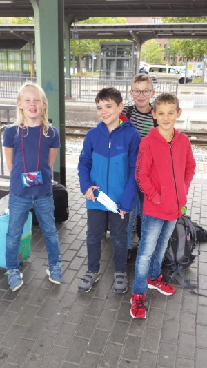 v.l.n.r. Kasimir Lenz, Rafael Asmus Leon, Lukas Kalusa und Mark Tulchynsky 03.September: Auflösung des Rochades Quizes unter Verschiedenes. Antwort A ist bei allen Fragen richtig. 25.August: Das 12. und letzte Offline-Schnellschachurnier endete mit einem Sieg von Alexander Kanzow, vor Phlipp Schütz und David Tulchynsky. Tabelle siehe unter Schnell-Blitz-VM. 20.August: Das 11. Schnellschachturnier in den Sommerferien gewinnt Christian Hartogh vor Alexander Kanzow und Tom Behringer. Tabelle siehe unter Schnell-Blitz-VM. 18.August: Das 10. Schnellschachturnier in den Sommerferien gewinnt Tom Behringer vor Christian Hartogh und Arne Schütz. Tabelle siehe unter Schnell+Blitz-VM. 13.August: Das 9.Schnellschachturnier in den Sommerferien gewinnt wieder Luca Uhlendorff vor Christian Hartogh und Tom Behringer. Tabelle siehe unter Schnell+Blitz-VM. 11.August: Das 8.Schnellschachturnier in den Sommerferien gewinnt Luca Uhlendorff vor Christian Hartogh und Tom Behringer. Tabelle siehe unter Schnell+Blitz-VM. 06.August: Das 7.Schnellschachturnier in den Sommerferien gewinnt Christian Hartogh vor Arne Schütz und Philipp Schütz. Tabelle siehe unter Schnell+Blitz-VM. 04.August: Das 6.Schnellschachturnier in den Sommerferien gewinnt Christian Hartogh vor David Tulchynsky und Arne Schütz. Tabelle siehe unter Schnell+Blitz-VM. 30 .Juli: Das 5.Schnellschachturnier in den Sommerferien gewinnt Alexander Kanzow vor Luca Uhlendorff und Arne Schütz. Tabelle siehe unter Schnell+Blitz-VM. 28.Juli: Das 4.Schnellschachturnier in den Sommerferien gewinnt Tom Behringer vor Alexander Kanzow und Arne Schütz. Tabelle siehe unter Schnell+Blitz-VM. 23.Juli: Das 3.Schnellschachturnier in den Sommerferien gewinnt Tom Behringer vor den punktgleichen Christian Hartogh und Luca Uhlendorff. Tabelle siehe unter Schnell+Blitz-VM. 21.Juli: Das 2.Schnellschachturnier in den Sommerferien gewinnt Christian Hartogh vor dem punktgleichen Luca Uhlendorff. Dritter wird Alexander Kanzow. Tabelle siehe unter Schnell+Blitz-VM. 16.Juli: Das 1.Schnellschachturnier in den Sommerferien gewinnt Alexander Kanzow im Blitzstechen gegen Luca Uhlendorff. 3. wird Rita Nizamova. Tabelle siehe unter Schnell+Blitz-VM. 07.Juli: Ab heute gibt es das Rochade-Quiz unter Verschiedenes. Jeden Tag gibt es eine neue Frage. Teilnehmen dürfen nur Nichtrochademitglieder. Der Sieger bekommt einen Preis. 01.Juli: Die Ausschreibung zur NDVM u12-u16 gibt es unter Nächste Termine. 10.Juni: Aufgrund der außergewöhnlichen Umstände in Göttingen, ist der Restart des KSV Rochade jetzt auf den 15.Juni verschoben worden. 05.Mai: Restart des KSV Rochade Göttingen: Am 08. Juni, unter der Vorrausetzung, dass das Gesundheitsamt grünes Licht gibt, wird im Pavillion draussen auf dem Schulhof des HGs das Vereinstraining fortgesetzt. 20.April: Wie wir heute erfahren haben, sind erwartungsgemäß sowohl die letzten beiden Runden in der Jugendliga Niedersachsen, als auch die Aufstiegsspiele in der Jugendlandesklasse, die am 09./10.Mai stattfinden sollten, abgesagt worden. Sie sollen evtl. nach den Sommerferien nachgeholt werden. Siehe unter Nächste Termine. 02.April: Da momentan keine realen Schachturniere durchgeführt werden können, hat die NSJ die ersten niedersächsischen Internetmeisterschaften ausgeschrieben. Die Ausschreibung befindet sich unter Nächste Termine. 13.März: Wichtige Mitteilung ! Aufgrund des Coronavirus wurden sämtliche Schachturniere auf Bezirks- und Landesebene abgesagt. Auch das Vereinsleben und das Kadertraining entfallen bis zum 14.April ! Auch das Bundesfinale im Schulschach wird nicht stattfinden. 11.März: Das Schulschachlandesfinale in Bemerode hat stattgefunden. In der WK II belegte das THG den 3.Platz, in der WK III wurde das HG 3., in der WK IV wurde das FKG Vizemeister, und bei den Grundschulen wurde die Albani-GS 6. Tabellen folgen.... 08.März: Ein goldener Sonntag für unsere Teams in den Jugendligen: Unsere I. fertigt Bemerode mit 5,5:0,5 ab und hat damit die Tabellenführung in der Jugendliga Niedersachsen übernommen, und unsere II. hat mit zwei 3:1-Siegen gegen Hildesheim II. und IV. die Jugendlandesklasse Süd gerockt und sich damit das Ticket für die Aufstiegsrunde in Rotenburg geholt. Bericht und Tabellen siehe unter Unsere Mannschaften. 23.Februar: Knapper 3,5:2,5-Sieg für unsere I. gegen die SG Hildesheim/ESV Göttingen in der Jugendliga Niedersachsen. Bericht, Ergebnisse und Tabelle siehe unter Unsere Mannschaften. 16.Februar: Vereinsschnellschachmeisterschaften des KSV Rochade in Göttingen. Sieger der B-Gruppe wurde in einem dramatischen Finish Rumo Schilling mit 5,5 P. aus 7 Runden. Am Ende hatte er 1 Buchholzpunkt Vorsprung vor dem zweitplatzierten Simon Zimmermann 5,5 P. Dritter wurde Lukas Kalusa mit 5 P. dem es als einzigen gelang die beiden Erstplatzierten zu besiegen. In der A-Gruppe siegte Christian Hartogh vor Tom Behringer, der das Blitzstechen gegen Rita Nizamova gewinnen konnte. Siehe unter Schnell+Blitz-VM. Zudem hat der Jugendbeirat getagt und einige Änderungen beschlossen. Siehe unter Vorstände/News/Links. 28.Januar: Schulschachbezirksfinale der WK I-III in Bad Harzburg: In der WK II wurde das THG Göttingen mit 10:0 Mannschafts- und 20:0 Brettpunkten Bezirksmeister. In der WK III gewann ebenfalls das THG Göttingen mit 13:1 Mannschaftspunkten vor dem HG Göttingen. Siehe unter Schulschach. 27.Januar: Im Schulschachbezirksfinale der Grundschulen und der WK IV in Bad Harzburg, hat sich die Albani-GS als Bezirksvizemeister wieder für das Landesfinale qualifiziert. Ganz stark war die Vorstellung von Felix Radenbach, der an Brett 1 sämtliche Partien gewinnen konnte. Zudem wurde das FKG mit 14:0 Mannschaftspunkten Bezirksmeister in der WK IV. Siehe unter Schulschach. 18.Januar: In Braunschweig wurde heute im InterCity-Hotel ein neuer Schachverein geboren: Der KSV Rochade Braunschweig. Wir gratulieren. 12.Januar: Ungefährdeter 4,5:1,5 Sieg für unsere I. in der Jugendliga Nds. beim SK Lehrte II. Und unsere II. verteidigt mit einem 2,5:1,5 Sieg beim ESV II ihre Tabellenführung in der Jugendlandesklasse Süd. Siehe unter Unsere Mannschaften. 02.-05.Januar: LEM in Verden. Mit dabei im 7rundigem Turnier: Im Meisterturnier, Fabian Stotyn 4 P. Platz 10, Christian Hartogh 3,5 P. Platz 12. Im A-Open: Rita Nizamova 3,5 P. Platz 36, Pavel Mimkes 1,5 P. Platz 78. Im B-Open: Philipp Schütz 4,5 P. Platz 22, Arne Schütz 4 P. Platz 29. und Antal Mimkes 3,5 P. Platz 39. Alle Infos siehe unter nsv-online.de. 01.Januar: Landesschnellschachmeisterschaft in Verden: Christan Hartogh 5 P. aus 7 Partien = 10.Platz, und Fabian Stotyn ebenfalls 5 P. = Platz 15. Siehe unter nsv-online.de. 02.Januar 2020: Unsere TOP-und FLOP-Liste des vergangenden Jahres gibt es unter Verschiedenes. 2020 27.-29.Dezember: DVM u10 in Magdeburg: Mit einer fantastischen Leistung hat unser u-10-Team mit Moritz Blomer, Rafael Asmus Leon, Mark Tulchynsky und Lukas Kalusa mit 9:5 Mannschaftspunkten den 8.Platz erreicht und damit als zweites Rochadeteam eine TOP 10-Platzierung in Deutschland erreicht. Überragender Spieler war dabei Moritz Blomer, der am Spitzenbrett 5,5 P. holte und dabei u.a. den deutschen Vizemeister Tim Sauer schlug. Siehe unter Turniere außerhalb.
v.l.n.r. Lukas Kalusa, Mark Tulchynsky, Rafael Asmus Leon und Moritz Blomer 21.-22.Dezember: LEM u8, und Schnellschachpokal der u10/u12 in Verden und 8 Rochadespieler haben teilgenommen. Anna Radenbach u8: 3,5 P. Platz 10, In der u10 Mark Tulchynsky 6 P. Platz 2, Felix Radenbach 4 P. Platz 8, Emil Piecha 3,5 P. Platz 12, Kasimir Lenz 3 P. Platz 17, Yehor Shvedko 2 P. Platz 22. In der u12: David Tulchynsky 5 P. Platz 3, und Sebastian Radenbach 2 P. Platz 10. Infos, Bilder und Bericht siehe unter nsj-online.de
Der KSV Rochade Göttingen bei der LEM u8, und Schnellschachpokal u10, u12 in Verden 17.Dezember: Göttinger Schulschachmeisterschaften der WK IV und GS im FKG: Das FKG mit den Rochadespielern Simon Zimmermann, David Tulchynsky und Aran Gajendran an den Brettern 2-4, wurde Götinger Stadtmeister in der WK IV und hat sich zusammen mit Hainberg I (mit Julius Mullaert an 1), THG I (mit Haven Luke und Milan Nizamov an den Spitzenbrettern) und dem II. Hainbergteam (mit Sebastian Radenbach und Kakob Klenke an den Spitzenbrettern) für das Bezirksfinale in Bad Harzburg qualifiziert. Bei den Grundschulen gewann Albani I (Felix Radenbach, Johannes Beier, Emil Piecha und Friedrich Kusch) vor der Waldorf-Schule. Siehe unter Schulschach. 15.Dezember: Alexander Kanzow wird mit 9,5 P. aus 10 Partien zum ersten Male Vereinsblitzmeister, nachdem er schon im September Ropte-Cup-Sieger geworden ist. Siehe unter Schnell+Blitz-VM. Den Weihnachtsdreikampf gewann Antal Mimkes vor dem punktgleichen Oliver Preuß.
Dreikampfsieger 2019 Antal Mimkes vor dem punktgleichen Oliver Preuß. 10.Dezember: Wie wir soeben erfahren haben ist neben der Gründung des KSV Rochade Hildesheim nun auch für den 18.01.2020 in Braunschweig die Gründung des KSV Rochade Braunschweig geplant. Weitere Infos demnächst. 20.November: Die Stellungnahme des DSB im Falle Jörg Schulz liegt nun vor. Siehe unter schachbund.de 15.November: EILMELDUNG ! Wie wir soeben erfahren haben, ist der DSJ-Geschäftsfürer Jörg Schulz, der dieses Amt 3 Jahrzehnte innehatte, von seinen Aufgaben als Geschäftsführer - freigestellt - worden. Wir warten noch auf die Stellungnahme des Präsidiums des deutschen Schachbundes und von Jörg Schulz. 10.November: Unsere I. spielt 3:3 gegen den SV Lingen in der Jugendliga Nds.und unsere II. behauptet mit einem 4:0 Sieg gegen SG Bad Harzburg-Goslar II und einem 2,5:1,5 Sieg gegen die SG Bad Harzburg-Goslar I die Tabellenführung in der Jugendlandesklasse Süd. Siehe unter Unsere Mannschaften. Zudem hat unsere JHV einen neunen Jugendvorstand gewählt. Siehe unter Vorstände/News/Links. 06.November: Der KSV Rochade Göttingen begrüßt zwei neue Mitglieder: Kanghyun Lee und Martin Sokor. Herzlich Willkommen. Siehe unter Mitglieder. 03.November: Unser u14-Team mit Antal Mimkes, Rumo Schilling, Luan Lesser und David Tulchynsky blieb bei der BMM u14 in Braunschweig auf Kurs. Nach einem 4:0-Sieg gegen BSF I gab es in der 2.Runde ein 3,5:0,5-Sieg gegen die II. mit Lennard Hillmann, Simon Zimmermann, Marius Liestmann und Lukas Kalusa, die zuvor einen 4:0-Sieg gegen BS-Gliesmarode landen konnten. Alle Infos siehe unter Schachbezirk2.de 17.-20.Oktober: BJEM aller Altersklassen in Wolfsburg. Der KSV Rochade Göttingen konnte sich in Wolfsburg mit 3 Bezirksmeistertiteln (Lukas Kalusa u12, Antal Mimkes u14, Pavel Mimkes u16) und insgesamt 6 Qualifizierten für die nächste LJEM in Rotenburg schmücken. Tabelle und Bericht siehe unter Turniere außerhalb.
BJEM 2019 in Wolfsburg 11.-13.Oktober: Rita Nizamova nahm am Meisterturnier der Herren in Braunschweig teil und wurde mit 1,5 P. gegen einen Gegnerschnitt von über 1900 DWZ 13. Tabelle siehe unter Schachbezirk2.de. 10.-12.Oktober: Christian Hartogh und Arne Schütz nahmen an den Bad Harzburger Schachtagen teil, wobei Christian mit 5,5 P. Platz 10 und Arne mit 4,5 P. Platz 31 von 82 Teilnehmern belegten. Arne Schütz hat dabei seine DWZ auf fast 1600 gesteigert. Alle Infos und Bilder siehe unter www.sk-bad-harzburg.de. 03.-06.Oktober: 4. Platz mit 5 aus 7 bei der Bezirkseinzelmeisterschaft der Herren in Lehrte für Christian Hartogh, der damit die DWZ-Latte von über 2100 überspringt. Alle Infos siehe unter Schachbezirk1.de. 05.Oktober: Die Einladung zur JHV 2019 am 10.November befindet sich nun unter Nächste Termine. 25.September: Jakob Frisch wird nachträglich zum u8-Bezirksmeister erklärt, da sich herausgestellt hat, dass der vor ihm platzierte Wolfenbütteler beim Turnier am 24.August zu alt war. Siehe unter Turniere außerhalb. 22.September: Idealstart für den KSV Rochade in beiden Jugendligen: Während unsere I. in der Jugendliga: Nds. in Tostedt mit 2,5:3,5 gewann, hielt sich auch unsere II. beim 4:0-Sieg gegen Bovenden und einem 3,5:0,5 Sieg gegen Hildesheim III schadlos. Siehe unter Unsere Mannschaften. 21.September: Erntedank/Ropte-Cup im Bürgerhaus Bovenden. Sieger des Turnieres und damit auch Ropte-Cup-Sieger 2019 wurde mit 7 P. Alexander Kanzow. Die Bovender Königskette gewann mit 6,5 P. Tom Behringer. Tabelle siehe unter Vereinsmeisterschaft. 18.September: Der KSV Rochade Göttingen begrüßt unsere neuen Talente. Herzlich Willkommen: Yehor Shvedko, und Friedrich Kusch (beide 10Jahre alt). Siehe unter Mitglieder. 11.-15.September: NDVM u12 in Magdeburg. Unsere u12 mit Marius Liestmann, Simon Zimmermann, Moritz Blomer und Lukas Kalusa war an Position 15 gesetzt und lief am Ende mit 7:7 Mannschaftspunkten auf Platz 12 ein. Tabelle, Foto und Bericht siehe unter Turniere außerhalb. 08.September: 36.Lehrter Open: Die Rochadespieler landeten auf den Plätzen Christian Hartogh 6 P. 14.Platz, Pavel Mimkes 5,5 P. Platz 35 (er ließ insgesamt 9 Spieler mit DWZ über 1900 hinter sich !), Rita Nizamova 4,5 P. Platz 61, Philipp Schütz 4,5 P. Platz 64, und Arne Schütz 4 P. Platz 77. Alle Infos siehe unter sk-lehrte.de 07.September: Jugendserie in Lehrte: Der KSV Rochade war mit 8 Spielern am Start: Jakob Frisch in der u8, Mark Tulchynsky, Lukas Kalusa, und Kasimir Lenz, und Johannes Beier in der u10. David Tulchynsky, und Marius Liestmann in der u12, Luan Lesser und Artur Liebetanz in der u14. Ganz starke Platzierungen belegten dabei Mark Tulchynsky mit einem 4.Platz, und David Tulchynsky und Luan Lesser mit jeweils 5.Plätzen. Alle Infos siehe unter sk-Lehrte.de. 31.August-30.September: Unsere u10 mit Moritz Blomer, Mark Tulchynsky, Lukas Kalusa und Rafael Asmus Leon wird bei der LMM in Rotenburg Landesvizemeister und qualifizierte sich vor weiteren 20 Teams hinter dem SZ Bemerode für die deutschen Meisterschaften im Dezember. Unsere II. mit Felix Radenbach, Kasimir Lenz und Emil Piecha wird 16. Tabelle und Bericht siehe unter Turniere außerhalb.
Magdeburg.....Magdeburg, wir fahren nach Magdeburg.....Unsere u10 in Rotenburg mit Trainer Christian Hartogh 24.August: Felix Radenbach ist neuer u10-Bezirksschnellschachmeister, während Jakob Frisch 5. und Anna Radenbach 7. bei der BEM der u8 in Wolfenbüttel wurden. Tabellen siehe unter Turniere außerhalb. Zudem wurde das KSV Rochade-Team mit Mark Tulchynsky, David Tulchynsky, Marius Liestmann, Artur Liebetanz, Milan Nizamov und Rita Nizamova in Lehrte Schachballmeister. 22.August: Der Vorstand des KSV Rochade Göttingen lädt alle Mitglieder nach dem Ropte-Cup am 21.September zur Jahresvauptversammlung um 16.30 Uhr im Bürgerhaus Bovenden ein. Die Einladung ist unter Nächste Termine angehängt worden. 20.August: Der KSV Rochade Göttingen heißt seine neunen Mitglieder, Emil Piecha, Johannes Beier und die Rückkehrer David und Mark Tulchynsky herzlich Willkommen. Siehe unter Mitglieder. 18.August: Gute Plätze für den KSV Rochade Göttingen beim Rintelner Open. Christian Hartogh wurde 13., Tom Behringer 17, und Rita Nizamova 57. von insgesamt 109 Teilnehmern. Alle Einzelheiten siehe unter sk-rinteln.de 26.Juni: Mit 6 aus 7 wird Lukas Kalusa von der Leineberg-Grundschule neuer Grundschulmeister Göttingens. Der 2.Platz mit 5,5 P. geht an Mark Tulchynsky von der Hainbund-GS, und der 3.Platz an Rafael Asmus Leon von der Albani-GS. Tabelle +Bericht siehe unter Schulschach.
v.l.n.r Silber: Mark Tulchynsky, Gold: Lukas Kalusa, und Bronze: Rafael Asmus Leon. 23.Juni: Ein sehr schönes Einladungsturnier gab es in Lehrte: Mit dabei waren der Hamburger SK, SK Lehrte I+II, Peiner SV, SK Bemerode, SK Delmenhorst, SF Staßfurt und der KSV Rochade Göttingen, der auf dem erwarteten 5.Platz landete. Bericht siehe unter sk-lehrte.de 19.Juni: Luca Uhlendorff (WK II) wird mit 6,5 P. aus 7 Partien souverän, ungeschlagen und unabgelenkt neuer Göttinger Schulschachmeister. Die weiteren Stadtmeister sind: Norbert Terpe (WK I), Pavel Mimkes (WK III), Antal Mimkes (WK IV), und Rita Nizamova als bestes Mädchen. Bericht und Tabelle siehe unter Schulschach.
Die Göttinger Schulschachmeister 2019 08.-15.Juni: DEM aller Jugend-Altersklassen in Willingen, und auch 2 Rochadespieler waren im A-Open dabei. Luca Uhlendorff war an 87 gesetzt und wurde mit 3 P. 84., doch Tom Behringer schoss den Vogel ab und holte ganz starke 5,5 P. aus 9 Runden gegen einen DWZ-Schnitt von über 2000, am Ende wurde er 23. und seine neue DWZ beträgt nun über 1900 Punkte. Alle Infos siehe unter deutsche-schachjugend.de 29.Mai-02.Juni: LMM in Verden: Unsere u12 mit Moritz Blomer, Simon Zimmermann, Marius Liestmann und Lukas Kalusa hat als Landesvizemeister die Qualifikation für die nordeutsche Meisterschaft in Magdeburg gepackt. Das I. u14-Team mit Rumo Schilling, Bennet Zimmermann, Luan Lesser und Matti Gargulla wird 6., das II. u14-Team mit Lennard Hillmann, Carlo dos Santos Schwaab, Artur Liebetanz und Lukas Kracke 8. In der u16 belegt unsere Mannschaft mit Alexander Kanzow, Pavel Mimkes, Rita Nizamova und Antal Mimkes den 3.Platz und verpasst knapp die Qualli für die NDVM. Alle Infos siehe unter nsj-online.de und einen Kurzbericht siehe unter Turniere außerhalb.
Unsere u12, u14 und u16 bei der LMM in Verden 2019. 31.Mai: Alexander Kanzow besteht in Verden sein Jugendtrainerdiplom in Gold !
Alexander Kanzow ab jetzt erster Jugendtrainer in Gold. 26.-29.Mai: Bundesfinale der Grundschulen in Friedrichsroda: Die Albani-GS war an 55 gestzt und wird am Ende mit Rafael Asmus Leon (7 aus 9 an Brett 1 !), Aaran Gajendran, Felix Radenbach und Johannes Beier mit 18,5: 17,5 Brettpunkten 38. Alle Infos siehe unter deutsche-schachjugend.wkgs 22.-26.Mai: Das THG in der Besetzung: Alexander Kanzow, Pavel und Antal Mimkes, und Rumo Schilling spielt in der WK III beim Bundesfinale in Berlin mit. Das Team war an 10 gesetzt und läuft am Ende auf Platz 8 ein. Alle Einzelheiten siehe unter: deutsche-schachjugend/dsm2019.de 18.-19.Mai: Erhobenen Hauptes verlässt der KSV Rochade Göttingen nach einem 5:1-Sieg gegen Weiße Dame Hamburg und einem 3,5:2,5-Sieg gegen Flensburg die Jugendbundesliga. Abschlussbericht von Tom siehe unter Unsere Mannschaften. 05.Mai: Leider verliert unsere I. Jugendmannschaft mit 1,5: 4,5 gegen den Tabellenzweiten in Lehrte. Damit ist der Abstieg in die Jugendliga Niedersachsen besiegelt. Bericht von Tom siehe unter Unsere Mannschaften. 18.-23.April: Landeseinzelmeisterschaften aller Altersklassen auf Norderney. Die Highlights: Platz 7 für Luca Uhlendorff in der u18, Platz 5 für Alexander Kanzow in der u16, Platz 4 für Antal Mimkes in der u14, Platz 11 für Marius Liestmann in der u12, Platz 7 für Lukas Kalusa in der u10, und Platz 11 für Volker Liestmann im Open. Tabellen siehe unter d4-d5.net, Berichte siehe unter nsj-online.de und unter Turniere außerhalb. 03.April: Einmal Gold und dreimal Bronze war die Ausbeute beim Schulschachlandesfinale in Bemerode. Neben dem THG, das sich souverän mit 23,5:0,5 Brettpunkten den Landesmeistertitel in der WK III sichern konnte, hat sich auch die Albani-GS mit einem 3.Platz für das Bundesfinale qualifiziert. Einen 3.Platz gab es auch für die Mädchen des THG in der WKM III und für das HG in der WK II. Tabellen und Bericht siehe unter nsj-online.de 31.März: Herzlich Wilkommen Jakob Frisch 7 Jahre, und Anna Radenbach 6 Jahre alt. Siehe unter Mitglieder. 30.März: Überragender 5. Platz für Luica Uhlendorff beim Leinefelde-Worbis-Open. Mit 6,5 P. aus 9 Partien wurde er zudem auch bester Jugendlicher des Gesamtturnieres. Die weiteren Rochadeplatzierungen: Christian Hartogh 6 P. (7.Platz), Pavel Mimkes 5 P. (20.Platz), Rita Nizamova 4,5 P. (25.Platz), und Comebacker Tobias Schuster 3 P. (42.Platz). Alle Infos siehe unter SC Rochade Leinfelde. 29.März: Tobi ist wieder da. Der KSV Rochade Göttingen freut sich über 2 neue Mitglieder. Einmal über die 7 jährige Anna Radenbach aus der Albani-GS, und Tobias Schuster (THG), der viele Jahre beim KSV Rochade gespielt hat, ist wieder da. Herzlich Willkommen. Infos siehe unter Mitglieder. 17.März: Titelregen für den KSV Rochade Göttingen bei der BJMM der u10- u16 in Peine. Nachdem der KSV Rochade sich schon den Titel als u14-Mannschaftsmeister sichern konnte, gewann man auch verlustpunktfrei in den altersklassen u12 und u16. Nur unser u10-Team konnte ersatzgeschwächt mit 13:1 Mannschaftspunkten und am Ende einen Brettpunkt Rückstand auf den Peiner SV "nur" den 2.Platz ergattern. Bericht siehe unter Turniere außerhalb. 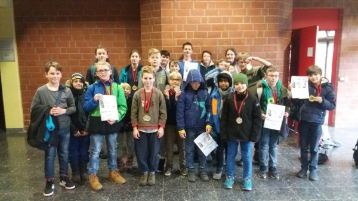 Unsere siegreichen u10, u12, u14 und u16-Teams bei der BJMM in Peine. 10.März: Unsere I. sendet ein Lebenszeichen in der Jugendbundesliga: 3:3 in Hagen. Unsere II. unterlag in den Abschlussrunden zwar Hildesheim I mit 1,5:2,5, schlug aber Hildesheim II mit 3:1 und beendet damit die Jugendlandesklasse auf einem 4.Platz. Siehe unter Unsere Mannschaften. 05.März: Schulschachbezirksfinale in Bad Harzburg: Souveräner Sieger der WK II (mit nur 3 Spielern): Das HG mit Luca Uhlendorff und Philipp Herzig, Zweiter wurde das THG mit Rita Nizamova und Daniel Grib. Souveräner Sieger der WK III mit 10:0 Mannschafts-und 20:0 Brettpunkten wurde das THG mit Alexander Kanzow, Pavel Mimkes, Antal Mimkes, und Rumo Schilling. Zweiter wurde hier etwas überraschend das MPG mit Nils Matthießen und Amelie von Hugo an den Spitzenbrettern. Siegerliste siehe unter Schulschach. 04.März: Die Schulschachbezirksmeister dieses Jahres kommen wieder aus Göttingen: Sieger der Grundschulen wurde die Albani-GS mit Rafael Asmus Leon, Aran Gajendran und Felix Radenbach, während Simon Zimmermann in der WK IV mit dem FKG triumphieren konnte. Auch das THG-Mädchenteam hat sich kampflos für das Landesfinale qualifiziert. Siegerliste siehe unter Schulschach. 17.Februar: Verdiente 0,5:5,5-Niederlage für unsere I. gegen Lübeck in der Jugendbundesliga. Tabelle und Bericht siehe unter Unsere Mannschaften. Und der Jugendbeirat hat getagt und wichtige poilitische und terminliche Entscheidungen für die neue Saison getroffen. Siehe unter Vorstände/News/links. 16.Februar: GM Wahls hat eine neue Startseite. Diese wird alle 2 Wochen aktualisiert. 10.Februar: Leider unterliegt unsere I. Jugendmannschaft in der Jugendbundesliga sehr unglücklich dem Post SV Uelzen mit 2:4, siehe unter unter Unsere Mannschaften ,aber unser u14-Team hielt sich bei der BMM in Braunschweig schadlos und hat verlustpunktfrei die Qualifikation für die LMM 2019 geschafft, während die III.Mannschaft 2. und die II. Mannschaft 4. wurde. Berichte und Tabellen siehe unter Turniere außerhalb. 22.Januar: Bei den Göttinger Schulschachmeisterschaften haben sich mit der Albani-Schule in der WK-GS, und dem FKG in der WK IV die Favoriten erwartungsgemäß durchgesetzt. Außerdem haben sich die Hainbund-GS, das HG, das THG und die Waldorfschule sich für das Bezirksfinale qualifiziert. Tabellen siehe unter Schulschach. 13.Januar: Auch die 3.und 4.Runde der BMM verlief für unsere u14-Teams erfolgreich. Unsere I. hat sich als Bezirksmeister wieder für die LMM qualifiziert aber mit einem 3:1-Sieg gegen unsere III. den ersten Brettpunkt in diesem Wettbewerb abgegeben. Viel spannender war allerdings unsere Rückreise, die von Braunschweig nach Göttingen 6 Stunden gedauert hat, und das, obwohl wir ab Hannover-Laatzen mit dem ICE gefahren sind ! Man kann diesem Schienendienstleistungsbetrieb einfach nur dankbar sein, ohne sie gebe es viel weniger Abenteuer. "Thank you for travelling with deutsche Bahn !" 03.-06.Januar: Die LEM 2019 ist Geschichte: Fabian Stotyn wurde leider in der letzten Runde noch abgefangen, dennoch hat er mit 5 P. aus 7 Runden (dabei blieb er ungeschlagen), mit dem 2.Platz ein geiles Turnier gespielt. Christan Hartogh konnte im Meisterturnier ebenfalls die Erwartungen erfüllen, er wurde mit 3 P. am Ende 13. Im C-Open mit 64 Teilnehmern wurde Kay Terpe mit starken 4,5 P. 16. und Norbert mit 2 Siegen in den letzten beiden Runden 52.. Alle Ergebnisse, Bericht und Impressionen siehe unter nsv-online.de. 03.Januar: Bei der LEM gelang Christian Hartogh gestern ein Sieg gegen FM Polster. Auch Norbert Terpe und sein Papa sind neben unseren passiven Mitgliedern Fabian Stotyn und Christian Hartogh mit dabei. Alle Einzelheiten siehe unter nsv-online.de. 02.Januar: Bei der niedersächsischen Schnellschachmeisterschaft in Verden wird Christian Hartogh mit 5 P. aus 7 Runden 8. und Fabian Stotyn mit 6 P. 3. von 117 Teilnehmern. Tabelle siehe unter nsv-online.de 01.Januar: Die TOP-und FLOP-Liste des Jahres 2018 gibt es unter Verschiedenes. 27.-30.Dezember: Unsere "Alte Garde" trat beim Paderborner Schachtürken-Cup an. Im B-Open belegte Manuel Drehwald von 72 Teilnehmern Platz 2. Im A-Open belegten Christian Hartogh, Julius Rosin und Nelo Oshionwu die Plätze 50, 55, und 70 von 80 Teilnehmern. Alle Tabellen und Impressionen siehe unter schachtürken-cup.de. 09.Dezember: Tom Behringer wird im Blitzstechen gegen Christian Hartogh neuer Vereinsblitzmeister siehe unter Schnell+Blitz-VM und Luan Lesser neuer Göttinger Dreikampfsieger. Er gewann das Tandemschachturnier und das Werwölfeln.
Tom Behringer (Vereinsblitzmeister 2018) und Luan Lesser (Dreikampfsieger 2018) 06.Dezember: Der KSV Rochade Göttingen heißt unsere Neuzugänge Felix Radenbach, Sebastian Radenbach, Kasimir Lenz und Emil Piecha herzlich Willkommen. Siehe unter Mitglieder. 02.Dezember: Für unserer Jugendbundesligateam gab es beim HSK die erwartete 0:6-Packung, und auch unsere II. blieb beim zweimaligen 2:2 gegen ESV I.+II. Mannschaft sieglos. Bericht siehe unter Unsere Mannschaften. 25.November: Alexander Kanzow gewinnt souverän die Vereinsschnellschameisterschaft der Gruppe über 1400 DWZ vor Rita Nizamova und Tom Behringer. Die Gruppe unter 1400 DWZ gewinnt mit 11 P. aus 11 Partien Philipp Schütz vor Simon Zimmermann und Luan Lesser. Siehe unter Schnell-Blitz-VM und Auswertung der Vereins-DWZ ab morgen unter Vereins-DWZ-Liste. 18.November: In den ersten beiden Runden der BJMM u14 konnte sich unsere I.Mannschaft weiter schadlos halten und schlug BSF I und Königsspringer BS mit jeweils 4:0, und hat damit ,wenn man das vergangene Jahr mitrechnet, insgesamt 16:0 Mannschafts und 32:0 Brettpunkte auf dem Konto. Unsere II. trennte sich von BSF II 2:2 und gegen unsere III. ebenfalls 2:2, während unsere III. Gifhorn mit 3:1 schlagen konnte. 14.November: Nach den Sommerferien ist das bundesweit größte Pilotprojekt zur Einbindung von Schach in den Schulunterricht gestartet. 1500 Grundschulkinder aus 70 Klassen aus Bremen und Bremerhaven lernen einmal in der Woche eine Stunde lang Schach. Siehe Bericht im Weser-Kurier. 10.November: Rumo Schilling blieb beim Jugendserienturnier in Herzberg mit 4,5 P. aus 7 Partien fast ungeschlagen (nur eine Niederlage) und landete in der u12 auf dem 5.Platz. Bericht, Fotos und Tabellen siehe unter Jugendserie.de 04.November: Unsere I. kassierte leider in der Jugendbundesliga in ihrem 2.Match ihre 2.Niederlage: 2:4 gegen Doppelbauer Kiel, während unsere II. mit einem 2:2 gegen SV Springe und einem 3,5:0,5 gegen SK Rinteln in der Jugendlandesklasse weiterhin ungeschlagen blieb und somit ihre Tabellenführung verteidigen konnte. Berichte und Tabellen siehe unter Unsere Mannschaften. 11.-14.Oktober: Bezirksjugendeinzelmeisterschaften in Schöningen: Der KSV Rochade Göttingen konnte sich mit 2 Bezirksmeitertiteln schmücken: Rita Nizamova in der u16, und Antal Mimkes in der u14 haben sich den Titel geholt, des weiteren wurden Pavel Mimkes in der u16, und Marius Liestmann in der u12 Vizemeister und haben sich für die LEM nächstes Jahr auf Norderney qualifiziert. Tabellen und Bericht siehe unter Tuniere außerhalb.
Der KSV Rochade Göttingen bei der BJEM 2018 in Schöningen 04-07.Oktober: Ungeschlagen mit 5,5 P. aus 7 Partien wird Christian Hartogh vor Alexander Israilev und Harald Kiesel neuer Bezirksmeister des Schachbezirkes Hannover. Alle Einzelheiten siehe unter schachbezirk-hannover.de. 28.September: Der KSV Rochade Göttingen begrüßt zwei Neuzugänge: Luca Göran Boztug und Nils Sudratjat, der schon 2011-2015 Mitglied war und nun aus Köln zurückgekehrt ist. Siehe unter Mitglieder. 23.September: Völlig unnötig unterliegt unsere I. Mannschaft bei ihrem Premierenspiel in der Jugendbundesliga in Delmenhorst mit 2:4, während unsere II. bei ihren 3,5:0,5 Sieg gegen Gliesmarode und ihrem 2,5:1,5 Sieg gegen Isernhagen eine weiße Weste in der Jugendlandesklasse behielt. Berichte siehe unter Unsere Mannschaften. 15/16.September: 9.Platz für unsere u10 bei der LMM der u10 in Rotenburg. Kurzbericht siehe unter Turniere außerhalb. 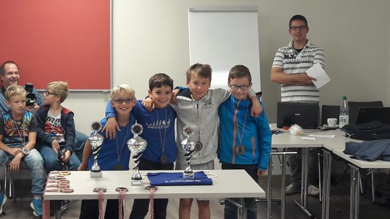 KSV Rochade u10-Team v.l.n.r. Moritz Blomer, Raffael Asmus Leon, Milan Nizamov, und Lukas Kalusa 07-11.September: Unsere u16 konnte bei der NDVM in Berlin leider nur zu dritt antreten, doch Luca Uhlendorff (jetzt hat er endlich über 1700 DWZ), Rita Nizamova und Phillip Schütz verkauften sich sehr tapfer und holten gegen starke Konkurrenz sogar 3 Mannschaftspunkte. Tabellen, Impressionen und Partien siehe unter schachjugend-in-berlin.de 05.-09.September: Ein entäuschender 12.Platz in der Endabrechnung bei der NDVM für unser u14-Team mit Alexander Kanzow, Pavel Mimkes, Antal Mimkes und Bennet Zimmermann. Die Qualli für die Deutsche hat diesmal nicht geklappt, dennoch wurde man wieder bestes niedersächsisches Team. Tabellen, Impressionen, Partien und Bericht siehe unter dvm-schach.de 01./02.September: Mit 7 Spielern nahm der KSV Rochade am Samstag zunächst beim Jugendserienturnier in Lehrte teil, wobei alle in etwa auf den erwarteten Plätzen einliefen, siehe unter Jugendserie.de, um dann am So. mit 10 Teilnehmern beim Lehrter Open mitzuspielen. Dabei konnten sich Christian Hartogh und Alexander Kanzow auszeichnen, die in einem ganz stark besetzten Turnier unter den TOP 10 von 139 Teilnehmern einlaufen konnten. Bericht, Tabelle und Bilder siehe unter sk-lehrte.de. 19.August: Der NSV-Präsident Michael S. Langer (BS-Gliesmarode siehe Foto) gewinnt ungeschlagen mit 8,5 P. aus 9 Partien den Erntedank-Ropte-Cup vor Alexander Schmidt (Bad Emstal) und Julius Rosin, der damit zum vierten Male den Ropte-Cup gewann. Die weiteren Sieger waren: u18: Luca Uhlendorff 5,5 P. u16: Alexander Kanzow 6 P. u14: Antal Mimkes 6 P. u12: Moritz Gronemeyer 4,5 P. und u10: Moritz Blomer 5 P. Tabellen, Bilder, Berichte siehe unter Vereinsmeisterschaft. 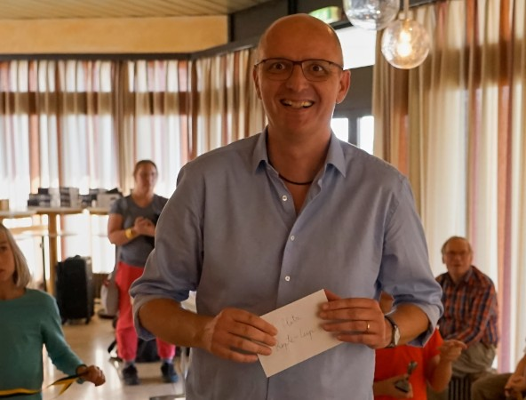 Zudem wurde auf der JHV ein neuer Vereinsvorstand gewählt. Neuer Geschäftsführer ist Christian Hartogh, und neuer Turnierwart wurde Tom Behringer. Siehe unter Vorstände/News/Links. 01.Juli-01.August: Großartige Ergenisse der Rochadespieler bei verschiedenen Turnieren in den Sommerferien: Luca Uhlendorff war beim Ems-Vechte-Cup in Lingen an 58 gestzt und lief mit 2,5 P. aus 5 Partien auf Platz 30 ein. siehe unter www.ems-vechte-cup.de, Christian Hartogh wurde mit 5 P. aus 7 Partien 6. beim Turnier auf Schloss Mansfeld siehe www.kalliwoda.de, und Rita Nizamova wurde in der B-Gruppe beim St.Pauli-Open mit 5,5 P. aus 9 Partien beste Damenspielerin. Siehe unter www.fcstpauli-open.de. 30.Juli: Die Einladung zur JHV und zum Ropte-Cup ist unter Nächste Termine sichtbar. 17.Juni: JAAAAAAA! Der KSV Rochade Göttingen steigt in die Jugendbundesliga auf !!!!
Mit einem 5:1 Sieg gegen Nordhorn-Blanke, und einem dramatischen 3,5:2,5 Erfolg gegen den direkten Mitkonkurrenten Aurich bei gleichzeitiger 2,5:3,5 Niederlage des Stader SV gegen Nordhorn-Blanke, haben v.l.n.r. Antal Mimkes,Tom Behringer, Bennet Zimmermann, Luca Uhlendorff, Alexander Kanzow, und Arthur Semmelmaier die Jugendliga Niedersachsen gewonnen und spielen nun nächste Saison mit Teams wie Hamburger SK, Lübecker SV, Hagener SV I und SK Lehrte I, u.a. in der Jugendbundesliga. Jetzt wird gefeiert, Bericht von Tom siehe unter Unsere Mannschaften Abschlusstabelle der Jugendliga Nds.
13.Juni: Göttinger Schulschacheinzelmeisterschaften im Hainberggymnasium mit 72 Teilnehmern. Die Sieger dieses Jahres lauten: David Tulchinsky (Hainbund-GS) WKGS, Antal Mimkes (THG) WK IV, Alexander Kanzow (THG), WK III, Philipp Schütz (MPG) WK II, und Arne Schütz (MPG) WK I. Tabellen und Bericht siehe unter Schulschach. Zudem konnte der KSV Rochade Göttingen mit Arne und Philipp Schütz zwei neue Mitglieder im Verein begrüßen. Herzlich Willkommen. Siehe unter Mitglieder. 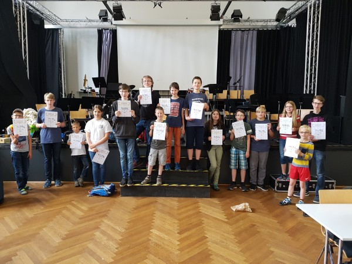 Schulschacheinzelmeisterschaft: Links die Bronzenen, mitte die Goldigen und rechts die Silbernen. Sensation in Willingen Alexander Kanzow Nr. 6 in Deutschland ! 19.-27.Mai: Die deutschen Jugendeinzelmeisterschaften aller Altersklassen in Willingen brachten Überraschungen hervor, aber die größte kam aus Göttingen. Vom KSV Rochade waren neben Alexander Kanzow u14, auch Antal Mimkes u12, und Luca Uhlendorff beim B-open dabei. Alle Informationen, Impressionen, Videos und mehr siehe unter deutsche-schachjugend/sport.de, und unter nsj-online.de, Vereinsbericht siehe unter Turniere außerhalb. 09.-13.Mai: Mit 4 Teams nahm der KSV Rochade in diesem Jahr an der LJMM in Rotenburg teil. Unsere u16 wurde im Endklassment 4. Auch unser u12-Team, das in der u14 antreten musste wurde 4. Die anderen Teams belegten die Plätze 7 und 8. Berichte, Fotos und Tabellen siehe unter nsj-online.de. und ein Kurzbericht siehe unter Turniere außerhalb.de. 02.-06.Mai: Mit ganz starken 6 P. aus 9 Partien an Brett 2 war Marius Liestmann einer der Leistungsträger der Hainbund-GS (16. von 76) bei den Deutschen Schulschachmeisterschaften der Grundschulen in Friedrichsroda. Deutscher Meister in dieser Altersklasse wurde die Wasserkampschule aus Hannover. Alle Einzelheiten, Ergebnisse, Fotos und Berichte siehe unter deutsche-schachjugend.de. 08.April: Der KSV Rochade Göttingen hat mit einem 4,5:1,5-Sieg gegen den Hagner SV II den Klassenerhalt in der Jugendliga Niedersachsen geschafft. Unsere II spielte gegen Lehrte III 2:2, und unterlag Lehrte IV mit 1:3, somit landete man in der Jugendlandesklasse Süd auf dem 9.Platz. Tabellen und Berichte siehe unter Unsere Mannschaften. 07.April: Der Titelregen beim KSV Rochade geht weiter. Sieg für Moritz Blomer in der u9 beim Jugendserienturnier in Bovenden, 2.Platz für Rumo Schilling in der u12, 3.Platz für Matti Gargulla in der u14. Weitere Rochadeplatzierungen: u9: Raffael Asmus Leon 6.,Lukas Kalusa 12., Aaron Gajendram 13., u12: Arthur Liebetanz 6., Luan Lesser 7.,Lennard Hillmann 9., Marius Liestmann 10.,Haven Luke 24.,u14: Marian Juric 5.,Frederik Paufler 6.,Lukas Kracke 8.,Tabellen siehe unter jugendserie.de, Bericht siehe unter Turniere außerhalb. 24.-30.März: LJEM der Jugendlichen in Rotenburg WIE GEIL WAR DAS DENN !!!! Es hagelte Titel für uns in Rotenburg. Landesmeistertitel für Alexander Kanzow in der u14, Landesvizemeistertitel für Antal Mimkes in der u12, auch Rita Nizamova in der u18, und Pavel Mimkes in der u14 haben ein ganz starkes Turnier hingelegt, und hatten beide bis zur letzten Runde noch Chancen sich für die Deutsche zu qualifizieren. Schachballlandesmeister in der u12/u10, Schachballlandesvizemeister in der u18/16/14. Und der KSV-Betreuer Christian Hartogh hat das Team-Schach-Battle gewonnen. Alle Tabellen siehe unter d4-d5.net, Berichte, Interviews, Bilder und vieles mehr siehe unter nsj-online.de, Vereinsbericht siehe unter Turniere außerhalb.
v.l.n.r.: Luca Uhlendorff, Vereinstrainer Christian Hartogh, Bennet Zimmermann, Alexander Kanzow, Antal Mimkes, Rita Nizamova, Pavel Mimkes, Artur Liebetanz, Rumo Schilling, und Amelie von Hugo. 14.März: Landesfinale im Schulschach in Hannover. Das THG Göttingen belegte in der WK III den 3. und in der WK IV den 6.Platz. Das Hainberggymnasium belegte in der WK IV den 8.Platz, und die Göttinger Hainbunggrundschule wurde in der WK GS 4. und qualifizierte sich damit für das Bundesfinale. Tabellen und Bericht siehe unter nsj-online.de. 03.März: Mit 11 Teilnehmern war der KSV Rochade Göttingen beim Schnellschachturnier in Leinefelde-Worbis dabei. Bester Rochadespieler war Arthur Semmelmaier 16., der auch gleichzeitig bester Spieler in der Kategorie unter DWZ 1800 war. Auch Luca Uhlendorff 20. und Marius Liestmann 52. konnten Rating-Preise abstauben. Endtabelle und Kurzbericht siehe unter schachclub-leinefelde.de. 18.Februar: Die Bezirksjugendmannschaftsmeisterschaften im Bezirk II haben in Peine und Braunschweig stattgefunden und neben der u14, konnte sich auch unsere u16 mit Rita Nizamova, Alexander Kanzow, Luca Uhlendorff, und Pavel Mimkes mit 10:0 Mannschafts-und 16,5:0,5 Brettpunkten in die Siegerliste einreihen. Auch unser u14-Team mit Bennet Zimmermann, Matti Gargulla, Lukas Kracke und Frederick Paufler durfte schon mal u16-Luft schnuppern und wurde mit einem ausgeglichenem Punktescore 3. Unsere u12 (Antal Mimkes, Luan Lesser, Rumo Schilling, und Artur Liebetanz) wurde mit 12:2 Mannschaftspunkten und 24,5:3,5 Brettpunkten 2. hinter dem Peiner SV. Unser zweites u12-Team konnte krankheitsbedingt nur zu dritt antreten und wurde schlussendlich 7. Alle Tabellen und Berichte siehe unter Turniere außerhalb. 14.Februar: Auch der Bezirksmeistertitel der Grundschulen geht nach Göttingen. Die Hainbund-GS mit Marius Liestmann (6 aus 6) bleibt mit 11:1 Mannschaftspunkten ungeschlagen und qualifiziert sich zusammen mit der Burgschule Peine für das Landesfinale in Lehrte. Tabelle siehe unter Schulschach. 12.Februar: Unsere I.Jugendmannschaft holt in der Jugendliga Nds. mit einem souveränen 5:1-Sieg gegen den SV Lingen zwei ganz wichtige Punkte zum Klassenerhalt, während unsere II. in der Jugendlandesklasse gegen Bovenden-Parensen mit 1:3 unterlag. Siehe unter Unsere Mannschaften 30.Januar: Die Dominanz der Göttinger Schulen bleibt im Schulschachbezirk Braunschweig bestehen: Sieger der WK I: FKG Göttingen, Sieger der WK II: HG Göttingen, und Sieger der WK III: THG Göttingen, und Sieger der WK IV: HG Göttingen. Siehe unter Schulschach. 29.Januar: Das Hainberggymnasium Göttingen gewinnt knapp vor dem THG Göttingen das Schulschachbezirksfinale der WK IV 2018 vor weiteren 26 Teams. Siehe unter Schulschach. 28.Januar: Die BJMM u14 ist zu Ende und unsere I. hat sich mit 12:0 Mannschafts-und 24:0 Brettpunkten ordentlich mit Ruhm bekleckert. Auch unsere II. erreichte bei 8 Mannschaften einen sehr guten 3.Platz.. Abschlusstabelle und Bericht siehe unter Turniere außerhalb und unter schachbezirk2.de 21.Januar: Vereinsschnellschachmeisterschaft des KSV Rochade im BSW. Sieger wird Luca Uhlendorff mit 6 Punkten aus 7 Partien vor Arthur Semmelmaier und Pavel Mimkes mit 5,5 Punkten vor weiteren 15 Teilnehmern. Tabelle siehe unter VM-Schnellschach. Danach hat der Jugendbeirat getagt. Siehe unter Jugendbeirats-News. 12.-14.Januar: Moritz Blomer 4 P. (13.Platz) und Amelie von Hugo 3 P. (9.Platz) haben bei der LJEM u8 und beim Schnellschachpokal der u10/u12 in Rotenburg teilgenommen. Bericht + Tabellen der NSJ siehe unter d4-d5.net. 10.Januar: Die Göttinger Grundschulmeisterschaften wurden im Hainberggymnasium ausgetragen. Souveräner Sieger wurde die Hainbund-GS, vor der Leineberg-GS, und der Albani-GS. Bester Einzelspieler war Marius Liestmann mit 7 P. aus 7 Partien am 1.Brett. Tabelle und Siegerfoto siehe unter Schulschach. 04.Januar: Unsere Top und Flop-Liste des Jahres 2017 gibt es unter Verschiedenes. 27.Dezember-30.Dezember: Pavel und Antal Mimkes belegen beim Schachtürken-Cup in Paderborn die Plätze 31 und 52 von 86 Teilnehmern. Alle Einzelheiten siehe unter schachtürken-cup.de 27.-29.Dezember: Unsere u10 mit Marius Liestmann, Simon Zimmermann (5 P. aus 7 Partien), Carlos Späth, und Rafael Asmus Leon war an 73. Stelle von 80 Mannschaften gesetzt und lief am Ende auf Platz 55 ein. Alle Infos siehe unter deutsche-schachjugend.de. 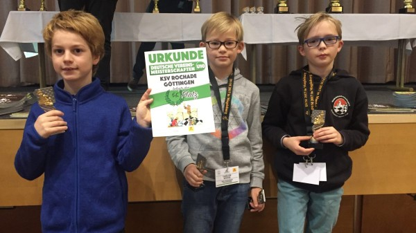 Simon Zimmermann, Carlos Späth, und Marius Liestmann bei der DVM u10 in Magdeburg. Es fehlt Rafael Asmus Leon. 17.Dezember: Unsere I. hat bei der BJMM nach den 4:0 Siegen gegen unsere II. und Gifhorn mit 8:0 Mannschafts- und 16:0 Brettpunkten nach wie vor eine weiße Weste, und auch unsere II. konnte bei der BJMM in Braunschweig mit einem 4:0 Sieg über BSF II ihren ersten Sieg einfahren. Alle Infos siehe unter schachbezirk2.de 15.-17.Dezember: 5 Rochadespieler waren bei den 11.offenen Südharzmeisterschaften dabei. Bei 81 Telnehmern landeten Julius Rosin und Tom Behringer ungeschlagen mit 4 P. aus 6 Partien, auf den Plätzen 4 und 6. Manuel Drehwald (Sieger des Jahres 2015) wurde mit 3,5 P. 9., und Christian Hartogh und Arthur Semmelmaier landeten mit 3 P. auf den Plätzen 17 und 18. Alle Infos siehe unter kalliwoda.de 12.Dezember: Der KSV Rochade Göttingen begrüßt den nächsten Zugang in dieser Saison. Herzlich Willkommen: Daniel Grib vom THG. Siehe unter Mitglieder. 10.Dezember: Christian Hartogh verteidigt mit 10,5 P. (er gab nur ein einziges Remis gegen Rita Nizamova ab) soverän seinen Blitzvereinsmeistertitel vor Tom Behringer mit 9 P. Siehe unter VM-Blitz. Beim anschließenden Weihnachtsdreikampf setzte sich Pavel Mimkes beim Dokospielen in Front, aber er wurde vom besten Tandemspieler Antal Mimkes überholt, doch dann gewann Arthur Liebetanz, nachdem er mehrmals das ganze Dorf veräppelt hatte, den Werwolf-Wettkampf. Gesamtsieger allerdings und damit Dreikampfmeister des Jahres 2017 wurde aber schlussendlich Luca Uhlendorff. Herzlichen Glückwunsch. 03.Dezember: Unsere II. unterliegt in Bovenden dem SZ Bemerode chancenlos mit 0:4, aber unsere I. schlägt Lehrte II. sensationell mit 4:2. Berichte und Tabellen siehe unter Unsere Mannschaften. 19.November: Traumstart für unsere I. bei der BJMM der u14 in Braunschweig. Einem 4:0 Sieg über BSF II ließ das Team gleich einen weiteren 4:0 Erfolg über BSF I folgen. Unsere II. konnte leider nur zu dritt antreten, deshalb gab es eine 1,5:2,5 Niederlage gegen BSF I und ein 2:2 gegen BSF III. Tabelle und Bericht siehe unter schachbezirk2.de. 18.November: Jugendserie in Herzberg: Der KSV Rochade Göttingen konnte sich mit zwei Siegern schmücken. Moritz Blomer gewann mit hervorragenden 6 aus 7 die u8, und auch Rita Nizamova ließ mit 7 aus 7 in der u14 kein Auge trocken. Ebenfalls am Start waren: Lukas Kalusa 6.Platz in der u8, Maja Antonina Uecker 14.Platz in der u10, Rumo Schilling 7.,Carlo dos Santos Schwaab 9.,Arthur Liebetanz 11.,Frederik Paufler 13.,Tristan Fahrendorff 14.Platz in der u12, und Florian Schinke 7.Platz in der u16. Alle Ergebnisse siehe unter Jugendserie.de. 06.November: Herzlich willkommen beim KSV Rochade: Lukas Kalusa von der Leineberggrundschule und Rafael Asmus Leon von der Albanigrundschule, beide sind 8 Jahre alt. Siehe unter Mitglieder. 05.November: Wichtiger 4,5:1,5 Sieg für unsere I. gegen Papenburg-Heisfelde in der Jugendliga Niedersachsen, doch unsere II unterliegt sowohl Rinteln als auch Ricklingen mit 1:3. Siehe unter Unsere Mannschaften. 10.-14.Oktober: Fabian Stotyn gewinnt mit 7 aus 8 die Bad Harzburger Schachtage. Der Vorstand gratuliert ganz herzlich. Alle Einzelheiten siehe unter: sk-bad-harzburg.de 30.September-03.Oktober: BEM in Peine und wir waren mit 17 Spielern dabei. Nach dem Turnier konnte sich der KSV Rochade Göttingen mit 2 Bezirksmeistertiteln (Pavel Mimkes u14, und Antal Mimkes u12) schmücken und insgesamt 4 Qualifikationsplätze für die LEM nächstes Jahr in Rotenburg ergattern. Tabellen, Berichte, Fotos siehe unter schachbezirk2.de und unter Turniere außerhalb.
Der KSV Rochade bei der BJEM in Peine 2017. 24.September: Unsere I.Jugendmannschaft startet mit einer sehr unglücklichen 2:4-Niederlage in Stade, während die II. in Hildesheim, der dortigen I. mit 1:3 unterliegt, und Hildesheim II mit 2,5:1,5 schlägt. Siehe unter Unsere Mannschaften. 17.September: Ernte-Dank-Turnier in Bovenden und 5 Rochadespieler waren dabei: Bester wurde Luca Uhlendorff auf Platz 5, gefolgt von Thomas Post 6. (Niederlagen gegen Rita und Luca), Rita Nizamova 10., Rumo Schilling 13., und Moritz Blomer 18. Abschlusstabelle siehe unter Turniere außerhalb. 07.-10.September: Unsere u14 holt in Magdeburg bei der NDVM nach großem Fight einen hervorragenden 7.Platz. Berichte, Tabellen und Fotos siehe unter dvm-schach.de, oder unter nsj-online.de, oder unter Turniere außerhalb. 04.September: Die nächsten Talente kommen: Herzlich Willkommen: Yelijen Lesser, von der Leineberg-GS, Haven Luke vom THG und Lennard Hiillmann und Arnold Julius Mulaert vom HG. Siehe unter Mitglieder. 03.September: 112 Teilnehmer beim Lehrter Open. Die Platzierungen: Christian Hartogh 6 P. und 12. im Gesamtklassment und damit neuer Lehrter Stadtmeister. Nelo Oshionwu 5,5 P./22. Platz, Julius Rosin 5 P./44.Platz, Luca Uhlendorff 4,5 P./56.Platz, Thomas Post 4 P. (hohe Buchholz !) 64.Platz, und Rita Nizamova 4 P. /74.Platz (Sieg gegen Thomas). Tabelle,Bericht, Infos siehe unter SK Lehrte. 02.September: Jugendserie in Lehrte und 8 Rochade-Spieler waren dabei. In der u8 wurde Moritz Blomer mit 5 Punkten aus jeweils 7 Partien 4. von 33 Teilnehmern, in der u10 wurde Milan Nizamov mit 3,5 P. von 12. von 21, in der u11 Luan Lesser mit 5 P. 3., Tristan Fahrendorff mit 2 P. 14., und Arthur Liebetanz mit 4 P. 5., in der u12 landeten Lukas Kracke und Matti Gargulla mit jeweils 4 P. auf den Plätzen 9 und 10 von 17 Teilnehmern, und Norbert Terpe wurde in der u16, 12. Alle Ergebnisse, Bericht und Fotos siehe unter Jugendserie.de 27.August: Simon Zimmermann wird mit 6 aus 7 Bezirksschnellschachvizemeister in der u10, Carlos Spath mit 3,5 P. 11., und Milan Nizamov mit 3 P. 13. Bei der BJEM u8 landet Moritz Blomer mit hervorragenden 5 Punkten aus 7 Partien auf dem 3.Platz, Aaron Gajendran wird mit 3 P. 6, und Jakob Klenke mit 1,5 P. 9. Bericht und Tabellen siehe unter Schachbezirk2.de.link Jugend. 10.August: Die Sommerpause ist beendet und der KSV Rochade Göttingen begrüßt die nächste Verstärkung für das Spitzenbrett in der Jugendliga Niedersachsen: Herzlich Willkommen: Tom Behringer von Doppelbauer Kiel. Siehe unter Mitglieder. 29.Juni-06.August: 48.Platz mit 3 aus 9 für Rita Nizamova beim 2. internationalen Erfurter Frauenschachfestival 2017 und damit hat sie jetzt eine ELO-Zahl von über 1600. Alle Infos siehe unter: www.frauenschachfestival-erfurt.de 20.Juni: Der KSV Rochade Göttingen begrüßt die nächsten Schachtalente. Herzlich willkommen: Massimo Roberts von der Hölty-Grundschule, Tobias Koslowski von der Lohberg-GS, und Mark Tulchynsky von der Hainbund-GS, siehe unter Mitglieder. 18.Juni: Durchwachsene Ergebnisse für unsere Mädchen (Rita Nizamova, Gina Lambert und Amelie von Hugo) bei der LJMM 14w in Lehrte. Alle Ergebnisse, Tabellen, Berichte und Fotos siehe unter nsj-online.de. 17.Juni: Bei der anschließenden JHV des KSV Rochade Göttingen wurde u.a. ein neuer Jugendbeirat gewählt. Der neue Jugendbeirat steht unter Vorstand+ mehr Links. 17.Juni: Der Ropte-Cup 2017 sah einen souveränen Durchmarsch des Nordhorners Fabian Stotyn, der mit 9 aus 9 dem Rest des Feldes keine Chance ließ. Die weiteren Sieger sind: Luca Uhlendorff u16, Alexander Kanzow u14, Antal Mimkes u12, und Simon Zimmermann u10. Tabelle, Bericht und Fotos siehe unter Vereinsmeisterschaft. 16.Juni: Die Göttinger Schulschachmeisterschaften brachten in diesem Jahr zumeist knappe und spannende Kämpfe. Die Sieger heißen: WK GS: David Tulchynsky (Hainbund-GS), WK IV: Alexander Kanzow (THG), WK III: Luca Uhlendorff (HG), und WK II Fynn Karstens (KGS). Tabellen, Berichte und Fotos siehe unter Schulschach. 12.Juni: Wie wir erst gestern abend erfahren haben, ist ein ganz großer Gentleman des Schachsportes, ein Vorbild in vielerlei Hinsicht, und ein großer Freund des Jugendschachsportes am 19.Mai von uns gegangen. Der KSV Rochade Göttingen trauert um Günter Bielefeld....Danke Günter für alles, was du für uns und vor allem für die Kinder getan hast.
+ 19.Mai 2017 Günter Bielefeld 25.-28.Mai: LJMM in Goslar: Der KSV Rochade war mit 3 Teams vertreten: Unsere u12 mit Antal Mimkes, Bennet Zimmermann, Matti Gargulla, und Lukas Kracke wurde 7:7 Punkten 5., unsere u14 mit Alexander Kanzow, Pavel Mimkes, Rita Nizamova, und Luan Lesser wurde mit 12:2 Punkten 2., und unsere u16 mit Luca Uhlendorff, Fynn Karstens, Philip Herzig, und Norbert Terpe wurde mit 5:8 Punkten 6. Tabellen, Berichte und Fotos siehe unter Zur Turnierseite LMM U12-U16 und siehe unter Turniere außerhalb. 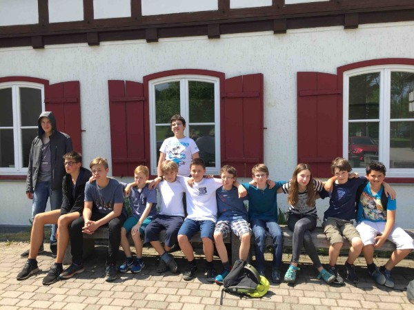 Unsere u12, u14, und u16 bei der LJMM 2017 in Goslar. 18.-21.Mai: Bundesfinale im Schulschach in Bad Homburg: Das THG-Team mit Alexander Kanzow, Pavel Mimkes, Antal Mimkes, Rumo Schilling und Arthur Liebetanz hat nach den Sternen gegriffen und landete mit dem 9.Platz unter den Top 10 in Deutschland. Nicht nur vom Vereinsvorstand gibt es Standing Ovations. Tabelle und Bericht siehe unter Schulschach. und unter deutsche-schachjugend.de. 13.-15.Mai: 4.Platz für unsere Jüngsten bei der LJMM der u10 in Rotenburg, und am gleichen Ort schafft unser Team nach einem 3,5:2,5-Erfolg gegen Papenburg und einer 2,5:3,5-Niederlage gegen Nordhorn-Blanke den Klassenerhalt in der Jugendliga Niedersachsen. Siehe unter Tuniere außerhalb und unter Unsere Mannschaften.
v.l.n.r. Marius Liestmann, Simon Zimmermann, David Tulchynsky, Moritz Blomer, und Mark Tulchynsky. 28.April: Unsere Vereinsmeisterschaft (Ropte-Cup), unsere JHV 2017 und die Göttinger Schulschacheinzelmeisterschaften sind terminiert. Siehe unter Nächste Termine. 08.-14.April: Die LEM der Jugendlichen auf Norderney ist zuende gegangen. Der KSV Rochade hat mit 8 Teilnehmern mitgespielt, und es war sehr erfreulich, dass, obwohl viele in der letzten Runde großes Auslosungspech hatten, alle Rochadespieler in den Jugendturnieren über den Setzlistenplatzierungen gelandet sind. Tabellen, Fotos und Berichte sie unter nsj-online.de und unter Turniere außerhalb.
v.l.n.r.: Pavel, Fynn, Amelie, Thomas, Rita, Antal, Volker und Marius auf Norderney LJEM 2017. 04.April: Der KSV Rochade Göttingen freut sich über zwei neue Mitglieder. Herzlich willkommen: Carlo dos Santos Schwaab und Thomas Fricke-Begemann (Papa von Pavel und Antal). Siehe unter Mitglieder. 02.April: Mit einem 3:3 gegen den Stader SV holt der KSV Rochade einen ganz wichtigen Punkt im Abstiegskampf in der Jugendliga Niedersachsen. Siehe unter Unsere Mannschaften. 26.März: Die BJMMs sind zu Ende gegangen und auch unsere U14 hat sich souverän als Erster für die LJMM qualifiziert: Leistungsträger in diesem Jahr waren Rita Nizamova mit 6 aus 6, und Maximilian Neumann mit 5 aus 6. Tabellen und Bericht siehe unter Turniere außerhalb. 15.März: Schulschachlandesfinale in Bemerode: Das HG mit Luca Uhlendorff, Arved Mindermann, Rita Nizamova und Philip Herzig wird 4.in der WK III und das THG mit Alexander Kanzow, Pavel Mimkes, Antal Mimkes, Arthur Liebetanz und Rumo Schilling wird Landesmeister in der WK IV. Siehe unter Schulschach. 12.März: BJMM in Peine: Der KSV Rochade Göttingen darf sich nun mit dem Bezirksjugendmannschaftsmeistertitel in der u10, der u12 und der u14 schmücken. Unsere u16 belegte den 2.Platz, damit ist der KSV Rochade wieder in allen Altersklassen für die LJMM qualifiziert. Tabellen und Berichte siehe unter Turniere außerhalb. 26.Februar: 1,5:4,5-Niederlage für unsere Jugendmannschaft beim Tabellenführer Post SV Uelzen in der Jugendliga. Siehe unter Unsere Mannschaften. Gleichzeitig gewinnt Bennet Zimmermann ein in Göttingen ausgetragenes Schnellschachturnier mit 5 aus 5 vor Philip Herzig und David Tulchynsky. 19.Februar: Der KSV Rochade Göttingen begrüßt ganz herzlich den nächsten Neuzugang: Aaron Gajendran von der Herman-Nohl-Grundschule. Siehe unter Mitglieder. Zudem wird Christian Hartogh Vereinsschnellschachmeister mit 4 aus 4, gefolgt von Rita Nizamova 2 P. und Luca Uhlendorff 1 P. Siehe unter VM-Schnellschach. 12.Februar: Mit zwei souveränen 4:0 - Erfolgen gegen Salzgitter und gegen Wolfenbüttel hat sich unsere u14 vorzeitig den Bezirksmannschaftsmeistertitel in der u14 gesichert. Siehe unter Turniere außerhalb. Am selben Tag gewann Antal Mimkes im BSW ein Schnellschachturnier mit 5 P. aus 5 Partien, gefolgt von Lukas Kracke 4 P. , und Matti Gargulla 3,5 P. vor weiteren 12 Teilnehmern. 05.Februar: Der KSV Rochade Göttingen heißt ganz herzlich Moritz Magier (IGS), Frederik Paufler (HG), und Carlos Späth (Albani-GS) als neue Mitglieder willkommen. Siehe unter Mitglieder. 29.Januar: Zeitgleich fand in Göttingen ein Vereinsschnellschachturnier statt, dass Arthur Liebetanz im direkten Vergleich mit 4 P. aus 5 Partien vor Rumo Schilling 4 P. gewinnen konnte. Dritter wurde Luan Lesser mit 3 P. Siehe unter VM-Schnellschach. 29.Januar: Mit zwei 3:1-Siegen gegen Wolfenbüttel und Gifhorn startete das ersatzgeschwächte u14-Team vom KSV Rochade in die BJMM-Saison 2017. Siehe unter Turniere außerhalb. 26.Januar: Leider konnte das HG-Team in der WK II und I dieses Jahr nicht antreten, dafür ließen sie es in der Besetzung Luca Uhlendorff, Arved Mindermann, Rita Nizamova und Luis Schneider in der WK III so richtig krachen und wurden mit 10:0 Mannschafts-und 19:1 Brettpunkten souveräner Bezirksmeister. Siehe unter Schulschach. 25.Januar: Im Schulschachbezirksfinale in Bad Harzburg wird in der WK IV das THG mit Alexander Kanzow, Pavel Mimkes, Antal Mimkes, Rumo Schilling und Artur Liebetanz souverän mit 14:0 Mannschaftspunkten und 27,5:0,5 Brettpunkten Bezirksmeister. Das MPG mit Matti Gargulla und Nils Matthießen, und das HG mit Bennet Zimmermann, Lukas Kracke und Nick Anosowitsch landen mit 9:5 Mannschaftspunkten auf den Plätzen 4 und 6 von 25 Teilnehmern. Tabelle siehe unter Schulschach. 22.Januar: Der Jugendbeirat hat getagt und Folgendes beschlossen....siehe unter Jugendbeirats-News. 12.Januar: Die Hainbund-GS aus Weende mit Marius Liestmann und David Tulchynsky qualifiziert sich vor der Albani-GS mit Tamino Völkel und Maja Antonina Ueker, und der Wilhem-Busch-GS aus Wolfenbüttel für das Bezirksfinale in Bad Harzburg. Siehe unter Schulschach. 05.-08.Januar 2017: LEM in Verden: Bennet Zimmermann 3,5 P. Platz 35 und Simon Zimmermann 2,5 P. Platz 54 waren im C-Open dabei. Alle Einzelheiten, Ergebnisse, Tabellen und Berichte Siehe unter nsv-online.de 26.-30.Dezember: Die DVMs sind beendet und unsere u14 wird in Düsseldorf 18. (Setzlistenplatz 19) und unsere u10 in Magdeburg mit viel Pech 53. Alle Tabellen, Partien und weitere Infos siehe unter deutsche-schachjugend.de und am 03.Januar gibts auch den Vereinsbericht siehe unter: Turniere außerhalb. Und unsere gefürchtete/geliebte TOP-und Flop-Liste des Jahres 2016 erscheint am 04. Januar unter dem Link Verschiedenes. 26.-30.Dezember: ES GEHT LOS. Heute fährt unsere u14 nach Düsseldorf zur DVM und morgen unsere u10 nach Magdeburg ebenfalls zur DVM. Berichte gibt es unter unserem Link Turniere außerhalb. und unter deutsche-schachjugend.de 16.-18.Dezember: Der nächste Rochadespieler knackt fast die 2000er-DWZ-Grenze. Christian Hartogh wird mit 4,5 P. aus 5 Partien hervorragender 2. von 84 Teilnehmern bei den Südharzmeisterschaften auf Schloss Mansfeld. Auch die weiteren Platzierungen können sich sehen lassen: Nelo Oshionwu mit 4 P. 7., Julius Rosin mit 3,5 P. 13., und Titelverteidiger Manuel Drehwald mit 2,5 P. 37. alle Infos siehe unter südharzmeisterschaft.de 18.Dezember: Alexander Kanzow gewinnt den Göttinger Weihnachtsdreikampf (bestehend aus Doko/Tandem und Werwölfe). 11.Dezember: Mit dem 3:3 gegen den SV Laatzen holte der KSV Rochade Göttingen einen Punkt im Abstiegskampf in der Jugendliga Niedersachsen. Siehe unter Unsere Mannschaften. Und Christian Hartogh verteidigt seinen Titel als Vereinsschnellschachmeister mit 6,5 P. aus 7 Partien vor Nelo Oshionwu 5 P. und Luca Uhlendorff 4,5 P. Siehe unter VM-Schnellschach. 07.Dezember: Der KSV Rochade Göttingen begrüßt unseren Neuzugang Jakob Klenke von der Herman-Nohl-Grundschule. Herzlich willkommen. Siehe unter Mitglieder. 26.November: Die Jugendserie machte halt in Herzberg: Pavel Mimkes gewinnt mit 7 aus 7 souverän die u14, vor Rita Nizamova. In der u12 gewinnt Antal Mimkes ungeschlagen mit 6 P. die u12, Bennet Zimmermann wird in dieser Altersklasse dritter. Simon Zimmermann wird 4. in der u10, und Moritz Blomer 5. in der U8. Alle Tabellen siehe unter jugendserie.de. 12.-13.November: Lukas Kracke hervorragender 3. in der u12 und Tristan Fahrendorff 11. in der u10 beim NSJ-Schnellschachpokal in Rotenburg. Tabellen siehe unter nsj-online.de. 06.November: Die Sensation war zum Greifen nahe, aber dennoch unterlag der KSV Rochade in der Jugendliga in Hellern mit 3,5:2,5. Siehe unter Unsere Mannschaften. 06.November: Bennet Zimmermann gewinnt mit 8 aus 9 souverän das Schnellschachturnier im BSW vor Matti Gagulla und Florian Schinke. Siehe unter VM-Schnellschach. 01.November: Der KSV Rochade begrüßt unseren nächsten Neuzugang: Herzlichen willkommen David Tulchynsky (9Jahre) von der Hainbund-GS in Weende. Siehe unter Mitglieder. 29.Oktober: Beim Jugendschnellschachturnier in Breitenworbis gibt es für den KSV Rochade vier Podestplätze: Pavel Mimkes gewinnt mit 6,5 P. aus 7 Runden die u12, Antal Mimkes wird mit 6 P. zweiter in der u10, Moritz Blomer zweiter in der u7 mit 4,5 P. und Rita Nizamova wird mit 4,5 P. dritte in der u14. Impressionen und Tabellen sie unter www.svbreitenwornis.de 23.Oktober: Nach dem kampflosen 6:0-Sieg gegen den SV Lingen in der Jugendliga, wird Christian Hartogh mit 10 P. aus 11 Partien neuer und alter Vereinsblitzmeister vor den punktgleichen Luca Uhlendorff und Pavel Mimkes. Siehe unter VM-Blitz. 14.-16.Oktober: BJEM in Hiildesheim: 17 Rochadekinder bei unserer letzten Bezirkseinzelmeisterschaft im Bezirk Südniedersachsen und Alexander Kanzow (u14) 1.Platz, Pavel Mimkes (u14) 2.Platz, und Antal Mimkes (u12) 3.Platz haben sich für die Landeseinzelmeisterschaften qualifiziert. Tabellen und Berichte siehe unter Turniere außerhalb. 13.Oktober: Die neue Satzung unseres Vereins ist da und kann siehe unter Impressum/Statut nun nachgelesen werden. 02.Oktober: Das Schnellschachturnier am Sonntag gewinnt Rita Nizamova mit 4 P. aus 5 Partien vor den punktgleichen Bennet Zimmermann und Alexander Kanzow. Siehe unter VM-Schnellschach. 25.September: Der KSV Rochade Göttinen heißt seine nächsten Neuzugänge herzlich willkommen: Rumo Schilling (9 Jahre) und Moritz Blomer (7 Jahre) siehe unter Mitglieder. Zudem hat unsere Jahreshauptversammlung einstimmig Holger Buck zum 3.Vorsitzenden und Kassenwart gewählt und zum 01.01.2017 eine sehr wichtige Satzungsänderung beschlossen. Siehe unter Vorstand. 21.September: Der KSV Rochade Göttingen begrüßt den NSV-Problemschachreferenten, ehemaligen Bezirksvorsitzenden und Vereinsvorsitzenden des SC Bad Salzdetfurth Holger Buck bei uns. Herzlich Willkommen. Siehe unter Mitglieder. 11.September: Düsseldorf wir kommen ! Unsere u14 mit Alexander Kanzow, Luca Uhlendorff, Pavel Mimkes und Arved Mindermann hat trotz der 0,5:3,5 Niederlage gegen den HSK die Qualifikation zur DVM u14 in Düsseldorf gepackt !! Alle Infos siehe unter dvm-schach.de und unter Turniere außerhalb.
Unser u14-Team bei der NDVM u14 in Magdeburg 10.September: Unsere U14 greift in Magdeburg bei der NDVM nach den Sternen und ist nach drei Siegen in Serie momentan 4., was für die Qualli zur Deutschen ausreichen würde. Morgen geht es gegen den großen Favoriten Hamburger SK. Alle Partien gibt es live ab 8.30 Uhr unter dvm-schach.de 28.August: Christian Hartogh und Julius Rosin belegen mit 6 P. aus 9 Partien beim Rintelner Open die starken Plätze 16 und 17 bei 99 Teilnehmern. Dabei gelang Christian ein Sieg gegen einen IM. Alle Details siehe unter skrinteln.de 14.August: Ropte-Cup des KSV Rochade: Julius Rosin verteidigt ungeschlagen seinen Titel mit 6 P. aus 7 Partien vor Christian Hartogh und Nelo Oshionwu mit jeweils 5,5 P. Die weiteren Vereinsmeister: U18: Arthur Semmelmaier 5 P. (Platz 4), U16: Luca Uhlendorff 5 P. (Platz 5), U14: Alexander Kanzow 4,5 P. (Platz 6), U12: Luan Lesser 4 P. (Platz 10), U10: David Tulchynsky 3 P. (Platz 19), und bestes Mädchen wurde Rita Nizamova mit 4 P. und Platz 9. Alle Infos siehe unter Vereinsmeisterschaft.
Ropte-Cup 2016 13.-31.Juli: Julius Rosin, Christian Hartogh und Arthur Semmelmaier haben beim Cech-Open in Pardubice mitgespielt (siehe unter www.czechopen.net/en/) und Alexander Kanzow, Luca Uhlendorff, Tobias Schuster und HansGeorg Schuster waren bei den Vellmarer Schachtagen dabei (alle infos: www.vellmarer-schachtage.com). 20.Juni: Die JHV des KSV Rochade Göttingen hat getagt und einen neuen Vorstand gewählt siehe unter Vorstand. Es wurden wichtige Änderungen im Ablauf der Vereinsschnellschachmeisterschaften und des Ropte-Cups beschlossen, und einstimmig wurde der Austritt aus dem Schachbezirk III beschlossen. Dazu ein Statement des 1.Vorsitzenden unter Verschiedenes. 19.Juni: In der zusammengelegten C+D-Gruppe siegt in der C-Gruppe Alexander Kanzow mit 5 P. aus 6 Partien vor Kangyhun Lee 2,5 P. In der D-Gruppe siegt Luca Uhlendorff 6 P. vor Tristan Fahrendorff 4 P. und Tom Lutze 2,5 P. Siehe unter VM-Schnellschach. 15.Juni: VII. Göttinger Schulschacheinzelmeisterschaften: Die Sieger in diesem Jahr: WK Grundschulen: Antal Mimkes (Montessori-Schule), WK IV: Alexander Kanzow (THG), WK III: Philip Herzig (HG), WK I: Cord Lampe (MPG), und WKM: Rita Nizamova (HG). Tabellen und Berichte siehe unter Schulschach. 11.-12.Juni: LJMM der u10 in Rotenburg: Der KSV Rochade Göttingen wird in der Besetzung Antal Mimkes, Luan Lesser, Marius Liestmann und Tristan Fahrendorff hinter dem Stader SV und dem Hagener SV 3. Bericht und Tabelle siehe unter Turniere außerhalb. 11.Juni: Der KSV Rochade schafft mit einem 4,5:1,5 Sieg gegen Aurich am vorletzten Spieltag und einem kampflosen 6:0 gegen den Stader SV II am letzten Spieltag doch noch den Klassenerhalt in der Jugendliga Niedersachsen. Siehe unter Unsere Mannschaften. 06.Juni: Der Ropte-Cup wird am So. den 14.August ausgetragen.Siehe unter Nächste Termine. 02.Juni: Der Rechenschaftsbericht des 2.Vorsitzenden des Schachbezirkes III Manfred Tietze für die JHV ist nun für alle lesbar. Siehe unter Lustiges. 29.Mai: Landesjugendmannschaftsmeisterschaft der u14w in Lehrte. Der KSV Rochade Göttingen wird in der Mannschaftswertung 3. hinter Nordhorn-Blanke und Papenburg. Siegerinnen der Einzelwertung sind: Darja Rizo-Wellmann(KSV Rochade) 3. Inken Meijerink, (Nordhorn-Blanke) 2., und Rita Nizamova (KSV Rochade) mit 6,5 P. und damit 1,5 P. Vorsprung 1. Bilder und Infos sie unter nsj-online.de 26.Mai: Das Turnier stand auf der Kippe, doch jetzt ist endlich die Ausschreibung des Ropte-Cups da. Es ist Sa. der 04.Juni. Die Ausschreibung gibt es unter Nächste Termine. 22.Mai: Christian Hartogh gewinnt mit 6 P. aus 6 Partien souverän die zusammengelegte A+B-Gruppe der Vereinsschnellschachmeisterschaften, gefolgt von Pavel Mimkes 4 P. und Matti Gargulla 3 P.. In der B-Gruppe siegte Nick Anosowitsch mit 4 P. vor Antal Mimkes und Florian Schinke jeweils 2 P. Siehe unter VM-Schnellschach. 15.-21.Mai: Selbst an den hinteren Brettern saßen bei der DJEM in der u12 noch 1600er-Spieler, so daß Alexander Kanzow mit seinem 50.Platz sehr zufrieden sein kann. Alle Infos siehe unter deutsche-schachjugend.de. 14.Mai: Alexander Kanzow spielt ab morgen in der U12 der deutschen Jugendeinzelmeisterschaft in Willingen. An alle: Daumen drücken ! Tägliche neue Infos siehe unter deutsche-schachjugend.de 04.-08.Mai: LJMM der u12 bis u16 in Aurich: Der KSV Rochade ist in allen Altersklassen vertreten, dabei gelingt der u14 mit Arved Mindermann, Luca Uhlendorff, Rita Nizamova und Tobias Schuster die Qualifikation für die nordeutschen Meisterschaften. Alle Infos sie unter Turniere außerhalb und unter nsj-online.de und unter scaurich.de.
LJMM in Aurich mit v.l.n.r. Khang, Bennet, Linus, Tobi, Alex, Arved, Fynn, Lukas, Matti, Luca, Tom, Amelie, Rita und Gina. (Es fehlt Max). 03.Mai: Das nächste Mitglied bereichert den KSV Rochade Göttingen: Wir heißen ganz herzlich willkommen: Arthur Liebetanz von der Albani-Grundschule. Siehe unter Mitglieder. 24.April: In der C-Gruppe siegt Fynn Karstens mit 2 P. vor Darja Rizo-Wellmann 1 P. und Norbert Terpe. Alle drei stegen in die B-Gruppe auf. In der D-Gruppe gewann Bennet Zimmermann mit 6 aus 7, vor Philip Herzig, Kanghyun Lee, Marius Liestmann, und Simon Zimmermann 5 P., die damit alle zusammen in die C-Gruppe aufsteigen. Siehe unter VM-Schnellschach. 21.April: Noch mehr Schachfreunde unterstützen die Jugendarbeit in Göttingen. Der KSV Rochade Göttingen begrüßt den Nordhorner Spitzenspieler Fabian Stotyn bei uns. Herzlich willkommen. Siehe unter Mitglieder. 15-17.April: Julius Rosin gewinnt mit 5 aus 5 souverän die C-Gruppe beim Ramada-Cup in Kassel. Alle Infos siehe unter ramada-cup.de 17.April: Abstiegskampf in der Jugendliga Niedersachsen, doch der KSV Rochade holt einen ganz wichtigen 4:2-Sieg gegen Nordhorn-Blanke. Siehe unter Unsere Mannschaften. 13.April: Von der Albani-Grundschule begrüßen wir ganz herzlich beim KSV Rochade Göttingen Maja Antonina Uecker. Herzlich willkommen. Siehe unter Mitglieder. 10.April: Zum Abschluß dieser Saison siegte unsere II. in Oker mit 4:2 und belegte damit einen sehr guten Mittelfeldplatz in der Kreisliga, und unsere III. unterlag beim Aufsteiger Langelsheim in der Kreisklasse mit 0:4. Siehe unter Unsere Mannschaften. 02.April: Kanghyun Lee, Jahrgang 2003 vom THG in Göttingen heißt das neuste Talent des KSV Rochade Göttingen. Herzlich Willkommen. Siehe unter Mitglieder. 19.-25.März: Julius Rosin wird mit 6 P. aus 9 Partien bei den offenen Bremer Meisterschaften 10. von 78 Teilnehmern. Infos siehe unter den Nachrichten von schachfreundebremerosten.de 19.-25.März: LJEM in Rotenburg und der KSV Rochade Göttingen war in allen Altersklassen mit insgesamt 17 Teilnehmern dabei. Dabei konnten sich auch die Platzierungen sehen lassen. Berichte, Fotos, Infos u.s.w. siehe unter nsj-online.de und unter Turniere außerhalb.
Der KSV Rochade bei der LEM 2016 in Rotenburg: v.l.n.r. Darja Rizo-Wellmann u14w, Amelie von Hugo u12w, Rita Nizamova u14, Gina Lambert u14w, Artur Balliel u16, Luan Lesser u10, Bennet Zimmermann u12, Arthur Semmelmaier u18, Tristan Fahrendorff u10, Alexander Kanzow u12, Christian Hartogh u18, Pavel Mimkes u12, Simon Zimmermann u10, Marcel Kuhlemeyer u16, Antal Mimkes u10, Luca Uhlendorff u14, Arved Mindermann u14 und Trainer Manuel Drehwald u20 16.März: Schulschachlandesfinale in Hannover: Zwei 4.Plätze für das HG in der WK II und das THG in der WK III, und ein 5.Platz von 8 Teilnehmern für das HG in der WK IV. Alle Infos siehe unter Schulschach. 13.März: 5:1-Sieg für unsere II. gegen Turm Vienenburg, damit ist der Klassenerhalt in der Kreisliga gesichert. Die III. spielte 2:2 gegen die III. aus Goslar. Siehe unter Unsere Mannschaften. 06.März: Die nächste Packung in der dieses Jahr enorm starken Jugendliga Niedersachsen. 0,5:5,5-Niederlage in Hellern. Allerdings fiel dieser Sieg zu hoch aus. Infos siehe unter Unsere Mannschaften. 26.Februar-05.März: Es ist vollbracht ! Julius Rosin knackt mit 5 P. aus 9 Partien und Platz 43 von 170 Teilnehmern als erster Rochadespieler beim Bad Wörishofen-Open die "magische" 2000 DWZ-Grenze. Alle Informationen siehe unter www.chessorg.de/bad_woerishofen.php. 03.März: Der KSV Rochade begrüßt Milan Nizamova (Bruder von Rita) ganz herzlich bei uns im Schachverein. Siehe unter Mitglieder. 29.Februar: Das THG besiegt das MPG mit 4:0 und wird erwartungsgemäß Bezirksmeister in der WK I im Schulschach. Damit holen die Rochadejugendlichen in dieser Schulschachsaison auf Bezirksebene 50:0 Mannschafts-und 91,5:6,5 Brettpunkte !! Damit ist das THG in der WK I und III, und das HG in der WK II und IV für das Landesfinale qualifiziert. Infos siehe unter Schulschach. 28.Februar: Manual Drehwald verteidigt in der A-Gruppe ungeschlagen seinen Titel als Vereinsmeister im Schnellschach (5,5 P.aus 6), 2.wird Arthur Semmelmaier 5 P. gefolgt von Christian Hartogh 4,5 P. In der zeitgleich ausgetragenen B-Gruppe gewinnt der enorm verbesserte Matti Gargulla mit souveränen 5 aus 5 und steigt damit zusammen mit Lukas Kracke 3 P. in die A-Gruppe auf. Für beide ist es die Premiere in der A-Gruppe. Um den 3.Platz gab es zwischen Luan Lesser und Florian Schinke einen Blitzstichkampf, den Florian für sich entscheiden konnte. Alle Infos siehe unter VM-Schnellschach. 27.Februar: Mit 7 Teilnehmern ist der KSV Rochade Göttingen am Leinfelde-Worbis-Open dabei. Die Platzierungen: Thomas Post 27.,Rita Nizamova 40. (Rating-Preis), Fynn Karstens 42., Tobias Schuster 51., HansGeorg 54., Lukas Kracke 55., und Florian Schinke 62. Bericht und Tabelle sie unter schachclub-leinefelde.de 23.Februar: Der KSV Rochade Göttingen heißt unsere nächsten Neuzugänge ganz herzlich willkommen: Der 7 jährige Arvid Jahreis, und der 9 jährige Tamino Völkel. Siehe unter Mitglieder. 21.Februar: Hohe Siege (und Niederlagen) scheinen derzeit in Mode zu sein: Unsere II. gewinnt mit 5:1 bei der II. von Bad Pyrmont, und unsere III. unterliegt Bad Lauterberg II. mit 1:3. Siehe unter Unsere Mannschaften. 19.Februar: Das THG-Team setzt sich im Schuschachbezirksfinale der WK III souverän durch und schafft mit 6:0 Mannschafts- und 10,5:1,5 Brettpunkten die Qualli fürs Landesfinale. Beste Einzelspieler waren: Mathis Diederichen Brett 1 (MPG), Alexander Kanzow, Brett 20 (THG), und Tobias Schuster (THG), Brett 3, die alle 3 Partien gewinnen konnten. Tabelle siehe unter Schulschach. 14.Februar: 0,5:5,5-Packung für unser Jugendteam in der Jugendliga Niederrsachsen gegen den SK Lehrte I. Bericht und Tabelle siehe unter Unsere Mannschaften. 05-09.Februar: Julius Rosin wird mit 4,5 P. aus 9 Partien beim Pfalz-Open in Neustadt 95. von 206 Teilnehmern. Alle Einzelheiten siehe unter www.pfalzopen.de. 07.Februar: Unsere II. erkämpft sich beim ESV-RW III ein ganz wichtiges 3:3 Unentschieden, und unsere III. unterliegt Parensen II mit 1:3. Siehe unter Unsere Mannschaften. 03.Februar: Auch in der WK IV hat das Hainberggymnasium in der Besetzung: Arved Mindermann, Rita Nizamova, Lukas Kracke und Nick Anosowitsch mit 14:0 Mannschafts-und 27:1 Brettpunkten (!) das Bezirksfinale in Bad Harzburg gewonnen und spielt nun im Landesfinale in Hannover. Und auch Tim Bräuer hat sich mit dem FKG für das Landesfinale qualifiziert. Tabelle siehe unter Schulschach. 02.Februar: Das Hainberggymnasium in der Besetzung: Luca Uhlendorff, Fynn Karstens, Marcel Kuhlemeyer und Philip Herzig gewinnt souverän mit 12:0 Mannschafts- und 20:4 Brettpunkten das Bezirksfinale im Schulschach in der WK II und qualifiziert sich damit für das Landesfinale. Siehe unter Schulschach. 17.Januar: Unsere II. unterliegt zu Hause Alfeld mit 2:4, aber unsere III. gewinnt in Hildesheim mit 3:1. Siehe unter Unsere Mannschaften. 14.Januar: Das THG (mit Pavel Mimkes, Alexander Kanzow, Tobias Schuster und Linus Ros) gewinnt mit 8:0 Mannschafts- und 16:0 Brettpunkten souverän die WK III und qualifiziert sich damit für das Bezirksfinale. Ebenfalls fürs Bezirksfinale qualifiziert ist das MPG mit Mathis Diederichsen am Spitzenbrett. Dritter wird das HG mit Tom Lutze, Maximilian Neumann, Luis Schneider und Gina Lambert. Infos siehe unter Schulschach. 13.Januar: Vorrunde im Schulschach der Grundschulen: Albani II und Albani I schrammen mit einem 3. bzw 4. Platz knapp am Bezirksfinale vorbei. In der II.Albani-Mannschaft konnten sich vor allem Tamino Völkel und Arthur Liebetanz auszeichnen. Beide gewannen alle 5 Partien. Bericht siehe unter Schulschach. 03.-06.Januar: LEM in Verden: Julius Rosin wird mit 3,5 P. aus 7 Partien im A-Open 36. von 83 Teilnehmern, und Darja Rizo-Wellmann wird mit 4 aus 7, im C-Open 25. von 71 Teinlnehmern, wobei sie damit ihre DWZ um fast 100 Punkte verbessert hat. Alle Infos siehe unter www.lem-online.de 01.Januar 2016: Die Top und Flop-Liste ist da. Siehe unter Verschiedenes... 27.-31.Dezember: Pavel Mimkes und Julius Rosin waren beim beim Schachtürken-Cup in Paderborn. Beide holten 4 P. aus 7 Partien, wobei Pavel in der B-Gruppe 27. von 85 Teilnehmern und Julius in der A-Gruppe 35. von 105 Teilnehmern wurde. Alle Infos siehe unter www.schachtuerken-cup.de/open-aktuell/ 27.-30.Dezember: Deutsche Vereinsmeisterschaft der u10 in Magdeburg und der KSV Rochade Göttingen hat mit 3 Teams teilgenommen: Die I. wurde 38. , die II. 50., und die III. 59. Alle Infos sie unter www.deutsche-schachjugend.de und unter Turniere außerhalb.
Blick in den Turniersaal in Magdeburg bei der DVM u10 18.-20.Dezember: Manuel Drehwald gewinnt mit 4 aus 5 sensationell die offene Südharzer Meisterschaft. Christian Hartogh und Julius Rosin landen mit jeweils 3,5 P. auf den Plätzen 13 und 14 von 84 Teilnehmern. Infos siehe unter Turniere außerhalb. 20.Dezember: Darja Rizo-Wellman hat souverän mit 7 aus 7 vor Bezirksmeister Fynn Karstens 6 P. und Mathis Diederichsen 5 P. die D-Gruppe unserer Vereinsschnellschachmeisterschaften gewonnen und ihre Vereins-DWZ auf über 1200 gesteigert. Neben diesen 3 steigen auch noch Norbert Terpe 3 P., Linus Ros (in seinem ersten Turnier !) und Tom Lutze 2,5 P. in die C-Gruppe auf. Alle Infos siehe unter VM-Schnellschach. 13.Dezember: Die II. unterliegt Holzminden II deutlich mit 1:5, und unsere III. unterliegt Goslar II sehr unglücklich mit 1:3. Siehe unter Unsere Mannschaften. 12.Dezember: Wichtige Mitteilung ! Der KSV Rochade Göttingen zieht mit sofortiger Wirkung seine I.Mannschaft vom Spielbetrieb in der Bezirksliga zurück. Der Rückzug betrifft NICHT die II. und III.Mannschaft. Siehe unter Unsere Mannschaften. 06.Dezember: Nach dem Debakel vom letzten Sonntag, scheint nun wieder die Sonne. Der KSV Rochade Göttingen hat sich in der U14 (Arved Mindermann, Luca Uhlendorff und Mathis Diederichsen) und in der U12 (Pavel Mimkes, Alexander Kanzow, Bennet Zimmermann und Tristan Fahrendorff) den Bezirksjugendmannschaftstitel gesichert. Damit gehen sämtliche Qualifikationsplätze sowohl im Einzel als auch im Mannschaftswettbewerb in allen Altersklassen des Schachbezirkes Südniedersachen an den KSV Rochade Göttingen. Infos und Tabellen siehe unter Turniere außerhalb. 29.November: 0:6-Debakel für unsere Jugendmannschaft in der Jugendliga Niedersachsen beim Aufsteiger in Uelzen. Bericht und Tabellen sie unter Unsere Mannschaften. 23.November: A,B, und C-Gruppe im BSW: Die A-Gruppe gewinnt Christian Hartogh mit 5,5 P. aus 6 Partien vor Titelverteidiger Manuel Drehwald 3,5 P. und dem punktgleichen Arthur Semmelmaier. Die B-Gruppe gewinnt Rita Nizamova mit 5 P. aus 5 Partien, vor Marcel Kuhlemeyer 3 P. und dem punktgleichen Antal Mimkes. Die C-Gruppe gewinnt Luan Lesser mit 3 P. aus 3 Partien, vor Florian Schinke 2 P. und Luis Schneider 1 P. Tabellen siehe unter VM-Schnellschach. 15.November: Die Begegnung zwischen dem KSV Rochade und dem Hildesheimer SV endete 9:9. Unsere I. spielte gegen den Hildesheimer SV II in der Bezirksliga 4:4, unsere II. spielte in der Kreisliga in Hildesheim 3:3, und unsere III. spielte gegen den Hildesheimer SV V in der Kreisklasse 2:2. Bericht und Tabellen siehe unter Unsere Mannschaften. 08.November: Knapper 3,5:2,5-Auftaktsieg für unsere Jugendmannschaft in der Jugendliga Niedersachen. Bericht siehe unter Unsere Mannschaften. 23.-25.Oktober: BEM der Herren in Bad Salzdetfurth. Neuer Bezirksmeister ist Felix-Hagen Jacobi vom Hamelner SV. Julius Rosin wird mit 3 P. 5. von 18 Teilnehmern. Manuel Drehwald mit 2 P. 13. Bericht und Tabelle siehe unter Turniere außerhalb. 19.-22.Oktober: BJEM des Bezirkes III in Göttingen: Sämtliche Qualiplätze zur LJEM und fast alle Bezirksmeistertitel: Christian Hartogh u18, Fynn Karstens u16, Arved Mindermann u14, Rita Nizamova u14w, Pavel Mimkes u12, Amelie von Hugo u12w gehen an den KSV Rochade Göttingen. Nur in der u10 gewann Bert Sieber vom ESV-RW. Bericht siehe unter Turniere außerhalb. 11.Oktober: 5:3 Sieg für unsere I in Gronau, aber unsere II. und unsere III. unterliegen 2:4 bzw. 1:3 in Bad Harzburg gegen die dortige II. und III. Mannschaft. Siehe unter Unsere Mannschaften. 7.Oktober: Der KSV Rochade Göttingen begrüßt unseren Neuzugang Linus Ros vom THG. Herzlich Willkommen. Siehe unter Mitglieder. 20.September: Der 1.Spieltag in den Bezirksligen hat stattgefunden. Unsere I. unterliegt der I. von Osterode-Südharz mit 2:6, unsere II. schlägt Gronau II mit 5:1, und unsere III. unterliegt Osterode- Süharz II mit 1:3. Siehe unter Unsere Mannschaften. 18.September: Der Protest des KSV Rochade Göttingen gegen die Durchführung der LJMM u14w ist von der Mädchenreferentin des NSJ mit folgender Begründung abgelehnt worden: Lieber Thomas, wir haben Dein Protestschreiben vom 07.09. erhalten. Liebe Grüße, 09.-13.September: Das " Wunder von Magdeburg " blieb leider aus. Dennoch hat sich unsere U12 bei der norddeutschen Vereinsmeisterschaft wacker geschlagen und durfte sich bis zuletzt Hoffnungen auf eine Qualli zur deutschen Vereinsmeisterschaft machen und wurde am Ende mit 7:7 Punkten 9. Alle Infos, Tabellen, Impressionen siehe unter dvm-schach.de und ein Bericht siehe unter Turniere außerhalb.
v.l.n.r. Rita Nizamova, Pavel Mimkes, Alexander Kanzow und Arved Mindermann in Magdeburg 12.September: Weil die LJMM der u14w zeitgleich mit der NDVM u12/U14 gelegt worden ist, konnte der KSV Rochade Göttingen nicht teilnehmen. Bei nur 16 Teilnehmerinnen wurde der SK Nordhorn-Blanke Landesmeister. Der KSV Rochade Göttingen hat nach zahlreichen vergeblichen Versuchen die Referentin für Mädchenschach des NSJ zu erreichen, am 07.September offiziell Protest gegen die Wertung des Turnieres eingelegt. Siehe unter nsj-online.de 07.September: Der neue Bezirksjugendwart des Bezirkes III ist mit sofortiger Wirkung von seinem Amt zurückgetreten. Siehe unter Verschiedenes. 20.Juli: Die Sieger der VI. Göttinger Schulschachstadtmeisterschaften heißen: WK I: Christian Hartogh (THG), WK II: Arthur Semmelmaier (THG), WK III: Tobias Schuster (THG), WK IV: Pavel Mimkes (Montessori) und WK GS: Til Taschenberger (Waldorf-Schule). Bericht, Tabellen und Infos siehe unter Schulschach. 19.Juli: Philip Herzig gewinnt mit einem Direktsiegvergleich 5.5 P. aus 7 Runden gegen den Zweitplatzierten Luan Lesser die D-Gruppe. Auch der Dritte: Luis Schneider 5 P. und der Vierte: Thorben Diederichsen 4.5 P. steigen in die C-Gruppe auf. Siehe unter VM-Schnellschach. 17.Juli: Der KSV Rochade Göttingen heißt Tristan Fahrendorff von der Montessori-Schule ganz herzlich Willkommen. Siehe unter Mitglieder. 12.Juli: Die doppelrundig ausgetragene C-Gruppe gewinnt Luca Uhlendorff mit 5 P. aus 6 Partien, vor Matti Gargulla 3,5 P. Beide haben damit den Aufstieg in die B-Gruppe gepackt. Dritter wird Tim Bräuer mit 2 P. Siehe unter VM-Schnellschach. 05.Juli: Ein neuer Vereinsschnellschachmeister erscheint am Horizont. Manuel Drehwald gewinnt zum ersten Male die A-Gruppe (6 aus 7) vor Nelo Oshionwu 6 P. und Titelverteidiger Christan Hartogh 5 P. . Die zeitgleich stattfindene B-Gruppe gewinnt Arved Mindermann mit 4 aus 5 vor Mitaufsteiger Alexander Kanzow 3,5 P. und Landesmeisterin Rita Nizamova 3 P. Siehe unter VM-Schnellschach. 27.-28.Juni: LJMM der U10 in Rotenburg: Unsere I. mit Antal Mimkes, Lukas Kracke, Matti Gargulla und Benett Zimmermann holt sich den Landevizemeistertitel. Die II. mit Nick Anosowitsch, Simon Zimmermann, Marian Juric und Til Tschenberger wird 8. und unsere III. die nur mit 2 Spielern antreten konnte (Marius Liestmann und Luan Lesser) holte immerhin einen Ehrenpunkt. Alle Infos siehe unter nsj-online.de oder unter Turniere außerhalb.
LJMM der U10 in Rotenburg 2015 21.Mai: Julius Rosin gewinnt zum zweiten Male nach 2013 den Ropte-Cup, vor U18-Sieger Christian Hartogh und der besten weiblichen Teilnehmerin, der deutschen U10-Meisterin Antonia Ziegenfuß vom SV Breitenworbis. Die weiteren Sieger: U16: Arthur Semmelmaier, U14: Tobias Schuster, U12: Arved Mindermann, U10: Matti Gargulla, und U8: Simon Zimmermann. Alle Infos siehe unter Vereinsmeisterschaft.
Ropte-Cup 2015: Die kommende Schach-Generation 20.Mai: Der KSV Rochade begrüßt den nächsten Neuzugang: Ein herzliches Willkommen an Philip Herzig vom Hainberggymnasium. Siehe unter Mitglieder. 14.-17.Mai: Landesvizemeistertitel für den KSV Rochade in der U12 und damit Qualifikation für die Norddeutsche, 6.Platz in der U14, und 8.Platz in der U16 war die Ausbeute bei der LJMM in Lingen. Alle Infos und Tabellen siehe unter nsj-online.de und unter Turniere außerhalb.
v.l.n.r. Florian, Marcel, Mathis, Luca, (U14), Arved, Alexander, Pavel, Darja, (U12), Artur, Arthur, Robert, und Fynn (U16) 2015 in Lingen 14.Mai: Der KSV Rochade Göttingen heißt ganz herzlich Karsten Bertram (Jugentrainer des Hagener SV) als Mitglied bei uns willkommen. Siehe unter Mitglieder. 03.Mai: Bei der JHV wurden Christian Hartogh und Manuel Drehwald in ihren Ämtern bestätigt und Arthur Semmelmaier als neuer Jugendturnierleiter gewählt. Im anschließenden Blitzturnier konnte Christian Hartogh mit 10 aus 10 souverän seinen Titel als Vereinsblitzmeister vor Arthur Semmelmaier verteidigen. Siehe unter Vorstand und unter VM-Blitz. 26.April: Mit einem knappen 3,5:2,5-Erfolg gegen den SK Nordhorn-Blanke und dem 4.Platz in der Abschlußtabelle, ging die Jugendliga Niedersachsen für das Jugendteam des KSV Rochade zu Ende. Siehe unter Unsere Mannschaften. 19.April: Souveräner Sieg von Morris Schütte, der sich in der letzten Runde sogar eine kampflose Niederlage leisten konnte, in der zusammengelegten C-und D-Gruppe mit 6 P. aus 7 Partien. Der 2.Platz ging an Arved Mindermann 5,5 P. Dritter wurde Luca Uhlendorff mit 5 P. Damit steigen Arved Mindermann, Lukas Kracke (3,5 P.) und Bennet Zimmermann (3 P.), in die B-Gruppe, und Morris Schütte, Luca Uhlendorff und Simon Zimmermann (5 P.) in die C-Gruppe auf. Siehe unter VM-Schnellschach. 18.April: Alle Mitglieder des KSV Rochade und die Erziehungsberechtigten sind zur Jahreshauptversammlung am So. den 03.Mai im BSW um 12.00 Uhr eingeladen. Anschließend (geplant/frühestens 14.00 Uhr) findet die Vereinsblitzmeisterschaft statt. Siehe unter Nächste Termine und siehe unter Verschiedenes. 12.April: 3:5 Niederlage für unsere I.Mannschaft zum Abschluß der Bezirksliga und damit Platz 3 im Endklassement. Siehe unter Unsere Mannschaften. 28.März-03.April: Landesjugendeinzelmeisterschaften in Rotenburg: Die erfolgreichsten Rochade-Spieler dieses Jahr waren: Rita Nizamova 1. in der u12w, Pavel Mimkes 5. in der u12, Manuel Drehwald 6. in der u18, Antal Mimkes 13. in der u10, und Arthur Semmelmaier als 8. und bester Jugendlicher im Open. Zudem platzierten sich: Christian Hartogh 8. in der u18, Darja Rizo-Wellmann 23. in der u12, Bennet Zimmermann 20., Nick Anosowitsch 24., Amelie von Hugo 27., Simon Zimmermann 30. in der u10, und Gina Lambert 3. in der u12w. Alle Infos siehe unter Turniere außerhalb und unter lem2015.de. 22.März: Der KSV Rochade hat mit einem 5:1-Sieg gegen Lehrte II den Klassenerhalt in der Jugendliga Niedersachsen perfekt gemacht. Siehe unter Unsere Mannschaften. 18.März: In der WK I holt das Hainberggymnasium den Landesmeistertitel im Schulschach. In der WK II wird das Hainberggymnasium 6. Das THG schied im Bezirksfinale in der WK II als Bezirksvizemeister aus. Siehe unter Schulschach. 15.März: 5,5:2,5-Sieg am vorletzten Spieltag für unsere Erste in Bad Salzdetfurth. Siehe unter Unsere Mannschaften. 01.März: Unser Ausflug nach Hellern in der Jugendliga endete mit einer 0,5:5,5 Packung. Siehe unter Unsere Mannschaften. 22. Februar: Die I. unterliegt mit nur 7 Spielern der II. von Hildesheim mit 4:3, und unsere III. unterliegt im letzten Spiel der Kreisklasse Oker glatt mit 0:4. Siehe unter Unsere Mannschaften. 15. Februar: Zwei Neue sind nun in der A-Gruppe: Marcel Kuhlemeyer gewinnt die B-Gruppe vor Antal Mimkes und Florian Schinke. Siehe unter VM-Schnellschach. 14. Februar: Trotz des Fehlens von 3 Stammspielern wird unsere u12 wieder Bezirksjugendmannschaftsmeister in einem Duell auf Augenhöhe mit dem Hildesheimer SV. Damit ist der KSV Rochade in allen Altersklassen für die LJMM qualifiziert. Siehe unter Turniere außerhalb. 13. Februar: Die diesjährige Bezirksmitgliederversammlung war geprägt von einer Schlammschlacht gegen den KSV- Vorsitzenden und von 2 Comebacks: Einerseits vom Osteroderer Björn Rohde, der seine Kandiatur zum Bezirksjugendwart zunächst zurückgezogen hatte, um dann doch Jugendwart zu werden und andererseits Manfred Tietze, der im Januar als 1.Vorsitzender zurücktrat, um nun als 2.Vorsitzender gewählt zu werden. Alle Infos siehe unter Schachbezirk3.de 01. Februar: Unsere I. und die I. aus Northeim trennen sich nach spannendem Verlauf in der Bezirksliga leistungsgerecht mit 4:4, während unsere III. gegen den Tabellenführer der Kreisklasse Ost in Hildesheim mit 3:1 gewinnt. Siehe unter Unsere Mannschaften. 27. Januar: Zweiter Spieltag in Bad Harzburg nun mit den Älteren. Das Hainberggymnasium holt unangefochten den Titel in der WK I. Das THG wird Bezirksvizemeister in der WK II. Ebenso wie das Hainberggymnasium Vizemeister in der WK III wird. Alle Infos siehe unter Schulschach. 26. Januar: Erster Spieltag im Schulschachbezirksfinale in Bad Harzburg. Es spielten die WK IV und die Grundschulen. Das Hainberggymnasium gewann die WK IV mit überragenden 18:2 Brettpunkten und die Albani-GS wurde in ihrer Wettkampfklasse 4. Alle Infos siehe unter Schulschach. 25. Januar: Christian Hartogh verteidigt souverän und ungeschlagen mit 6.5 P. aus 7 Partien seinen Titel als Rochadeschnellschachmeister, vor Nelo Oshionwu und Julius Rosin. Siehe unter VM-Schnellschach. 18. Januar: Der KSV Rochade I. bezwingt Holzminden hoch mit 6,5:1,5 und ist nun 2. in der Bezirksliga. Unsere II. verpasst aber mit der 1:3 Niederlage gegen ESV III. die Aufstiegsrunde in der Kreisklasse und auch unsere IV. (Das Mädchenteam) unterliegt Holzminden III mit 1:3. Siehe unter Unsere Mannschaften. 12. Januar: Doppelrunde in der Jugendliga Niedersachsen. Der KSV Rochade schlägt Stade II. mit 6:0, um anschließend der I. Staderer Mannschaft mir 2:4 zu unterliegen. Siehe unter Unsere Mannschaften. 09.Januar: Der Bezirksjugendwart Benjamin Löhnhardt ist mit sofortiger Wirkung von seinem Amt zurückgetreten ! Info von www.schachbezirk3.de. 07.Januar: Das Vereinsblitzturnier hat heute stattgefunden. Sieger Christian Hartogh vor dem punktgleichen Manuel Drehwald. Siehe unter VM-Blitz. Und der Jugendbeirat hat heute getagt. Siehe unter Jugendbeiratsnews. 04.Januar: Manfred Tietze (Tempo Göttingen) ist mit sofortiger Wirkung von seinem Amt als Beziksvorsitzender des Schachbezirkes Südniedersachsen zurückgetreten. Der neue kommisarische Vorsitzende und 2.Vorsitzende Holger Buck (SC Bad Salzdetfurth) braucht jetzt unsere ganze Unterstützung. Info unter: www.schachbezirk3.de. 31.Dezember: Die Top-und Flop-Liste des Jahres 2014 gibt es unter Verschiedenes. 26.-30.Dezember: Manuel Drehwald holt mit fantastischem Angrifschach beim Erfurter Schachopen 6 aus 8 und wird 16. von 139 Teilnehmern. Er ist z.. Zt. mit einer DWZ von über 1900 bester Rochadespieler. Einen Platz dahinter landete Nelo Oshionwu mit 5 aus 8. Julius Rosin wurde im Meisterturnier gegen allerdings sehr starke Gegner mit 1,5 aus 7 139. von 150 Teilnehmern. Alle Infos siehe unter erfurter-schachfestival.de. 20.-21.Dezember: Pavel Mimkes wird ungeschlagen mit 6 aus 7 zweiter beim U10-Schnellschachpokal in Verden. Auch Antal Mimkes landet mit 5 aus 7 (3.Platz) auf den Medaillenrängen. Alle Infos, Tabellen und Fotos siehe unter: nsj-online.de 15. Dezember: Schulschachstadtfinale der Grundschulen im Göttinger Hainberggymnasium: Die Albani-Grundschule gewinnt in einem spannenden Finish vor der Adolf-Reichwein-Grundschule und der Lohberggrundschule. Alle Infos siehe unter Schulschach. 14. Dezember: Großkampftag bei Rochade Göttingen: Christian Hartogh gewinnt die A-Gruppe vor Julius Rosin und Manuel Drehwald. Die B-Gruppe gewinnt Rita Nizamova vor Alexander Kanzow, der sich im Blitzstechen gegen Marcel Kuhlemeyer durchsetzen konnte. Die C-Gruppe gewinnt Nick Anosowitsch vor Tim Bräuer und Florian Schinke. Diese Drei steigen damit in die B-Gruppe auf, und die Aufsteiger von der D-Gruppe heißen: Bennet Zimmermann, Matti Gargulla, Lukas Kracke und Marian Juric, die sich vor zehn weiteren Spielern durchsetzen konnten. Alle Tabellen siehe unter VM-Schnellschach. 11.Dezember: Alexander Kanzow besteht auf beeindruckende Art und Weise sein Jugendtrainerdiplom in Bronze. Siehe unter Mitglieder.
Alex trägt die Partie von Steinitz gegen von Bardeleben mit allen Nebenvarianten aus dem Kopf vor. 07.Dezember: 6:2-Sieg für die I. in Bad Lauterberg. Aber unsere II. und unsere III. unterliegen in Holzminden und Goslar jeweils mit 1:3. Unsere Mädchenteam (IV.) holt mit dem 2:2 in Gronau den ersten Mannschaftspunkt. Siehe unter Unsere Mannschaften. 25.November: Der KSV Rochade begrüßt ganz herzlich unseren Neuzugang Tom Lutze vom Hainberggymnasium. Siehe unter Mitglieder. 23.November: Der KSV Rochade unterliegt nach spannendem Kampf in der Jugendliga Niedersachsen in Lehrte mit 2:4. Siehe unter Unsere Mannschaften. 16.November: Der KSV Rochade I schlägt Tempo Göttingen III mit 4,5:3,5. KSV Rochade II unterliegt in Goslar mit 1,5:2,5. KSV Rochade III unterliegt Clausthal-Zellerfeld II mit 1:3, und KSV Rochade IV unterliegt in Hildesheim mit 1:3. Siehe unter Unsere Mannschaften. 06.-09.November: Die BJEM fand dieses Jahr in Goslar statt. Die einzigen beiden Rochade-Spieler Manuel Drehwald mit 7 aus 7 und Christian Hartogh 5,5 P. aus 7 Partien, erfüllten souverän ihre Pflichtaufgaben in der U18 und haben sich für die Landeseinzelmeisterschaften 2015 in Rotenburg qualifiziert. Sportlich war die Veranstaltung allerdings eine Farce. Tabelle und Bericht siehe unter Turniere außerhalb. 21.Oktober: Die nächsten Talente kommen: Der KSV Rochade begrüßt Lukas Kracke, 9 Jahre, Adrian Bollig, 12 Jahre und Maximilian Neumann 11 Jahre alt. Herzlich willkommen. Siehe unter Mitglieder. 19.Oktober: 2.Bezirksspieltag: 1:7-Packung für unsere I. in Bad Harzburg, 4:0-Sieg für unsere II. gegen Hildesheim IV., 1,5:2,5-Niederlage für unsere III. gegen Langelsheim und 0:4-Niederlage für unsere IV. gegen ESV III. Alle Infos siehe unter Unsere Mannschaften. 15. Oktober: Der KSV Rochade Göttingen begrüßt sein nächtes Neu-Mitglied. Constantin Elias Jäger (9 Jahre alt). Herzlich willkommen bei uns. Siehe unter Mitglieder. 12.Oktober: Auftaktsieg für unsere Jugendmannschaft in der Jugendliga Niedersachsen. Der KSV Rochade bezwingt die SG Oldenburg-Wildeshausen mit 4:2. Siehe unter Unsere Mannschaften. 08.Oktober: Der KSV Rochade begrüßt sein neues Mitglied Til Tschenberger von der Waldorf-Schule. Herzlich Willkommen bei uns. Siehe unter Mitglieder. 02.-05.Oktober: Doppelsieg für den KSV Rochade bei den Bezirksmeisterschaften der Herren: 1.Platz Nelo Oshionwu 4 aus 5, 2.Platz für Manuel Drehwald mit 3,5 P.aus 5 Partien. Endtabelle, Bericht und Bilder siehe unter Tuniere außerhalb. 30. September: Thomas Post wurde vom Hainbergymnasium zum Schachlehrer des Jahres nominiert. 28. September: Ein Kopf-Kopf-Rennen gab es beim diesjährigen Ropte-Cup zwischen dem neuen Vereinsmeister Nelo Oshionwu und Christian Hartogh. Am Ende gab die bessere Buchholzwertung den Ausschlag zugunsten von Nelo. Dritter wurde der 10 jährige Pavel Mimkes mit einer bärenstarken Vorstellung vor Titelverteidiger Julius Rosin. Alle Ergebnisse und Berichte ab morgen siehe unter Vereinsmeisterschaft. 21. September: Guter Start für die Rochade-Teams in die Bezirkssaison: Die I. spielt stark ersatzgeschwächt gegen Hameln III 4:4 Unentschieden, die II. besiegt die IV. mit 3:1 und unsere III. gewinnt ebenfalls 3:1 in Bad Harzburg. Berichte und Ergebnisse siehe unter Unsere Mannschaften. 10-14.September: Drama in Magdeburg: Pavel Mimkes, Alexander Kanzow, Mathis Diederichsen und Tobias Schuster fuhren als krasse Außenseiter nach Magdeburg zur Norddeutschen Vereinsmeisterschaft der U12. Dort aber haben sie nach den Sternen gegriffen. Am Ende fehlte nur ein halber Brettpunkt für die Qualifikation zur deutschen Meisterschaft. Alle Infos siehe Unter dvm-schach.de und ein Bericht siehe unter Turniere außerhalb. 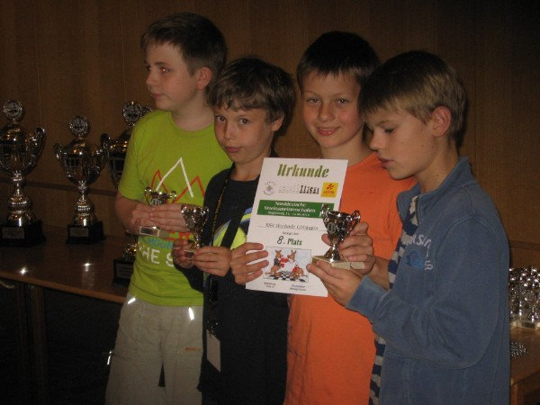 v.l.r. Tobias Schuster, Pavel Mimkes, Alexander Kanzow und Mathis Diederichsen 28.-31.August: Beim Apolda-Open besiegt Julius Rosin seinen ersten Fide-Meister und wird mit 5 aus 7 am Ende 19. von 198 Teilnehmern. Dabei verbessert er seine DWZ auf nun 1948. Alle Infos siehe unter tsg-apolda.de 24.Juli: Pavel Mimkes besteht sein Bronzenes Jugendtrainerdiplom. Sie unter Mitglieder.
Pavel nach seinem Vortrag über die Schallop-Verteidigung im Königsgambit im Schachzimmer. 20.Juli: Die C-und D-Gruppe fanden gemeinsam im BSW statt. Souveräner Sieger im C-Turnier wurde Alexander Kanzow mit 6 Punkten aus 6 Partien. Er steigt damit zusammen mit Rita Nizamova 3 P. und Marcel Kuhlemeyer 2 P. in die B-Gruppe auf. Den Aufstieg in die C-Gruppe haben Artur Balliel 4,5 P., Nick Anosowitsch 4 P. (beide lieferten sich ein spannendes Match in der letzten Runde), Luca Uhlendorff 3,5 P. und Amelie von Hugo 2 P. geschafft. Alle Ergebnisse siehe unter VM-Schnellschach und die neue, aktualisierte DWZ-Liste siehe unter Vereins-DWZ-Liste. 13. Juli: Bezirkseinzel-und Mannschaftsmeisterschaft im Blitzschach in Göttingen. Besonders positiv fiel der 10- jährige Alexander Kanzow auf, der als bester Spieler unter DWZ 1500 einen Ratingpreis gewann. Alle Ergebnisse siehe unter schachbezirk3.de 28. Juni - 29. Juni: 4. Platz für unsere I., 11. Platz für unsere II. und ein sehr guter 14. Platz für unsere III. Mannschaft bei der Landesjugendmannschaftsmeisterschaft in Rotenburg. Alle Infos siehe unter nsj-online.de 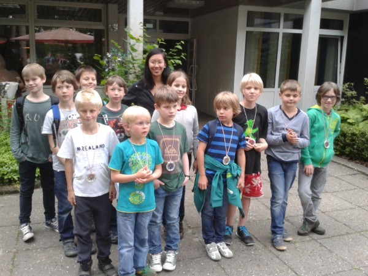 Unsere U10 bei der LJMM in Rotenburg mit den Trainern Thu Ha Nguyen und Mathis Diederichsen. 07. Juni - 15. Juni: 5,5 P. aus 11 anstrengenden Partien und damit Platz 52 von 98 Teilnehmern für Pavel Mimkes bei der DJEM in Magedeburg. Zahlreiche Infos siehe unter dem2014.de. 07. Juni: Pavel fährt heute nach Magdeburg zur DJEM. An Alle: Daumen drücken ! Alle Infos Ergebnisse und Ereignisse siehe unter dem2014.de 28. Mai - 01. Juni: Bei den sehr harmonisch verlaufenden Landesjugendmannschaftsmeisterschaften in Verden belegt unsere U12 mit Mathis Diederichsen, Tobias Schuster, Morris Schütte und Arved Mindermann einen guten 4.Platz und unsere U16 mit Christian Hartogh, Arthur Semmelmaier, Robert Mogharrab und Artur Balliel wurde 6. Alle Ergebnisse und Tabellen siehe unter nsj-online.de und Turniere außerhalb. 25. Mai: Beim Paderborner Jugendopen belegt Bezirksmeister Morris Schütte mit 5 aus 9 einen guten 16. Platz von 37 Teilnehmern in der U12. Infos und Ranglisten siehe unter Paderborner Jugendopen.de 22.Mai: WICHTIG! Unter Nächste Termine stehen die Spieltage der Bezirksliga und der Jugendliga Niedersachsen für die Saison 2014/15. Unbedingt rot im Terminkalender notieren! 19.Mai: Der deutsche Schachbund hat Alarm geschlagen und alle 100.000 Schachspieler in der ganzen Bundesrepublik zur Unterschriftensammlung aufgerufen, weil dem Schachsport vom Bundesinnenministerium die Förderungswürdigkeit entzogen werden soll. Auch der KSV Rochade wird sich dem anschließen. Helft alle mit ! Infos siehe unter: www.schachbund.de/foerderung-des-schachsports/articles/foerderung-des-schachsports.html 18.Mai: Arthur Semmelmaier gewinnt mit 5 Punkten aus 5 Partien souverän die B-Gruppe. Zweiter wird Tobias Schuster mit 3,5 P., der damit den erstmaligen Aufstieg in die A-Gruppe geschafft hat, vor dem Drittplatzierten Mathis Diederichsen (3 P.). Siehe unte:r VM-Schnellschach 11.Mai: Der kampflose 6:0-Sieg gegen Oesede-Georgsmarienhütte bedeutet für uns, dass wir eine weitere Saison in der Jugendliga Niedersachsen spielen können. Siehe unter: Unsere Mannschaften 10.Mai: Rita Nizamova belegt bein der Jugendserie in der U11 in Braunschschweig mit 5 Punkten aus 7 Partien den geteilten 2.Platz und hat damit ihre JWZ auf fast 1300 Punkte gesteigert. Der KSV Rochade applaudiert. Berichte, Tabellen und Fotos sie unter Jugendserie.de 04. Mai: Die A-Gruppe sah mit Nelo Oshionwu (6 Punkte aus 6 Partien!) einen souveränen Sieger. Und es gab zwei spannende Blitzstechen: Um Platz 2 zwischen Christian Hartogh und Julius Rosin und um Platz 6 zwischen Thu Ha Nguyen und Arved Mindermann. Siehe unter VM Schnellschach. 27. April: In der letzten Runde der Bezirksliga kassieren wir gegen den Hamelner SV III eine 5:3-Niederlage. Trotzdem haben wir den Klassenerhalt geschafft, sodass wir auch nächste Saison wieder in der Bezirksliga mitmischen werden. Bericht siehe unter: Unsere Mannschaften 12. - 18. April: Die Landesjugendeinzelmeisterschaften auf Norderney sind zuende gegangen und es gibt einen neuen Stern am Rochadehimmel, denn Pavel Mimkes hat sich ungeschlagen mit 9 Punkten aus 11 Partien als bester männlicher Teilnehmer für die deutsche Meisterschaft in der U10 in Magdeburg qualifiziert. Auch Darja Rizo-Wellmann ist in der weiblichen U12 dabei. Alle Ergebnisse und Endstände unter lem2014.de. Bericht siehe unter: Turniere außerhalb
Landesvizemeister der U10 Pavel Mimkes 02. April: Schulschachlandesfinale in Hannover: 4. Platz für das THG in der WK II und ein 6. Platz für die Hermann-Nohl-Schule in der WK GS. Siehe unter: Schulschach 28. März: Nun wird es adelig bei uns. Der KSV Rochade Göttingen begrüßt ganz herzlich unseren Neuzugang Amelie von Hugo. Siehe unter: Mitglieder 23. März: Unsere U12 hat es geschafft, durch einen 3:1-Sieg gegen unsere II. und einen 4:0-Erfolg gegen Bad Harzburg qualifizieren sie sich souverän als Bezirksmannschaftsmeister für die LJMM. Auch unser Mädchenteam war zum ersten Male komplett und schlägt sich mit dem 3. Platz achtbar. Siehe unter Unsere Mannschaften 23. März: 2:4-Niederlage in der Jugendliga in Lingen, dennoch ist der Klassenerhalt in greifbare Nähe gerückt. Siehe unter: Unsere Mannschaften 16. März: Unglückliche 3,5:4,5-Niederlage für unsere I. Mannschaft in der Bezirksliga gegen Northeim. Siehe unter: Unsere Mannschaften 09. März: Irre spanendes Turnier im BSW bei der zusammengelegten C und D-Gruppe: Souveräne Sieger wurden Darja Rizo-Wellmann und Jakob Oldenburg mit 6 Punkten aus 7 Partien. Beide steigen damit in die B-Gruppe auf. Die Aufsteiger von der D in die C-Gruppe heißen: Fynn Karstens, Marcel Kuhlemeyer (jeweils 4,5 P.), Rita Nizamova, Morris Schütte und Matti Gargulla (jeweils 4P.) Siehe unter: VM Schnellschach 07. März: Die nächsten Schachtalente kommen: Der KSV Rochade heißt Luca Uhlendorff, Marcel Kuhlemeyer und Marian Juric ganz herzlich willkomen! Siehe unter: Mitglieder 03. März: Nur ein 3:3-Unentschieden in der Jugendliga Niedersachsen gegen Nordhorn-Blanke, es wird nun ganz eng. In der BJMM U12 siegt unsere I. Mannschaft gegen Hildesheim mit 2,5:1,5 und unsere II. unterliegt Hildesheim mit 1:3. Siehe unter: Unsere Mannschaften 23. Februar: Die Siegesserie unserer I. Mannschaft in der Bezirksliga reißt nicht ab: 5:3-Sieg gegen den SK Gronau. Unsere II. unterliegt mit nur drei Spielern Bad Harzburg III mit 0,5:3,5. Siehe unter: Unsere Mannschaften 22. Februar: Der KSV Rochade Göttingen heißt das nächste Bruderpärchen im Verein willkommen: Simon Zimmermann (6 Jahre alt) und Lasse Anosowitsch (5 Jahre alt). Siehe unter: Mitglieder 21. Februar: Unsere U12-Mädchen-Mannschaft ist komplett. Der KSV Rochade begrüßt Gina Lambert vom Hainberg-Gymnasium. Zudem begrüßen wir auch Matti Gargulla von der Albani-Grundschule. Herzlich willkommen ! Siehe unter: Mitglieder 16. Februar: Enorm spannend war es in der B-Gruppe. Es gewinnt hauchdünn Thu Ha Nguyen mit 4,5 P. vor Arved Mindermann mit 4,5 P., Mathis Diederichsen und Antal Mimkes mit jeweils 4 P. aus 6 Partien. Siehe unter: VM Schnellschach 10. Februar: Der Klassenerhalt in der Bezirksliga ist zum Greifen nahe. Unsere I. siegt in Bovenden 4,5:3,5, aber die II. kann nach der 1:3 Niederlage gegen Northeim III jede Aufstiegsambition begraben. Siehe unter: Unsere Mannschaften 05. Februar: Schulschachbezirksfinale in Bad Harzburg: Erwartungsgemäße Siege für das Hainberg-Gymnasium in der WK I, für das THG in der WK II und für das FKG in der WK III. Das Turnier in der WK IV endete für die Göttinger Teams (MPG 3., THG 5. und HG 6.) allerdings ohne Qualifikation für das Landesfinale. Ergebnisse und Bericht siehe unter: Schulschach 04. Februar: Die Hermann-Nohl-Grundschule in der Besetzung Arved Mindermann, Darja Rizo-Wellmann, Tjade Keydel und Tim Bräuer wird Bezirksvizemeister im Schulschach und qualifiziert sich damit für das Landesfinale. Die Montessori-Schule mit Pavel und Antal Mimkes wird 3. von 18 Teams. Siehe unter: Schulschach 30. Januar: Darja Rizo Wellmann wird 4. in der U12 bei der Jugendserie in Bad Zwischenahn. Alle Ergebnisse, Berichte und Fotos siehe unter: www.Jugendserie.de 26. Januar: Julius Rosin wird zum fünften Male souverän Vereinsschnellschachmeister mit 5.5 P. aus 6 Partien. Der 2. Platz geht mit 4 P. an Manuel Drehwald. Dritter wird Nelo Oshionwu mit 3.5 P. Siehe unter: VM Schnellschach 21. Januar: Sie hat es schon wieder getan. Nun steht es auch offiziell fest: Darja Rizo-Wellmann ist wieder Schnellschachlandesmeisterin der weiblichen U10! Der Vorstand applaudiert. Siehe unter: nsj-online.de 20. Januar: Wir begrüßen unser neues Mitglied: Hyobin Ahn vom Hainberg-Gymnasium Göttingen. Herzlich willkommen! Siehe unter: Mitglieder 19. Januar: Unsere I. holt beim "Auswärtsspiel" im Moritz-Jahn-Haus in Göttingen ein ruhmreiches 4:4 und auch unsere II. fährt mit dem 3,5:0,5 Erfolg gegen Goslar II den ersten Saisonerfolg ein. Siehe unter unsere Unsere Mannschaften. 12. Januar: In der Jugendliga Niedersachsen gab es eine 1:5-Klatsche in Lehrte, aber unsere U12s waren siegreich. Bei der BJMM gab es einen 3:1-Sieg gegen Bad Harzburg, während unsere II. Hildesheim mit 2:1 schlagen konnte. In der 2. Runde schlug unsere I. die II. mit 3,5:0,5. Siehe unter: Unsere Mannschaften 06. Januar: der KSV Rochade heißt ganz herzlich Ahmed Abdeldayem willkommen! Siehe unter: Mitglieder 02. - 05. Januar: Nelo Oshionwu wird mit 2 Punkten aus 5 Partien 16. von 18 Teilnehmern beim Meisterturnier der LEM in Verden und Julius Rosin mit 4 Punkten 38. von 108 Teilnehmern beim A-Open. Alle Einzelheiten siehe unter: nsv-online.de
DVM der U14 in Düsseldorf und DVM u10 in Magdeburg Endtabelle der DVM u14 und der u10: unter deutsche-schachjugend.de Dass unser u14-Team diesmal verstärkt mit Rita Nizamova viele Lehrstunden erteilt bekommen würde, stand von vorneherein fest, und deshalb waren wir ja auch da. Dennoch, alle Rochadespieler haben mindestens eine Glanzpartie hingelegt: Alex mit einer souveränen Vorstellung gegen Biberach, Luca mit einer großartigen Partie in der letzten Runde gegen Stadtilm, (jetzt kann man sie auch endlich nachspielen !) Pavel sogar mit 2 schmucken Partien, vor allem in der 2.Rd. gegen Kassel, als er nach kurzer Rochade mit Weiß mit g4 angriff, Arved hatte Pech, er bekam 5mal die schwarzen Steine, leider brauchte er etwas, um wieder reinzukommen, sein Sieg in der 5.Rd. gegen Paderborn war vieleicht die beste Partie unseres Teams. Unser Wirbelsturm Rita wirbelte in der 4.Rd. gegen Uelzen, das Strategie auch zum Schach gehört, muss sie noch lernen. Aber noch fehlt die Konstanz, um ein so niveauvolles Turnier auch durchzuziehen. Eigentlich war die Teilnahme an der DVM erst für 2019 geplant. Wir liegen also 2 Jahre über der Zeitrechnung, und das Team hat Potential, denn in fast gleicher Besetzung könnten wir nächstes Jahr nochmal in dieser Altersklasse antreten. Unsere u14 in Düsseldorf: v.l.n.r. Alexander Kanzow, Luca Uhlendorff, Arved Mindermann, Rita Nizamova und Pavel Mimkes. Leider war unser u10-Team, dadurch, dass Simon Zimmermann und Marius Liestmann nicht dabei waren, ersatzgeschwächt, so dass keine bessere Platzierung drin war. Die Mannschaft startete gut und blieb in den Eröffnungsrunden unbesiegt. Doch dann wurde leider der Leader Antal Mimkes, der keine einzige Partie verlor, und mittlerweile seine DWZ auf über 1.200 gehievt hat, krank. Luan Lesser starte ebenfalls gut, baute am Schluss aber ab, David Tulchynskyy muss noch an seinen Eröffnungen feilen, und bei Rumo Schilling und Arthur Liebetanz hat man viel Potenzial aber auch noch Unerfahrenheit gemerkt. Im nächsten Jahr sind alle außer David zu alt für die u10 und ein neues Team muss aufgebaut werden. 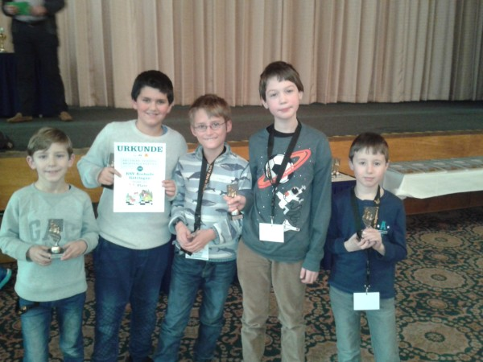 unsere u10 in Magdeburg: v.l.n.r. Artur Liebetanz, Luan Lesser, Rumo Schilling, Antal Mimkes, und David Tulchynskyy. Die u14 war nicht so eng gedrängt, aber hier gab es auch nur 2 Qualifikationsplätze für die LJEM. In Abwesenheit des Titelverteidigers Arved Mindermann konnten sich einige Rochadespieler Hoffnungen auf die ersten beiden Plätze machen. Die Platzierungen 11 und 10 von Nils Matthießen und Max Neumann konnte man erwarten, beide haben eine Menge dazugelernt. Tom Lutze erreichte mit 2,5 P. einen guten 8.Platz, aber bei ihm wäre viel mehr drin gewesen, denn mindestens 1,5 Punkte hat er einfach verschenkt. Rita Nizamova (3 P./Platz 6) hatte Pech, denn nachdem sie die Auftaktrunde verloren hatte, holte sie auf, gewann 3 Partien in Serie und traf in der letzten Runde ausgerechnet auf den Tabellenführer. Das war schade, aber bei nur 5 gespielten Runden, darf man i.d.R. die Auftaktrunde halt wegen der Buchholzwertung nicht verlieren. Pavel Mimkes leistete sich eine völlig unerwartete Niederlage in der 2.Runde, trotzdem schaffte er die Qualli für die LJEM noch sicher. Das u14-Turnier war von Anfang bis Ende eine One-Man-Show von Alexander Kanzow, der sich eine Fehlerquote von 0,0 % leistete und das Turnier diesmal vor seinem Freund souverän gewann. U16/u18: Auch diese Altersklassen wurden mangels Masse zusammengelegt. Beim KSV Rochade fehlten mit Arthur Semmelmaier und Luca Uhlendorff zwei starke Spieler. Philip Herzig und Fynn Karstens belegten zwar erwartungsgemäß die letzten beiden Plätze, aber Philip schlug Fynn im vereinsinternen Vergleich und stand sowohl gegen Ole Reichelt als auch gegen Andre Schano glatt auf Gewinn. Mit 2 Punkten mehr hätte er die Qualli geschafft. 27.-29.Dezember: DVM u10 in Magdeburg: Unsere I.Mannschaft:v.l.n.r. Antal Mimkes, Nick Anosowitsch, Bennet Zimmermann, und Matti Gargulla. Unsere II. Mannschaft: v.l.n.r.: Simon Zimmermann, Luan Lesser, Til Taschenberger und Lukas Kracke. Unsere III.Mannschaft: l.hinten nach vorne: Lasse Anosowitsch, Tristan Fahrendorff, und Amelie von Hugo. Im Magdeburger Maritim-Hotel fanden vom 27.-29.Dezember auch die Deutsche Vereinsmeisterschaft der Allerjüngsten statt. Insgesamt 60 Teams bewarben sich um den Titel des deutschen Vereinsmannschaftsmeisters. Unsere I. mit Antal Mimkes, Nick Ansowitsch, Bennet Zimmermann, und Matti Gargulla wurde 38., aber noch bis zur 6.Runde blieb das Team ungeschlagen. Nur in den beiden Abschlussrunden brach die Mannschaft ein und wurde so noch auf Platz 38 durchgereicht. Topscorer war Matti Gargulla an Brett 4 mit 5,5 P. aus 7 Partien. Es wäre viel mehr dringewesen.... Unsere II. mit Lukas Kracke, Til Taschenberger, Luan Lesser und Simon Zimmermann wurde erwartungsgemäß 50. Das Team ließ gleich mit einem 2:2 in der 1.Runde gegen KSV Rochade I aufhorchen, konnte aber danach nur noch einen Mannschaftskampf gewinnen. Topscorer mit 4,5 P. an Brett 3 war Luan Lesser. Unsere III. mit Amelie von Hugo, Tristan Fahrendorff, und Lasse Anosowitsch konnte aufgrund des Ausfalles von Marius Liestmann leider nur zu dritt antreten und hatte deshalb natürlich auch keine Chance. Aber alle waren begeistert und haben viel gelernt. Topscorer war hier Tristan Fahrendorff an Brett 2 mit 2 P. Süharzer Open 2015 Die Überraschung ist perfekt! Die Nummer 23 der Setzliste (DWZ 1729) vom KSV Göttingen hat mit 4 Punkten aufgrund der besseren Buchholzwertung die 9. Offene Südharzmeisterschaft vor Dustin Richter (SV Sangerhausen) und Daniel Boerma (Fehntjer SK) gewonnen. Die Topfavoriten Robin Jacobi und Florian Heyder belegten ebenfalls mit 4 Punkten die Plätze 4 und 5. Bester Jugendlicher wurde mit 3,5 Punkten auf Platz 8 Henning Rudolf vom USV Volksbank Halle. Tabelle siehe unter: www.schach-sachsen-anhalt.de/images/OKEM2015-Fort-R5.pdf BJMM 2015/16 u12: 1Rd. KSV Rochade II-KSV Rochade I = 1:3 Gargulla-Mimkes: 0:1 Kracke-Kanzow: 0:1 Matthießen-Zimmermann: 0:1 Schneider-Fahrendorff: 1:0 2.Rd. Hildesheim-KSV Rochade II = 3:1 Abmeier-Gargulla: 0:1 Keil-Kracke: 1:0 Englmann-Matthießen: 1:0 Schwetje-Schneider: 1:0 3.Rd. KSV Rochade I-Hildesheim = 2,5:1,5 Mimkes-Abmeier = Remis Kanzow-Keil: 1:0 Zimmermann-Englmann: 1:0 Fahrendorff-Albe: 0:1 Endstand: 1.KSV Rochade I 4:0, 5,5 BP 2.Hildesheim 2:2, 4,5 3.KSV Rochade II 0:4, 2 Obwohl die U12 nach Nicks Erkrankung nur ersatzgeschwächt antreten konnte, war die Qualli für die LJMM völlig verdient, auch wenn es am Ende doch noch mal spannend wurde, denn sowohl Pavel, als auch Bennet mussten in der letzten Runde ihre Verluststellungen erstmal wieder rausreißen. Im II. Team spielten unsere alten Albanikinder (Matti Gargulla, Lukas Kracke, Nils Matthießen und Luis Schneider) noch einmal zusammen. u14 1.Rd. KSV Rochade-Hildesheim: 3:1 Bad Harzburg-Goslar: 1,5:2,5 Nizamova-Schano: - + Dojan-Guerrouat: Remis Mindermann-Wrede: 1:0 Lylov-Drygala: 0:1 Uhlendorff-Bartels: 1:0 Stolte-Hegemann: 0:1 Diederichsen-Collins: 1:0 Winkler gewinnt kampflos + - 2.Rd. Hildesheim-Goslar: 4:0 KSV Rochade-Bad Harzburg: 3:1 Schano-Guerrouat: 1:0 Nizamova-Dojan: - + Wrede-Drygala: 1:0 Mindermann-Peter: 1:0 Bartels-Hegemann: 1:0 Uhlendorff-Lylov: 1:0 Collins gewinnt kampflos + - Diederichsen-Winkler: 1:0 3.Rd. Bad Harzburg-Hildesheim: 0:4 Goslar-KSV Rochade: 1,5:2,5 Dojan-Schano: 0:1 Guerrouat-Nizamova: + - Peter-Wrede: 0:1 Drygala-Mindermann: Remis Lylov-Bartels: 0:1 Hegemann-Uhlendorff: 0:1 Winkler-Collins: 0:1 Diederichsen gewinnt kampflos - + Endtabelle: 1.KSV Rochade 6:0, 8,5 BP 2.Hildesheim 4:2, 8 3.Goslar 2:4, 3 4.Bad Harzburg 0:6, 2,5 Auch unsere U14 erfüllte mit nur 3 Spielern souverän ihren Job. BJEM vom 19.10.-22.10. in Göttingen und BEM vom 23.10.-25.10. in Bad Salzdetfurth Tja, was hat es doch für katastrophale Zustände vor dem Turnier nach dem plötzlichen Rücktritt des erst im Februar 2015 gewählten Bezirksjugendwartes Björn Rohde gegeben. Noch Anfang Oktober hatten wir weder einen geeigneten Spielraum, noch einen Spieltermin, noch genügend Spielmaterial, (inklusive Urkunden, Pokale, Computer, Partieformulare u.s.w.), und eine komplette Teilnehmerliste war auch nicht vorhanden. Gut, daß das Hainberggymnasium, wie ein Retter in der Not uns ihre Schulräume zur Verfügung gestellt hat, und daß es jemanden gab, der Organisator, Turnierleiter, Schiedsrichter, Schachlehrer, Seelentröster und Entertainer in einer Person vereinte. Zum Turnierbericht: BJEM U10 Bei den Kleinsten gab es von Anfang an einen Zweikampf zwischen Bert Sieber vom ESV und Vinh Dao vom Hildesheimer SV, den Bert verdientermaßen für sich entscheiden konnte, selbst einen Ausrutscher gegen den Drittplatzierten Adrian Hoke (SW Northeim) konnte er sich leisten. Aus Rochadesicht konnte man diese Altersklasse nur als "durchwachsen" bezeichen. Erwähnen wir das Positive: Antal hatte mit Trickschach ein paarmal Erfolg, Luan hat in der letzten Runde gegen den Turniersieger lange durchgehalten, Tristan hat sich in seinem ersten Langzeitturnier teuer verkauft, Marius war nach seiner überragenden Vorstellung bei den Göttinger Schulschacheinzelmeisterschaften, die er beinahe sogar gewonnen hätte, ein wenig enttäuscht und er muß noch lernen, dass Schnellschach und Turnierschach zwei paar Schuhe sind, und Simon hatte ebenfalls viel Spaß bei diesem Turnier. BJEM U12 Die U12 war eine Rochade-Vereinsmeisterschaft mit einem Hildesheimer Gast. In dieser Altersklasse dominierten die beiden Favoriten vom Start weg das Turnier. In der 3.Runde trafen sie dann auch bereits aufeinander: Pavel gewann relativ sicher und danach fuhren Pavel und Alexander das Turnier souverän nach Hause. Auf alle Fälle hat der Bezirk Südniedersachsen bei der nächsten LJEM in dieser Altersklasse zwei ganz heiße Eisen im Feuer. Der dritte Platz reichte in diesem Jahr ebenfalls für die direkte Qualifikation für die LJEM. Und in der letzten Runde hatten noch 4 Spieler Chancen auf diesen Platz. Bennet Zimmermann hat es schließlich verdient auch geschafft. Ob Nick als Viertplatzierter ebenfalls noch dabei ist bei der LJEM können wir nicht prognostizieren, zu wünschen wäre es ihm, auch er ist besser geworden. Nils hat in seinem ersten Langzeit-Turnier großartig gespielt, bis zuletzt hatte er Chancen sich ebenfalls für die LJEM zu qualifizieren, doch er bekam in der letzten Runde Pavel serviert...,Marian kann ebenfalls zufrieden sein, zwei Spieler aus der I. Mannschaft hat er geschlagen, Lukas hat sich bestimmt mehr erhofft, doch er hatte ein wenig Auslosungspech und spielte viel zu schnell. Thorben konnte immerhin Nils schlagen und hätte durchaus mehr Punkte holen können, genauso wie Amelie, die sich aber nun mit dem Titel einer u12-Bezirksmeisterin schmücken darf. In dieser Altersklasse war Andre Schano vom Hildesheimer SV der große DWZ-Favorit. Doch das Turnier hat Arved Mindermann gewonnen, der wie eine Maschine seine Gegner überrollte und ihnen keine Chance ließ. Seine Fehlerquote lag bei unter 5 %, was für diese Altersklasse sehr ungewöhnlich ist. Und selbst das Remis, das er abgab, war eher ein Geschenk an den Gegner. Wir sind sehr gespannt auf Arveds Abschneiden bei der LJEM. Luca wurde verdient Zweiter, auch er hat einen gehörigen Satz nach vorne gemacht. Der ehemalige Bezirksmeister Morris hatte gegen die vorderen Plätze keine Chance, aber die hinter ihm Platzierten fegte er locker weg. Mathis war mit seiner Platzierung nicht zufrieden und er konnte es auch nicht sein. Die Konstanz hat gefehlt, mal spielt er meisterlich und dann....Rita "schwänzte" die ersten beiden Runden, um dann noch das Feld von hinten aufzurollen. Zur Belohnung wurde sie noch souverän Bezirksmeisterin. Unsere mehrfache Schnellschachlandesmeisterin Darja hatte das Pech in der letzten Runde noch auf Arved zu treffen und wurde so "nur" Bezirksvizemeisterin. Toms Spiel hatte Licht (Sieg gegen Morris) und Schatten (ab der 4.Runde kein Punkt mehr), was ihm noch fehlt ist Turniererfahrung, dann wird auch er sich entwickeln. Adrian muß sich spieltechnisch noch weiterentwickeln, Kampfgeist hat er. Gina konnte ihre Endspielstärken in diesem Turnier nicht ausspielen, denn ins Endspiel muß man ja auch erst mal kommen... In diesen Altersklassen, die zusammengelegt wurden, waren die Rochadespieler unter sich. Während Christian und Arthur die U18-Wertung unter sich ausmachten, spielten die u16er ihr Turnier. Christian fuhr nach seinem Sieg über Arthur die BJEM locker nach Hause. Er hat bewiesen, daß er sich mittlerweile im DWZ 1900er Bereich bewegt, wenn er noch bis zur LJEM auf über 2000 kommt, ist er einer der Mitfavoriten der Königsklasse. Auch Arthur wird bei der nächsten LJEM, er ist ja noch ein Jahr jünger als Christian, mit Sicherheit nicht Letzter werden. In der U16 ging es nur um den Titel, den sich Fynn im Schnellschachstechen gegen Marcel holen konnte. Die Langzeit-Partie der beiden gegeneinander war hochklassig und endete verdient mit Remis. Florian und Norbert machten schließlich Platz 3 unter sich aus. Wobei der Vereinsmeister der U14 von 2014 schlußendlich gewann. Bezirkseinzelmeisterschaft 2015 Bei den Herren in Bad Salzdetfurth gab es etwas weniger chaotische Zustände. Zwei Rochadespieler waren dabei: Manuel kam nach seinem Vizemeistertitel im letzten Jahr nicht über Platz 13 hinaus, wobei man natürlich sagen muss, daß die BEM 2015 sowohl qualitativ, als auch quantitativ besser besetzt war, als die BEM 2014. Julius Vorbereitungsarbeit auf die Gegner muß professioneller werden, das weiss er selber, dann ist in Zukunft auch mehr drin als der Titel 2012. 09.09-13.09.NDVM U12 in Magdeburg. 1.Rd. KSV Rochade-SV Empor Berlin = 2,5:1,5 Da wir nur an 10.Position gesetzt wurden, erwischte uns gleich zu Beginn einer der vermeintlichen Mitfavoriten, die Nr. 2 der Setztliste, der SV Empor Berlin, der an allen Brettern besser besetzt war. Aber da wir letztes Jahr gegen die Berliner ein 2:2 erreichen konnnten, waren wir uns bewußt, nicht völlig chancenlos zu sein. Leider musste Alex gegen den gleichen Gegner vom letzten Jahr früh die Segel streichen, er spielte zu Beginn viel zu ängstlich. Es sollte aber nur noch eine einzige Niederlage in diesem Turnier für ihn folgen ! An den anderen Brettern wurde hart gearbeitet: Pavel hatte Glück, daß sein Gegner offenbar mit dem falchen Bein aufgestanden war, und gewann äußerst glücklich. Rita spielte fantastisch und hatte ihren Gegner immer im Griff: 2:1 für Rochade. Nun kam alles auf Arved an, der aber in einem Springerendspiel zwei Bauern weniger hatte. Da diese Partie live übertragen wurde, konnte sich der Rest des Teams alles im Internet ansehen und und feuerte Arved an. Arved, Arved, Arved....schallte es durch die Jugendherberge. Und die Überraschung geschah tatsächlich ! Arved machte es im Endspiel genau richtig und aktivierte seinen König und nach einem taktischen Manöver konnte der Gegner froh sein noch mit einem Remis davongekommen zu sein. 2,5:1,5. Ein irrer Auftaktsieg. 2.Rd. USC Magdeburg-KSV Rochade Göttingen = 1:3 Da wir die Auftaktrunde nur knapp gewinnen konnten, bekamen wir nun einen Gegner von unten zugelost, den USC Magdeburg, gegen die wir auch letztes Jahr mit 3:1 gewinnen konnten. Pavel fand noch nicht richtig ins Turnier und unterlag nach hoher Fehlerquote, was man bei ihm sonst gar nicht kennt. Alex mit noch etwas wackeligem Beginn und Arved konnten aber die 2:1-Führung erzielen, doch Rita schien in Topform zu sein. Sie gewann ihr Spiel mit einer grandiosen Leistung, so daß der 3:1-Erfolg absolut verdient war. Zwei Auftaktsiege, besser hätte der Start nicht laufen können. Wir wussten jetzt. Hier ist vieleicht was drin. 3.Rd. SV Mattnetz Berlin- KSV Rochade Göttingen = 4:0 Nun ging es wieder an die Livebretter gegen den Berliner Meister, und wie stark der Gegner war, konnte man schon daran sehen, daß einer der größten Talente Deutschlands in dieser Altersklasse nur an Brett 2 saß. Die Begegnung selber war gespickt mit lehrreichen Fehlern. Man konnte alles erleben : Eröffnungsfehler, taktische Fehler, haarsträubende strategische Fehlentscheidungen, Endspielfehler, bis hin zu einfachen Einstellern. Die Berliner waren dankbar für diesen Aufbaugegner. 4.Rd. KSV Rochade Göttingen-SC Diogenes Hamburg = 2:2 Gegen Diogenes machten wir uns allerdings große Hoffnungen, mit Außnahme von Brett 1 waren wir an allen anderen Brettern besser besetzt. Und so kam es dann auch. Pavel wurde nach einer überraschenden Eröffnungswahl seines Gegners schnell überrannt, doch Alex und Arved erledigten ihren Job souverän, so daß wir 2:1 in Führung gehen konnten. Rita allerdings konnte ihre Form vom Vortage nicht kompensieren und obwohl sie großartig kämpfte, entschied am Ende der Freibauer für den Hamburger Spieler. Ein maues 2:2 also, und am Abend ging es erstmal zum Pizzaesssen. 5.Rd. KSV Rochade Göttingen- Hamburger SK= 1,5:2,5 Nun wartete der hinter Spartak Moskau zweitgrößte Schachverein Europas auf uns. Der HSK. Unser Motto lautete unbedingt gewinnen, denn dann werden wir in der vorletzten Runde an das Spitzenbrett hochgelost, und in der letzten Runde spielen wir gegen einen schlagbaren Gegner, und dann würden 9:5 Mannschaftspunkte für einen Platz unter den ersten 5 und damit für die Qualifikation für die deutsche Meisterschaft wahrscheinlich reichen. Doch nachdem Alex seine beste Partie ablieferte und uns 1:0 in Führung brachte, war die Niederlage bei Arved und Rita bereits absehbar. Auch Pavel konnte den Spieß nicht umdrehen, sein Gegner quälte ihn 168 !! Züge lang, doch mehr als Remis sprang dabei nicht heraus. 6.Rd. RT Halle-KSV Rochade= 1:3 Statt von oben bekamen wir nun eine Mannschaft von unten. Roter Turm Halle, die uns nun von unten zugelost wurden. Wir wollten unsere letzte Qualli-Chance nutzen und setzten alles auf Sieg. Dabei brauchten unsere Spitzenbretter allerdings eine Menge Glück. Pavels "Bertramisch" war noch nicht ganz ausgereift, aber anstatt zu gewinnen, stellte der Gegner lieber die Figur weg. So ähnlich erging es auch Alex, der im Gambitstil angriff, aber bald sein Pulver verschossen hatte, aber der Gegner stellte auch hier eine Figur ein. Arved, der sehr solide spielte, hatte die klar bessere Position und gab diese erstaunlicherweise Remis, damit war aber der Mannschaftserfolg in trockenen Tüchern. Rita machte das, was sie eigentlich in jeder Partie dieses Turniers tat, sie fightete um ihr Leben und holte in einem absolut verlorenen Endspiel noch ein Remis heraus. Und am Abend wurde gezittert: Wer würde unser Gegner in der letzten Runde sein.....? 7.Rd. Reideburger SV-KSV Rochade Göttingen = 3:1 Die Schachgöttin Caissa war uns leider nicht hold. Es wurde die Nr. 1 der Setzliste, der souveräne Tabellenführer, der Reideburger SV, das gespieckt war mit Spielern, die zur absoluten Spitze in Deutschland zählen. Pavel hatte keine Chance und verlor rasch, und obwohl er sich um ca. 60 DWZ-Punkte verbesserte, war es ein durchwachsenes Turnier für ihn, Alex schoss allerdings den Vogel ab, er schlug einen absoluten Spitzenspieler und verbesserte sich nun auf eine DWZ auf 1500. Als 11jähriger gar nicht so schlecht...Arved und Rita kämpften beide wie die Löwen, hatten schlußendlich aber doch keine Chance. Beide mit durchschnittlichen Turnierleistungen. Der 9.Platz im Endklassment spiegelt nicht ganz die Leistung des Teams wieder, denn am Ende zogen Teams noch an uns vorbei, die eine viel schlechtere Berliner Wertung hatten. Abschlußtabelle der NDVM u12 in Magdeburg: LJMM U10 in Rotenburg 27./28.Juni 2015 Daß unser III. Team, die mit nur 2 Spielern antreten konnten, bei diesem Turnier nur Letzter werden konnte, stand von vorneherein fest. Dennoch haben sich sowohl Marius Liestmann, der unbedingt an Brett 1 spielen wollte, als auch Luan Lesser sich gut verkauft und sogar gegen den Hagener SV II ein Unentschieden geschafft. Unser II. Team wartete mit einer durschnittlichen Leistung auf. Alle vier: Nick Anosowitsch, Simon Zimmermann, Marian Juric und Til Taschenberger spielten konstant, haben viel gelernt und blieben im Erwartungsbereich. Auch Für unser I.Team galt das Olympische Motto: Dabeisein ist alles" und eine Endplatzierung unter den ersten 10 galt schon als Erfolg. Doch was taten Antal Mimkes, Lukas Kracke, Matti Gargulla und Bennet Zimmermann ? Nachdem sie in der Eröffnungsrunde mit viel Glück Bemerode mit 3:1 schlagen konnten und anschließend gegen den Landesmeister Hagen I mit 0:4 untergingen, wurde das Team von Runde zu Runde zu Runde immer besser. Antal spielte ab Runde 3 viel stärker und verlor nur noch gegen Jeremy Hommer, Lukas mit viel Licht zu Beginn, aber in den Schlußrunden fehlte ihm die Kraft, Matti mit schlechtem Start, aber auch bei Ihm wurde die Partiequalität ab Runde 3 immer besser. Den Vogel schoß allerdings Bennet an Brett 4 ab: 5,5 Punkte aus 7 Runden. Am zweiten Veranstaltungstag sammelte er nur noch Figuren ein. (Und bedankte sich artig bei den Gegnern...) Es kam schlußendlich ein sensationeller 2.Platz heraus, der bedeutet, daß die vereinsinterne Qualli für die deutschen U10-Meisterschaften in Magdeburg geschafft ist. Es war der 4. Vizemeistertitel für den KSV Rochade auf Landesebene. I.Mannschaft II.Mannschaft III, Mannschaft LJMM U12-U16 in Lingen 14.-17.Mai 2015 U16: 8.Platz 3:11 P. 7:21 BP Unsere U16 hat das Ziel nicht Letzter zu werden leider nicht erreicht, außer einem Achtungserfolg gegen Stade und einem Mannschaftsremis gegen Laatzen war leider kein Blumentopf zu gewinnen. Arthur Semmelmaier holte am Spitzenbrett mit 2,5 P. das beste Ergebnis und bewies seine ansteigende DWZ. Robert Mogharrab, Artur Balliel und Fynn Karstens, dem 2 schöne Weißsiege gelangen, haben viel dazugelernt. U14: 6.Platz 3:11 P. 6:22 BP Auch für unsere U14 galt das olympische Motto: Dabeisein ist alles ! Vor allen Dingen, weil wir mit Luca Uhlendorff, Marcel Kuhlemeyer und Florian Schinke drei Spieler dabeihatten, die zuvor noch nie ein Langzeitturnier gespielt hatten. Doch alle drei hielten tapfer mit und mit mehr Turniererfahrung wäre der eine oder andere Punkt mehr dringewesen. Unser Turnierveteran Mathis Diederichsen musste erkennen, daß er zu wenig Schach gespielt hatte, und so kam er erst gegen Ende des Turniers in Form und dann kamen auch die Punkte. Im nächsten Jahr setzen wir uns in dieser Altersklasse höhere Ziele. U12: 2.Platz 11:3 P. 19,5:8,5 BP Unsere U12 hat die Qualli für die Norddeutsche geschafft und beinahe wäre es sogar der erste Landesmeistertitel für den KSV Rochade geworden, aber im Endspiel in den letzten Runde mussten wir erkennen, daß der Hagener SV noch ein Stückchen weiter ist. Aber Pavel Mimkes, (5,5 P.), Alexander Kanzow (5 P.), und Arved Mindermann (5,5 P.) haben bewiesen, daß auch in Magdeburg bei der Norddeutschen mit ihnen zu rechnen sein wird. Darja Rizo-Wellmann fiel mit (3,5 P.) etwas ab, aber es gelang ihr in der 3.Runde ein sehr schöner Sieg gegen Jule Wolterink. LJEM aller Altersklassen vom 28.März-03.April 2015 in Rotenburg. (Bericht) U18: Manuel Drehwald 5 aus 9 = Platz 6, Christian Hartogh 4,5 P. = Platz 8. Wir beginnen bei der u18. Hier starteten Manuel Drehwald und Christian Hartogh und bei beiden wurde ein Platz unter den Top10 als Zielsetzung ausgegeben, was ja auch gelang. Doch es hätte auch noch mehr werden können, das zeigt die hohe Buchholzwertung bei beiden. Manuel gelangen schöne Siege gegen Nguyen Gia Luat Thieu und dem letztjährigen u16-Landesmeister Tom Peters, und Christian gelang ein Überraschungscoup gegen die amtierende deutsche Meisterin Fiona Sieber. Beide haben bewiesen, daß sie zur Landesspitze der Jugendlichen in Niedersachsen gehören, aber zum Sprung ganz nach vorne hat noch die Konstanz gefehlt. U12: Pavel Mimkes 7,5 aus 11 = Platz 5, Darja Rizo-Wellmann 2 P. = Platz 23 Da wir in diesem Jahr keine Spieler in der u16 und u14 dabeihatten, denn Arthur musste beim Open antreten, da er die BJEM aufgrund eines Australienaufenthaltes nicht mitspielen konnte, entfallen diese Jahrgänge. Pavel Mimkes, der in diesem Jahr nur schon mal für 2016 üben wollte, startete mit 5,5 Punkten aus den ersten 6 Partien und zeigte eine sehr reife Partieanlage, doch ein Krankheitseinbruch kostete ihm Kraft, mit der Folge, daß er drei Partien in Serie (Runden 7-9) verlor, und trotz seiner beiden Abschlußsiege, konnte er die Qualli für die DJEM nicht mehr schaffen. Darjas Tabellenstand sagt nichts viel aus über ihre Partienqualität, denn die war zum Teil sogar sehr gut und in einigen Matches hatte sie auch großes Pech. Immerhin gelang ihr ein erster Sieg gegen Lars ter Stal. U10: Antal Mimkes 6 aus 11 = Platz 13, Bennet Zimmermann 5,5 P. = Platz 20, Nick Anosowitsch 5 P. = Platz 24, Amelie von Hugo 5 P. = Platz 27, Simon Zimmermann 4 P. = Platz 30. Antals Zielsetzung war ein Platz unter den ersten 10. Und dieses Ziel wurde mit dem geteilten 10.-15. Platz so gerade erreicht. Dennoch muß er an seiner schachlichen Qualität weiter arbeiten, es nützt halt nichts, wenn man eine 5 zügigige Kombination super berechnet, wenn man dann gleichzeitig das Matt in einem Zug übersieht....Über Bennets Leistung konnte man sehr zufrieden sein, von Runde zu Runde zu Runde wurde er insgesamt in seinem allerersten Turnier immer sicherer und besser und verlor ab Runde 5 nur noch zweimal. Nick zeigte er eine sehr sichere und schon recht reife Partieanlage, so stand er in fast allen Weißpartien auf Gewinn. Er muß vor allem noch taktisch dazulernen. Da in dieser Altersklasse die Jungs und Mädels zusammen spielen, musste Amelie bei den Jungs antreten und hier wehrte sie sich tapfer. Mit ihrer Punktausbeute kann sie zufrieden sein. Unser Jüngster Simon vergab mindestens 4 Stellungen, die er eigentlich hätte gewinnen müssen. Seine Partienalage ist gut und er darf noch 2 Jahre in dieser Altersklasse antreten. U12w: Rita Nizamova 8 aus 11 = Platz 1, Gina Lambert 3 P. = Platz 3. Die Mädchen aller Alterskategorien wurden in einem 11 rundigem Turnier zusammengefasst, wobei jede gegen jede spielte. Der Stolz des KSV Rochade in diesem Turnier ist Rita Nizamova, die in diesem Turnier sich weit von den anderen u12-Mädchen abhob. (Sie hatte am Ende doppelt soviel Punkte, wie das zweitbeste u12-Mädchen !), und nun darf sie im nächsten Jahr in der männlichen u14 starten. Jungs, zieht euch schon mal warm an. Gina war in ihrem allerersten Schachturnier noch sehr nervös und konnte aus den ersten 6 Runden nur einen Punkt entführen, doch dann wurde auch sie sicherer und am Ende stand die Bronzemedaille in der u12w. Open: Arthur Semmelmaier 4,5 aus 7 = Platz 8. Auch das Open fand in diesem Jahr wieder mit Rochadebeteiligung statt, und hier lieferte Arthur eine Sahnevorstellung ab. Stark verbessert in Endspielen und Eröffnungen, taktisch reifer geworden, nur das schnelle Remisgeschiebe sollte er sein lassen, das hat er nämlich gar nicht nötig. Nur eine einzige Niederlage kassierte er und wurde somit bester Jugendspieler des Opens. BJMM der U12 am 14.Februar 2015 in Hildesheim 1. KSV Rochade Göttingen 6:0 (Arved Mindermann, Rita Nizamova, Darja Rizo-Wellmann und Lukas Kracke) 2. Hildesheim I 4:2 3. Hildesheim II 2:4 4. KSV Rochade II 0:6 (Tom Lutze, Maximilian Neumann, Bennet Zimmermann und Amelie von Hugo) BJEM 2014 -U16 & U18 Organisatorisch war die Austragung der BJEM kein Vergleich zur Katastrophe im letzten Jahr. Der SK Goslar hat eine hervorragende Ausrichtung in einer sehr schönen Jugendherberge hinbekommen, und es wurde uns auch berichtet, daß es in diesem Jahr ausnahmsweise keine Verstösse gegen die BTO und gegen die Fide-Regelungen von der Turnierleitung gegeben hat. Dennoch muß man sich fragen, was für einen sportlichen Wert eine Jugendschachveranstaltung hat, bei denen die Mehrheit der Spitzenspieler nicht mitgespielt haben und bei der die Teilnehmerzahlen seit Jahren rückläufig sind. 2008: 68 TN, 2009: 51 TN, 2010: 47 TN, 2011: 43 TN, 2012: 38 TN, 2013: 30 TN, 2014: 27 TN. (Minusrekord). Auch die Bezirksmeisterschaft der Herren verzeichnete mit nur 10 Teilnehmern einen Minusrekord. Es wäre dringend erforderlich, daß alle Schachfreunde sich mal außerhalb einer JHV an einen Tisch setzen würden, um mal Tacheles zu reden, z.B.: Wie sehen Schachkinder überhaupt aus ? Wie macht man ein Turnier zu einem Event ? Was ist eine kindsgerechte Auslegung der FIDE-Regel ? Was ist ein Jugendtrainerdiplom und könnte man soetwas erstmal bezirks- und landesweit einführen ? Was wurde bei der Mitgliederpflege und der Jugendarbeit in den letzten Jahren alles falsch gemacht ? u.s.w, u.s.w. BEM vom 02.-05.Oktober in Bad Harzburg: 1. Nelo Oshionwu 4 P. 2.Manuel Drehwald 3,5 P. Nelo Oshionwu 1., Manuel Drehwald 2., Christian Hartogh 6.Platz bei der BEM 2014 (hin.r. Julius Rosin) Für Rochade war das Turnier natüriich ein großer Erfolg, der gezeigt hat, wie wichtig gute Jugendarbeit ist. Die Ernte fährt man auf alle Fälle ein, es ist nur eine Frage der Zeit. Nelo befindet sich seit einiger Zeit wieder im Aufwind, sein Sieg bei der BEM war völlig verdient, er spielte einfach das aggressivste Schach des Turnieres. Aber auch Manuel, der bis zur letzten Runde in Führung lag und mit einem Remis in der Abschlußrunde gegen Nelo ebenfalls Bezirksmeister hätte werden können, kann mit seinem Abschneiden zufrieden sein. Christian versaute sich eine bessere Platzierung durch unerwartete Niederlagen gegen Klaus Elborg und Siegmar Gottwald in den Runden 2 und 3, so daß trotz zweier Siege in den Abschlußrunden nichts mehr drin war. Julius, der Bezirksmeister von 2012, steckt momentan im harten Schachtraining, so daß er ein wenig überspielt wirkte und sein wahres Potential gar nicht abrufen konnte. Allerdings hatte das Turnier auch einen faden Beigeschmack. Es kamen nur ganze 10 Spieler !! Was wäre eigentlich passiert, wenn das Turnier in Göttingen an schulfreien Tagen stattgefunden hätte ?! NDJMM 2014 der U12 in Magdeburg vom 10.-14.September 2014: Zum ersten Male nahm der KSV Rochade an den norddeutschen Vereinsmeisterschaften der U12 teil und wir mussten mit Erschrecken feststellen, daß wir nur an Position 15 gesetzt waren, so daß für uns feststand, daß hier wohl kein Blumentopf zu gewinnen sein wird. 1. Runde: KSV Rochade- SV Post Uelzen= 0:4 Und so kam es, daß unser Team gegen den niedersächsischen Landesmeister der U12 und Freunde aus Uelzen besonders nett zu Werke ging. Pavel und Mathis übersahen einzüge Matts, Tobi machte bereits nach 10 Minuten Schluß und auch Alex spielte viel zu ängstlich und war deshalb chancenlos. 2. Runde: KSV Rochade- Roland Weißenfels= 2,5:1,5 In der 2.Runde steigerte sich das Team etwas und kam so langsam aus dem Ferienmodus heraus, obwohl die Siege von Mathis und Tobi äußerst glücklich waren. Alex, nach wir vor zu aufgeregt, verlor und Pavel ließ sich in besserer Endspielstellung auf das Remis ein, um den Mannschaftssieg perfekt zu machen. 3. Runde: KSV Rochade- Lübecker SV= 3:1 Die Lübecker waren allerdings schon ein harter Brocken. Tobi verlor schnell, Alex spielte jetzt viel befreiter und brachte eine fantastische Kombination mit Turmopfer auf g2. Pavel schlug einen sehr starken Gegner mit DWZ über 1600, und Leistungsträger Mathis wurde an Brett 4 jetzt immer sicherer. Der Sieg war völlig verdient. 4.Runde: KSV Rochade- USC Magdeburg= 2:2 Der Gegner war absolut gleichwertig und das Mannschaftsremis geht in Ordnung. Pavel verlor gegen einen hervorragend spielenden Gegner und auch Tobi verlor, obwohl man jetzt einen Anstieg der Partiequalität bei ihm feststellen konnte. Alex, nun wie entfesselt, und Punktegarant Mathis fuhren die Siege ein. 5. Runde: KSV Rochade-Königsspringer Hamburg = 3:1 Gegen diesen starken und erfahrenen Gegner rechneten wir uns kaum etwas aus. Wir nahmen uns vor alle für Pavel zu spielen, der an Brett 1 wohl keine Chance gegen einen 1.700 er Spieler haben dürfte. Und das taten wir dann auch. Alex wieder mit einer sehenswerten Kombi, Tobi mit seiner besten Turnierpartie und Killer Mathis mit einer scharfen Vorstellung, holten den Mannschaftssieg. Als wir mittags dann einen vorsichtigen Blick auf die Tabelle warfen, wurde uns ganz mulmig, wir waren 3. und es fehlte nur noch ein Sieg zur Qualli zur deutschen Meisterschaft !!! 6. Runde: KSV Rochade- Tura Harksheide= 1,5:2,5 Nun ging es an Tisch 1, an die Livebretter. Uns war klar, daß bei einem Sieg, nicht nur die Qualifikation für die deutschen Meisterschaften "drohte", sondern auch noch der norddeutsche Meistertitel drin war. Aber wie will man gegen eine Vierer-Mannschaft gewinnen, bei denen die ersten beiden Bretter zur deutschen U12-Spitzenklasse zu zählen sind ? Und ein 2:2 ? Dann hätte mit dem Hamburger SK höchstwahrscheinlich die Nr. 1 der Setzliste in der letzten Runde gewartet. Aber Taktieren und absichtlich verlieren ? Nein, das wollten wir auch nicht. Pavel verlor erwartungsgemäß (sein Gegner hatte über 1900 DWZ), auch Tobi machte früh Feierabend und Maschine Mathis mit dem erwarteten Ergebnis. Es drohte das 2:2. Alles kam nun auf Alex an, der gegen einen 1700 er fehlerlos aufspielte und "Gott sei Dank" nur remisierte. 7.Runde: KSV Rochade- SV Empor Berlin = 2:2 Nur noch einen Sieg waren wir von der deutschen entfernt. Und nach einer halben Stunde sah es sehr gut aus. Tobi konnte seinen Gegner überlisten, indem er ihm einen vergifteten Springer hinstellte, und dieser nahm ihn, und statt sich wenigstens ins Dauerschach zu retten, ließ er sich lieber mattsetzen. Das wichtige 1:0. Auch an den anderen Brettern sah es gut aus. Pavel mit deutlichem Positionsvorteil, Alex mit ausgeglichener Stellung und Mathis gewinnt ja eh.... Leider kam es anders, denn nur Pavel konnte seinen positionellen Vorteil nutzen und in ein gewonnenes Bauerendspiel überleiten, das er auch technisch souverän nach Hause fuhr. Das 2:2 reichte schußendlich "nur" zu Platz 8. (Ein knapper Sieg hätte tatsächlich gereicht, um 5. zu werden.) Trotzdem können alle sehr Stolz sein auf dieses Turnier und es gab für alle deutliche DWZ-Zuwächse. LJMM 2014 U12-U16 in Verden vom 28.Mai-01.Juni: U16 Wir formulierten unser Ziel von Anfang an so: Bloß nicht Letzter werden ! Und das gelang uns souverän, vor allem auch deshalb, weil wir dem amtierenden Landesmeister Stader SV ein 2:2 abknöpften, wobei die Staderer damit noch gut bedient waren. Christian Hartogh holte am Spitzenbrett gegen starke Konkurrenz 2 aus 6 und verlor nur 2 Begegnungen. Allerdings muß er noch an seinem Eröffnungsrepertoire arbeiten, es gelang ihm nur selten seine Gegner wirklich unter Druck zu setzen. Arthur Semmelmaier startete furios und zeigte, daß er in letzter Zeit enorm dazugelernt hat. In den ersten 3 Runden blieb er ungeschlagen. Was vor allem noch fehlt ist Turnierhärte. Robert Mogharrab schoss allerdings an Brett 3 den Vogel ab, nicht nur, daß er in diesem Turnier über 100 DWZ-Punkte dazugewann: In der vorletzten Runde gegen Stade kämpfte er sich aus einer strategisch völlig verlorenen Stellung wieder heraus und brachte im Endspiel eine sensationelle und sehenswerte Bauerndurchbruchskombination die niemand im Turniersaal gesehen hatte. Diese Kombination wird nun als Lehrbeispiel in das Rochadetraining einfliessen. Artur Balliel wollte eigentlich zum Abschluß seiner "Schachkarriere" nochmal ein paar Figur ziehen und für gute Stimmung in der Truppe sorgen. Doch was tat er ? Er spielte nicht nur mit, sondern spielte phasenweise hervorragend. Nun will er doch nicht mit Schach aufhören. Wir lieben die LJMM !! U12 Der 4.Platz war unser Maximalziel, da wir von der DWZ nur an Listenplatz 6 gesetzt wurden. Am Ende waren wir aber alle der Meinung, daß durchaus noch mehr drin gewesen wäre, wenn das Team von Anfang an dieselbe sportliche Aggressivität an den Tag gelegt hätte, wie in den letzten 4 Runden. Am 1.Brett spielte Mathis Diederichsen, der 3 Punkte holte und sich um 58 DWZ-Punkte verbesserte. Mathis spielte wie man ihn kennt: In der 1.Partie bot er eine strategische Meisterleistung, (selbst Schachmeister hätten das nicht besser gespielt), um dann in der 2.Partie einzügig die Dame einzustellen.....Tobias Schuster, mit 4 aus 7 spielte in den ersten Begnungen richtig schlecht, doch dann, ab der 4.Runde legte er den Schalter komplett um, und, oh Wunder, spielte wieder Zauberschach (sein Vater hatte ab jetzt in Schnellschachpartien keine Chance mehr....). Wir alle haben gestaunt. DWZ-Zuwachs 81 Punkte ! Auch an Brett 3 wurde Morris Schütte (4,5 aus 7) immer besser. Er war viel stärker als auf Norderney und verbesserte sich um 70 DWZ-Punkte. Arved Mindermann sollte mit seiner sicheren Spielweise hinten die Leute weggkneten, doch das unterließ er in der ersten 3 Runden tunlichst, um dann endlich von Begegnung zu Begegnung immer sicherer zu werden. Endergebnis für ihn: 5 aus 7 und zusätzliche 59 DWZ-Punkte. Wir gratulieren. Ob es für die Norddeutsche reicht, werden wir in den nächsten Wochen erfahren. LJEM 2014 vom 12.-14.April auf Norderney Die Landesjugendeinzelmeisterschaften fanden in diesem Jahr wieder auf der schönen ostfriesischen Ferieninsel Norderney statt. Doch im Gegensatz zum letzten Turnier auf Norderney vor drei Jahren, wo es jeden Tag Sonnenschein satt gab, waren diesmal Regen und raue Seeluft angesagt, und der KSV-Vereinsvorsitzende konnte so viel über seine ostfriesische Heimat erzählen. Zum Sportlichen: Mit einem einzigen Spieler wenigstens wollten wir nach Magdeburg. Das war die Zielvorgabe, und nun sind es zwei geworden und beinahe wären es sogar drei gewesen. U18: Nach der 4.Runde sah es für alle drei U18-Spieler sehr gut aus, doch dann kam der Einbruch und keiner fand mehr so richtig ins Turnier zurück. Julius Rosins 7.Platz mit 4,5 P. war soo schlecht nun auch nicht, doch er hat deutlich gemerkt, daß mehr drin gewesen wäre, taktisch muß er sich jedenfalls deutlich steigern. Nelos Oshionwus 4 P. und damit der Abschlußplatz 12 in der Endtabelle können ihn nicht wirklich zufriedenstellen, er muß sich jedenfalls positionell deutlich steigern. Für beide Spieler war es die letzte LJEM und wir alle hoffen, daß sie dort viel gelernt haben ! Manuel Drehwald kann mehr als die 3,5 P. und der 14.Platz im Endklassement ausgewiesen haben. Er wurde vor allem Opfer seiner Berechnungsfreude. Er rechnete, er rechnete und er rechnete.... und merkte nicht wie ihm die Zeit davonlief. Wenn er das in den Griff bekommt und mehr Spielwitz statt Mathe an den Tag legt, ist durchaus nächstes Jahr was drin. U16: Arthur Semmelmaier kann mit dem 14.Platz mit 3,5 P. zufrieden sein. Taktisch und eröffnungsmäßig zeigte er sich im Vergleich zu letztem Jahr enorm verbessert, nun muß er noch das Kämpfen am Brett lernen, dann kann auch er vieleicht im nächsten Jahr in der U16 einige Plätze nach vorne schauen. Für Robert Mogharrab war es lehrreiches Turnier. Immerhin konnte der amtierende Bezirksjugendmeister zweimal remisieren und zweimal zog er klare Gewinnstellungen nicht durch. Am Ende war es 1 P. und der erwartete 20.Platz. U14: Fynn Karstens war ebenfalls zum Lernen hier und ihm war klar, daß er in diesem Feld klarer Außenseiter sein würde. Er hat erst vor zwei Jahren mit dem Schach angefangen, und so richtig trainiert er erst seit einigen Monaten. Es war nur unsere gößte Sorge, daß er punktlos nach Hause fahren würde, doch ein halber Punkt wurde es dann doch (in klarer Gewinnstellung). Er weiß selbst am besten, woran es noch hapert. U12: Die 12 wurde geprägt von drei Gruppen: Sven ter Stal, die Plätze 2-14 und der Rest. Wobei sich die Rochadespieler erwartungsgemäß im Rest aufhielten. Mathis Diederichsen konnte einige Male die vorderen Plätze ärgern, dabei spielte er zeitweise hervorragend, um dann doch z.B. gegen Darja die Dame einzügig einzustellen. Das Potential wäre dar, das weiß er: Platz 15 mit 3,5 P. am Ende für ihn. Einen Platz dahinter landete unsere neue und alte Schnellschachlandesmeisterin Darja Rizo-Wellmann, die ihre 3,5 P. hautsächlich gegen Rochadespieler (Mathis und Morris mussten dran glauben) und gaanz wichtige 1,5 P. gegen ihre direkten Mitkonkurentinnen um eine Qualli für die deutsche Meisterschaften (Ronja Reuker und Jule Wolterink) holte. Glückwunsch: Die Qualifikation für die deutschen Meisterschaften sind geschafft, aber dort wird sie sich erheblich steigern müssen. Morris Schütte ließ sich seine gute Laune trotz seines 20.Platzes und einem Punkt in der Endabrechnung nicht verdriessen, aber wir alle fragen uns, wo waren seine taktischen Einschläge, die er noch bei der BJEM gezeigt hat ? Wendet da etwa jemand das Schema überhaupt nicht an ?? Insgesamt zwar wurde die sportliche Zielsetzung erfüllt, aber das Turnier hat deutlich gezeigt: Es ist noch ein weiter Weg in die Landesspitze. Wer prescht vor ? U10: Wir fangen diesmal von hinten an: Um Thorben Diederichsen haben wir uns Sorgen gemacht, aber das stellte sich als völlig unnötig heraus: 4,5 P. und Platz 45, bedeuten ein gutes Turnier für ihn. Unser Nesthäkchen Marius Liestmann (6 Jahre alt 4,5 P. Platz 43 und damit inoffizieller U6-Landesmeister !), erklärte uns stolz seine Strategie: " Erst hab ich meine Dame verloren.....doch dann hab ich mir eine neue geholt....und dann hab ich mattgesetzt !" Klasse ! Einfach nur klasse ! Antal Mimkes zeigte mit 5,5 P. und Platz 30 nicht die gute Leistung vom letzten Jahr. Er war diesmal insgesamt zu unkonzentriert, um mit der U8-Landesspitze Schritt halten zu können, aber im Gegensatz zu seinem Bruder darf er noch weitere 2mal in der U10 antreten. Wir sind optimistisch. Für Alexander Kanzow, war es seine erste LJEM und die Show, die er in den ersten 4 Runden dem Publikum servierte, war sehenswert. Es schien, daß er nicht nur das Turnier gewinnen, sondern jeden Gegner taktisch überrennen wollte. Doch seine Niederlage in der 5.Runde gegen den Tabellenführer bremste ihn. Von da an war seine Partieanlage nicht mehr so souverän und er machte Fehler. Dennoch hatte auch er in der Schlußrunde noch Chancen die Qualifikation für die deutsche Meisterschaft zu packen. Es hat nicht ganz gereicht, noch hat es an der Abgeklärtheit und Turniererfahrung gefehlt, doch 6,5 P. eine hohe Buchholz und Platz 12 können sich sehen lassen. Ein Wahnsinnsturnier für ihn. Über Pavel Mimkes Leistung irgendwelche Worte zu verlieren, hieße Eulen nach Athen zu tragen. Er wies seine Geschwister (seid endlich ruhig !), die Zuschauer (bitte Abstand halten !), die Turnierleitung (hier liegen schon neue Partieformulare !) zurecht und blieb superkonzentriert. Auch seine irre geringe Fehlerquote fiel deutlich auf. Ungeschlagen wurde er am Ende 2. mit fantastischen 9 Punkten von 11 Partien und einem realen Leistungsnachweis von mindestens 1600. Nicht Niedersachsen, sondern Deutschland darf sich nun in Magdeburg auf ein ganz großes Talent freuen. U18w/U16w Thu Ha Nguyen landete bei ihrer ersten und letzten Landesjugendeinzelmeisterschaft mit 3 P. aus 8 Partien auf dem 7.Platz. Zu Turnierbeginn zeigte sie hervorragende Leistungen und stand in den meisten Partien klar auf Gewinn, doch sie agierte dann im weiteren Turnierverlauf zu ängstlich und übervorsichtig, um noch weiter nach vorne zu kommen. Immerhin gab es als drittbeste U18-Spielerin einen dicken Pokal als Erinnerung mit nach Hause. Das Open: Das Open handeln wir schnell ab. Christian Hartogh konnte man die Enttäuschung ansehen. Denn statt in der U16 um den Titel mitzuspielen, musste er, nachdem eine Spielerin sich kurz vor dem Turnier einen Unfall hatte, doch im ungeliebten Open ran. Dort verkaufte er sich aber tapfer und verlor nur eine einzige Partie, so daß er noch mit 5 aus 7 Achter wurde und beinahe einen Ratingpreis erreicht hätte. Auch Irene Arbeiter 2 P. 47. und Tobias Schuster 1,5 P. 51. waren im Open dabei und mussten in der letzten Runde gegeneinander antreten. BJEM 2013 in Osterode U18: 1. Yannick Koch (Hamelner SV) 7 P. 2. Manuel Drehwald (KSV Rochade) 6 P. 3. Robin Mai (Hamelner SV) 5 P. 4. Thu Ha Nguyen (KSV Rochade) 4 P. 5. Jonathan Heutelbeck (KSV Rochade) 3,5 P. 6. Niklas Warnecke (VfL Oker) 3 P. 7. Irene Arbeiter (KSV Rochade) 2,5 P. 8. Clemens Nebelung (VfL Oker) 1,5 P. Dass der Hamelner Yannick Koch in Abwesenheit von Julius und Nelo, die beide beim Herrenturnier weilten, wobei Nelo sich mit dem 2. Platz für das Meisterturnier qualifizieren konnte, das Turnier gewinnen würde, war keine große Überraschung. Sein Sieg in der U18 war auch völlig ungefährdet und verdient. Die spannende Frage war nur wer sich als 2. Platzierter ebenfalls für die Landesmeisterschaften qualifizieren würde: Robin Mai oder Manuel? Doch diesmal blieb Manuel in der Zeitnotphase supercool und konnte nach einem Vorbereitungsmarathon seinen direkten Kontrahenten in der 5. Runde besiegen. Die restlichen beiden Runden waren nur noch Formsache. Als positive Erscheinung darf auch die Bezirksmeisterin Thu Ha gelten, die erst seit einem Jahr Schach trainiert, und schon jetzt steigt ihre DWZ und steigt und steigt... Jonathan darf ebenfalls zufrieden sein. Ein Remis war nicht ausgekämpft und gegen die Topspieler blieb er noch chancenlos, aber auch er verbessert sich stetig. Unsere 2. Vorsitzende Irene- für sie war es das letzte Jugendturnier- spielte ein paar sehr interessante Partien und mit ein wenig mehr Spielpraxis wäre durchaus der eine oder andere Punkt mehr drin gewesen. Insgesamt darf man aber zufrieden sein. Denn Manuel hats geschafft. Schade war nur, dass die Meisterschaft der Erwachsenen und der Jugendlichen in diesem Jahr zusammengelegt wurde. Dies hat dem Spielniveau nicht gutgetan. U16: 1. Robert Mogharrab (KSV Rochade) 4 P. 2. Arthur Semmelmeier (KSV Rochade) 3,5 P. 29,5 BH 3. Niklas Mörke (SC Bad Salzdetfurth) 3,5 P. 25,5 BH 4. Sabrina Deicke (SC Bad Salzdetfurth) 3,5 P. 25 BH 5. Felix Maximilian Koch (VfL Oker) 3 P. 25 BH 6. Niklas Lambrecht (SK Goslar) 3 P. 22,5 BH 7. Merten Demitz (Hildesheimer SV) 3 P. 17 BH Während in der U18, die mit der U16 zusammengelegt worden ist (warum eigentlich?), spätestens nach der 6. Runde gähnende Langeweile herrschte, war das U16-Turnier in diesem Jahr megaspannend. Ein einziger Punkt trennte den Turniersieger vom Letztplatzierten! Am Ende schaffte es Robert, nachdem er im letzten Jahr gar nicht dabei war, zum ersten Male den Titel zu holen. Auch der Sieg in seiner Altersklasse beim Ropte-Cup deuten auf ansteigende Spielstärke hin. Verbessert hat sich auf alle Fälle Arthur, dessen Qualifikation absolut verdient war, denn er hatte die mit Abstand beste Buchholzwertung in der U16, jetzt muss er nur noch lernen, seine taktischen Einschläge etwas präziser zu berechnen. Die beiden Bad Salzdetfurther, die knapp dahinter landeten, hätten es ebenfalls verdient gehabt. Aber ein klein wenig Erfahrung hat eben noch gefehlt. U14: 1. Hasan Kayki (Hildesheimer SV) 6 P. 2. Fynn Karstens (KSV Rochade) 4,5 P. 3. Jan Hillebrand (SK Goslar) 3 P. 4. Norbert Terpe (KSV Rochade) 2 P. Die am schwächsten besetzte Altersklasse. Die U14 wurde mit der U12 und der U10 zusammengelegt. Hier gefiel vor allem der Hildesheimer Hasan Kayki, der bereits durch eine große Spielreife auffiel und der mit Sicherheit bei der LJEM eine gute Figur abgeben wird. Unsere beiden Vertreter in dieser Altersklasse gingen von Anfang an mit einer sehr unterschiedlichen Zielsetzung in das Turnier. Während es für Norbert die erste „richtige“ Meisterschaft war und er erwartungsgemäß abschnitt- dennoch hat er vor allem gegen Tobi eine sehr geduldige kämpferische Leistung gezeigt-, wollte Fynn sich für die LJEM qualifizieren, was auch gelang. Dennoch weiß er: Mit Weiß waren seine Partien hui, aber mit Schwarz... nur vier Teilnehmer in dieser Altersgruppe und auch beim KSV Rochade haben einige gefehlt. Aber wenigstens hier hätten die Osteroder, wenn die Jugendeinzelmeisterschaften schon vor Ort stattfinden, doch mitspielen können. U12: 1.Morris Schütte KSV Rochade 5 P. 27,5 BH 2.Arved Mindermann_ KSV Rochade_ 5 P._ 25,5 BH 3.Mathis Diederichsen KSV Rochade 4,5 P. 4.Yacine Guerrouat SK Goslar 4 P. 26,5 BH 5.Darja Rizo-Wellmann KSV Rochade 4 P. 24,5 BH 6.Andre Schano Hildesheimer SV 3,5 P. 28,5 BH 7.Rita Nizamova KSV Rochade 3,5 22,5 BH 8.Tobias Schuster KSV Rochade 3 P. 22 BH 9.Paul Niklas Koch VfL Oker 3 P. 19 BH 10.Felix Wrede Hildesheimer SV 2 P. Daß das U12-Turnier von Anfang an nervenaufreibend werden würde, war abzusehen, denn eigentlich alle Rochadespieler wollten nach Norderney. DWZ-Favorit Tobias spielte 2 hervorragende Partien gegen Mathis und Hasan Kayki, die er aber beide verlor, danach war er platt und fand nicht mehr richtig ins Turnier. Rita spielte bei ihrer ersten richtigen Meisterschaft in den ersten Runden viel zu schnell und gab zu viele Punkte ab. Dennoch kann sie mit ihrer Platzierung zufrieden sein. Unsere alte und (wahrscheinlich auch neue) Landesmeisterin Darja spielte zu nachläßig und schlußendlich fehlte ihr dieser eine Punkt. Mathis mit viel Licht (seine Partie gegen Tobi in der ersten Runde war die beste Partie dieser Altersklasse), aber auch mit ein wenig Schatten. So fing er sich einige unnötige Niederlagen in Stellungen ein, in denen er mehrmals klar auf Gewinn stand. (Mathis gegen Darja). Arved startete schwach, fing sich aber wieder und kämpfte sich hoch. Wehe wenn man gegen Arved einen Bauern einstellt. Zum Schluß wurde er immer besser und nun ist die Qualli geschafft. Das Catenaccio-System war aber nix für Bezirksmeister Morris, der feuerte von Anfang an im Stile Michael Tals aus vollen Rohren. Egal wie gut oder schlecht er stand, er fand immer wieder einen taktischen Witz, mit dem er seinen Gegenspieler übers Ohr hauen konnte. Zum Schluß ließ auch er etwas nach, aber es reichte doch noch für die erfolgreiche Titelverteidigung und die Qualifikation für die Landesmeisterschaft. U10: 1.Julian Eike Abmeier Hildesheimer SV 3 P. Glückwunsch an Julian Eike Abmeier, aber diese lieblichen Spielbedingungen konnte man den jüngsten Rochadekindern nun wirklich nicht zumuten, außerdem wäre es dann noch lauter geworden. LJMM der u10 in Rotenburg 24.-25.August 2013 Mein Gott hat das Nerven gekostet ! Unsere I. war von der 3. bis zur vorletzten Runde Tabellenführer und griff nach den Sternen in einem dramatischen Finish reichte am Ende das 2:2 gegen Aurich nicht ganz zum Landesmeistertitel. Insgesamt zeigte das Team aber eine großartige Leistung, wobei Morris Schütte mit 6,5 P. aus 7 an Brett 4 bester Spieler des Turnieres war. Zur Belohnung gab es die Bronzemedaille. Bei der II.Mannschaft (Antal Mimkes, Jannik Dornbusch, Alexander Kanzow und Felix Nitschmann) fiel vor allem Alexander Kanzow auf, der insgesamt 6 Punkte holte und auch erfolgreich die Oshiwuwu-Variante anwendete. Schlußendlich landete das Team erwartungsgemäß auf dem 12. Platz im Mittelfeld. Die III. Mannschaft (Tjade Keydel, Tim Bräuer, Melanie Muxfeldt und Marius Liechtmann) war zum Lernen da und wurde 17. Alle Spieler sind auch im nächsten Jahr noch spielberechtigt und besonders gefiel hier der 5 jährige Marius Liechtmann. Schnellschachturnier in Gliesmarode: am 01.Mai 2013 10. Nelo Oshionwu 5,5 P. aus 9 Partien 24. Julius Rosin 4,5 P. 42 TN LJEM 2013 in Rotenburg 23.-29.März 2013 Wir beginnen mit unseren Jüngsten: Der U10, 11 Runden 38 Teilnehmer 8. Pavel Mimkes 6,5 P. Was für ein unglaubliches Turnier er gespielt hat, geht auch daraus hervor, daß Pavel die zweitbeste Buchholz des Turnieres hatte. Er hat bewiesen, daß er mit den absoluten Topspielern seiner Altersklasse in Niedersachsen mithalten kann. 10. Darja Rizo Wellmann 6,5 P. Mit Abstand wurde sie zweitbestes Mädchen und ist nun bei der DJEM in Oberhof dabei. Nebenbei wurde sie auch noch als Schnellschachlandesmeisterin in ihrer Altersklasse geehrt. Der Vorstand gibt Standing-Ovations. 15. Arved Mindermann 6 P. Mit zwei Niederlagen startete er. Aber dann legte er los. In seinem allerersten richtigen Turnier hatte er sogar Chancen in der vorletzten Runde sich für die deutschen Meisterschaften zu qualifizieren. Alle Achtung. 19. Morris Schütte 5,5 P. Unser Bezirksmeister landete genau im Mittelfeld der Tabelle. Seine Partien waren sehr unterschiedlich. Mal gelang ihm ein Sieg gegen Landesmeisterin Sophia Brunner und dann verlor er wieder gegen Spieler aus dem unteren Tabellendrittel. Insgesamt kann er aber mit seiner ersten Teilnahme durchaus zufrieden sein. 22. Antal Mimkes 5,5 P. Unser Nesthäkchen. 7 Jahre alt ist er und lange führte er die U8- Wertung an, dabei war er sogar unter den ersten 15 zu finden. Am Ende hat nur die Kraft und die Erfahrung gefehlt. Aber keine Angst, er kommt nächstes Jahr wieder. Insgesamt haben unsere U10-Spieler ein großartiges Turnier gespielt. Gegen die absolute Spitze waren sie noch zu unerfahren, aber wenn man bedenkt, daß fast alle diese Altersklasse nochmal spielen können...... Die U14: 9 Runden 22 Teilnehmer 21. Arthur Semmelmeier 2 P. 22. Artur Balliel 0,5 P. Daß unsere beiden Teilnehmer das Ende der Tabelle schmücken würden, konnte man so erwarten und war auch keine große Überraschung. Dennoch hat vor allem unser Bezirksmeister Arthur Semmelmeier durchaus in dem einen oder anderen Gefecht bewiesen, daß er taktisch mithalten kann. Da wäre mit größerer Erfahrung auch noch mehr dringewesen. Artur Balliel, der eigentlich gar nicht qualifiziert war für die LJEM, hat eine Menge dazugelernt. Die U16: 9 Runden 22 Teilnehmer 15. Christian Hartogh 4 P. 18. Manuel Drehwald 3,5 P. Sowohl unser frisch gekürter Schnellschachlandesmeister Christian Hartogh als auch Manuel Drehwald haben sich von diesem Turnier sicher mehr erhofft. Doch beide bekamen ab dem 2.Tag aufgrund einer schuldhaften Unterlassung ihres Trainers Probleme mit der Konzentration und waren nicht in der Lage ihre Bestform abzurufen. Aber in den letzten beiden Tagen wurden ihre Partien auch erheblich besser und Manuel Drehwald gelang in der letzten Runde eine richtig berechnete 10 zügige Kombination. Die U18: 9 Runden 20 Teilnehmer 4. Nelo Oshionwu 6,5 P. 11. Julius Rosin 4,5 P. Schade, Julius war aufgrund des Trainerfehlers bei diesem Turnier chancenlos, auch er konnte erst in den letzten beiden Tagen an seine Normalform anknüpfen. Doch Nelo bot eine grandiose Show. Eine Partie begeisternder als die andere: Witzige, phantasievolle, neue und mutige Eröffnungen und auch im Endspiel erheblich verbessert. Bis zur letzten Runde hatte er Chancen auf den Landesmeistertitel in der Königsklasse. Am Ende wurde er "nur" 4. in einem spannenden Stichkampf mit Felix Hampel. ------------------------------------------------------------------------------------------------------------------------------------------------------------------- Bericht von der Deutschen Vereinsmeisterschaft der 2012 U16 in Naumburg : 1.Runde: KSV Rochade Göttingen- SV Lingen= 2:2 Nelo Oshionwu- Thorben Koop = 0:1 Julius Rosin- Timo Oehne = 1:0 Manuel Drehwald- Jannik Bach = 1:0 Christian Hartogh- Nils Vonhoff = 0:1 Gleich zu Beginn wieder gegen den norddeutschen Meister, den Topfavoriten, das Starensemble aus Lingen. Schwerer hätte man sich den Start in eine deutsche Meisterschaft gar nicht vorstellen können, aber wir waren uns darüber im klaren, daß es bei einer deutschen Meisterschaft keine leichten Gegner gibt und so gingen wir ohne Illusionen in die Auftaktrunde: Julius konnte schnell und überraschend das 1:0 erzielen, sein Gegner stellte erst einen Bauern und dann seine Stellung ein. An den anderen Brettern hatten die Lingener jedoch Vorteile, so daß wir uns nicht allzugroße Hoffnungen machen konnten. Nelo mußte auch kurz nach dem 1:0 aufgeben, gegen Spitzenspieler Thorben Koop blieb er chancenlos, doch Manuel riß eine eigentlich strategisch verlorene Stellung noch raus und rettete damit das sensationelle Mannschaftsremis. Schade nur, daß Christian zu ängstlich agierte, mit ein bißchen mehr Mut wäre sogar ein Mannschaftssieg möglich gewesen. 2.Runde: KSV Rochade Göttingen-Königsspringer Iserlohn 1934= 2:2 Nelo Oshionwu-Jonas Glatzel = 0:1 Julius Rosin- Tobias Dröttboom = 1:0 Manuel Drehwald- Lukas von Bargen = 0:1 Christian Hartogh- Arne Nissen = 1:0 In der nächsten Runde wartete der Letzte der Setzliste (!) der amtierende NRW-Meister Iserlohn auf uns. Wir gingen als Favorit ins Rennen und wollten auch gewinnen: Christian erfüllte seine Favoritenrolle ganz klar und nach nur 23 Zügen war der Kakao getrunken. 1:0 für das Rochadeteam. Doch an den anderen 3 Brettern waren wir keinesfalls, auch von der DWZ nicht, überlegen. Nelo spielte eigentlich eine hervorragende Partie und leitete nach 19 Zügen Theorieduell in ein unbalanciertes Endspiel mit Turm und 2 "nutzlose" Bauern gegen Springer und Läufer über und musste erkennen, daß soetwas zwar ausgeglichen aber dennoch schwer zu spielen ist. 1:1. Manuel war mit Schwarz chancenlos, so daß Julius mit einer abermals souveränen Vorstellung das Mannschaftremis sichern konnte. 3.Runde: KSV Rochade Göttingen-SG Trier = 2,5:1,5 Nelo Oshionwu- Lev Yankelevich = 1:0 Julius Rosin- Lukas Bauer = Remis Manuel Drehwald- Yun-Ghi Kim = 1:0 Christian Hartogh- Marc-Andre Bach = 1:0 Der erste Rochade-Sieg bei der DVM ! Nelo spielte leider zu ungeduldig, ansonsten hätte er Spitzenspieler Lev Yankelevich durchaus einen halben Punkt abknöpfen können. Julius gegen einen starken Gegner mit einem bombensicheren Remis. und an den hinteren Brettern kämpften Manuel und Christian ihre Gegner nieder. Von nun an wussten wir: Hier geht vieleicht was. 4.Runde: KSV Rochade Göttingen-SG Solingen = 2:2 Nelo Oshionwu- Jan Hobusch = 0:1 Julius Rosin- Kevin Zolfagharian = Remis Manuel Drehwald- Daniel Reksten = Remis Christian Hartogh- Gia Huy Philipp Nguyen = 1:0 Jetzt wartete der deutsche Rekordmeister die SG Solingen auf uns und es wurde der erwartete spannende Kampf: Nelo wurde von einer schwer zu sehenden Bauerndurchbruchskombination überrascht. Bisher noch keinen Punkt für unser Spitzenbrett gegen allerdings auch sehr starke Gegner. Christian war allerdings an Brett 4 Favorit und wurde seiner Favoritenrolle mit einer starken Endspielleistung auch gerecht. Manuel hatte in der Eröffnung etwas Glück, trotzdem hielt er das Endspiel gegen einen sehr starken Gegner locker Remis. Blut, Schweiß und Tränen schwitzten wir aber an Brett 2, wo sich Julius heftigster Angriffe seines Gegners erwehren mußte. in einer hochdramatischen Partie schwankte seine Stellungsbewertung von -20 bis + 4 Bauerneinheiten. Am Ende konnte er zu unser aller Erholung doch in ein Remisendspiel überleiten. Wir dürfen also vermelden: Der Kinder und Jugendschachverein Rochade Göttingen, ein Verein, den es vor 5 Jahren noch gar nicht gab, holt gegen die SG Solingen bei einer deutschen Meisterschaft ein 2:2 !!!!!! 5.Runde: KSV Rochade- SV Merseburg = 1,5:2,5 Nelo Oshionwu-Felix Knopf = 1:0 Julius Rosin- Martin Feuerherdt= Remis Manuel Drehwald- Dustin Hoffmann = 0:1 Christian Hartogh- Hannes Jacob = 0:1 Nun wartete unser "Nachbar" der ausrichtende Verein der SV Merseburg auf uns und diesmal waren wir zum ersten Male der Favorit. Die Spieler kannten sich fast alle. Nelos Gegner übersah Gott sein Dank eine Unterbrechung, dannach gab es Zauberschach vom Feinsten zu sehen. Der erste Punkt für unser Spitzenbrett. Julius Gegner hatte wohl den Auftrag Remis zu klammern, was ihm auch gelang. Die Stellung war ein krasser Gegensatz zu seiner letzten. Das Match war immer ausgeglichen, es war nix los und folgerichtig endete sie mit Remis. Doch ausgerechnet unsere hinteren Bretter, die bislang fleißig Punkte sammelten, brachen ein: Manuel geriet in eine sehr komplizierte Stellung und übersah eine Diagonale und Christian beging eine Eröffnungsungenauigkeit, danach stand er unter permanenten Dauerdruck, den er schließlich nicht mehr standhalten konnte. Schade, ausgerechnet gegen die Merseburger fingen wir uns unsere erste Niederlage ein. Es sollte aber unsere letzte bleiben. 6.Runde: KSV Rochade- BSG Grün-Weiß Leipzig = 2,5:1,5 Nelo Oshionwu- Leonard Richter = Remis Julius Rosin- Felix Schmücker = 0:1 Manuel Drehwald- Victor Caprita = 1:0 Christian Hartogh- Matthes Schaefer = 1:0 Der nächste Gegner die BSG GW Leipzig war an den hinteren Brettern verwundbar. Das wußten wir, und Manuel und Christian erfüllten ihren Job auch souverän: Manuel leitete in ein für seinen Gegner schwer zu verteidigendes Endspiel mit zwei Leichten gegen einen Turm und Bauer über und schob seinen Gegner zusammen. Und Christians riskantes Gambitspiel wurde ebenfalls belohnt. Julius beging einen schweren Eröffnungsfehler, danach war nichts mehr drin. Auf die Begegnung am Spitzenbrett war man besonders gespannt: Nelo spielte gegen Leonard Richter, der als hervorragender Taktiker gefürchtet ist. Und so begann Nelo die Eröffnungsphase entgegen seinem Naturell auch sehr sehr vorsichtig. Nach 2 Stunden Spielzeit erkämpfte er sich eine Gewinnstellung, doch auf wundersame Weise hielt sein Gegner die Stellung und konnte in ein nicht zu gewinnendes Turmendspiel überleiten. Unser zweiter Sieg und nun war sogar eine Platzierung unter den ersten 5 noch drin. 7.Runde: KSV Rochade Göttingen- SG Leipzig = 2:2 Nelo Oshionwu- Sebastian Zsombor Peczely = 0:1 Julius Rosin- Robert Kreyssig = 0:1 Manuel Drehwald- Tom Waschischeck = 1:0 Christian Hartogh- Tim Wildermuth = 1:0 Die andere Leipziger Mannschaft wartete auf uns und die Konstellation war fast die Gleiche wie in der Runde vorher. Hinten waren wir favorisiert und vorne waren wir Außenseiter. Julius war wohl am Ende seiner Kräfte, er baute zum Ende des Turnieres ab, bereits nach 19 Zügen war das Spiel vorbei. Nelos Stellung sah vielversprechend aus, aber er beging einen Kombinationsfehler und das Turmendspiel war nicht zu halten. Manuel konterte den Gegner mit einer feinen Kombination aus, und Christian setzte den Gegner in einem irre spannenden Gefecht matt, nachdem der vorher in der Eröffnung ein wenig Glück gehabt hatte. Ein 2:2 zum Abschluß und der 8.Platz in der Endtabelle, es ist unglaublich aber war: Der KSV Rochade gehört in der U16 zur TOP 10 in Deutschland. Abschlußtabelle der DVM U16 in Naumburg: 1. Christian Hartogh 6,5 P. aus 7 Partien, 20 TN Trotz des nicht gerade optimalen Wetters fanden über 100 Schachspielerinnen und Schachspieler mit ihren Begleitern den Weg ins Franziskusgymnasium in Lingen. Darunter befanden sich auch einige Niederländer - unter anderem der FM Rob Bertholee, der später das Veteranenturnier gewann. Anke Schaffrinna Jugendserie 02.12.2012 in Aurich: 6. Darja Rizo-Wellmann: 4,5 P. aus 7 Partien, 18 TN Jugendserie am 18.11.2012 in Horumersiel: 6. Darja Rizo-Wellmann: 4 P. aus 7 Partien, 13 TN Am 18.11. richtete der Wilhelmshavener SC zum 6. Mal in Horumersiel ein Turnier der Jugendserie aus. Besondere Vorkommnisse diesmal: Am Ende war ein schwarz-weißer Rucksack der Marke "Puma" (u.a. bedruckt mit "Deutschland" sowie der deutschen Nationalflagge) ohne Besitzer. Da der Rucksack im U8-Turnierraum gefunden wurde, ist davon auszugehen, dass er einem U8-Teilnehmer gehört. Der Teilnehmer möge sich bei uns melden. Die Rückgabe kann dann ggf. bei der Jugendserie in Aurich erfolgen. Klaus Schumacher (Jugendwart Wilhelmshavener SC von 1887) 1) Rosin, Julius Bericht des Bezirksturnierleiters: Nach langer Pause richtete Plesse Bovenden die Bezirksmeisterschaft in Bovenden aus. Der Ausrichter hatte für Getränke, einen Spielsaal und einen abgetrennten Analyseraum gesorgt. Auch dieses Jahr wurde kein Bezirksmaterial benötigt und an fast allen Brettern mit elektronischen Uhren gespielt. Das Engagement wurde mit viel Beifall bei der Siegerehrung belohnt. Bericht vom KSV Rochade: Yeah ! Der Bezirksmeistertitel in der U18, in der U16, in der U14 und in der U10 ist vor kurzem an den KSV Rochade Göttingen gegangen und nun auch noch das ! Julius Rosin, der bei der BJEM in der U18 "nur" 2. wurde, holte sich den Titel als südniedersächsischer Bezirksmeister und das absolut verdient und mit einer großartigen Leistung. Er machte in allen 5 Partien keinen einzigen Fehler ! (O.k. Ungenauigkeiten gab es schon, aber noch ist er ja Jugendspieler.) Der Vorstand gibt hier Standing-Ovations. Auch Nelo Oshionwu wollte das Turnier gewinnen und er führte auch nach 3 Runden, doch seine Fehlerquote war in diesem Turnier zu hoch. Mit dem 4.Platz kann aber auch er sehr stolz sein. Thomas war mit seinen Partien sehr zufrieden, aber nicht mit der Punktausbeute. Manuel landete zwei Pflichtsiege, aber gegen erwachsene, erfahrene Spieler zahlte der U16-Bezirksvizemeister noch Lehrgeld. Hansgeorg hatte Pech, daß er gleich in der ersten Runde Freilos hatte und er somit in den Folgerunden Gegner serviert bekam, gegen die er weitgehend noch chancenlos blieb. Insgesamt war die Turnierorganisation gut: Schön war es, daß es einen abgelegenen Analyseraum gab und Getränke zur Verfügung gestellt wurden, auch an den Materialien gab es nichts auszusetzen und das Turnier verlief ohne Zwischenfälle. Bemängelt wurde aber, daß einige Spieler in den ersten beiden Runden die gleiche Farbe hatten, und so einige Spieler einen nicht unerheblichen (denn selbst im Jugendbereich werden 60-70% der Siege mit Weiß geholt) Startvorteil bzw. Startnachteil hatten. BJEM 19.-22.10.2012 in Northeim: U18: 13 Teilnehmer/ 3 vom KSV Rochade 7 Runden 1. Nelo Oshionwu 6,5 P. 2. Julius Rosin 6 9. Irene Arbeiter 3 P. Erfreulich war in der U18 der Quantitäts- und Qualitätsanstieg im Vergleich zum letzten Jahr. Eigentlich konnten nur 3 Spieler sich dieses Jahr Hoffnungen auf eine erfolgreiche Quali für die Landeseinzelmeisterschaften im nächsten Jahr in Rotenburg machen. Nelo Oshionwu, Julius Rosin und der Hamelner Yannick Koch. Doch schon in der 2.Runde mußte sich der Hamelner Spitzenspieler der Trickschacheröffnung 1.d4, e5 (dem Englund-Gambit) geschlagen geben, so daß Yannick Koch nichts anders übrigblieb als mit Schwarz gegen Nelo, der in einer ganz starken Partie seinen direkten Verfolger und Vereinskollegen Julius Rosin schlagen konnte, zu besiegen. Er bereitete sich auch akurat vor:So hatte er einen Plan gegen 1.g4, 1.f4, 1.e4, 1.d4, 1.c4 und wahrscheinlich auch gegen 1.Sf3. Doch Nelo spielte den affigen Trickschachzug 1.b4 und die Partie dauerte auch nicht so lange bis Nelo gewonnen hatte. Insgesamt eine souveräne Qualifikation von Julius und Nelo, die sich beide für die LJEM viel vorgenommen haben. Auch Irene Arbeiter hat sich in der "Liga der anderen" mit dem 9. Platz nach über einjähriger Turnierabstinenz im Turniersaal zurückgemeldet. U16: 7 Teilnehmer/ 5 vom KSV Rochade 7 Runden 1. Christian Hartogh 6,5 P. (2:0 im Schnellschach) 2. Manuel Drehwald 6,5 P. 4. Daniel Peschkov 3 P. 6. Jonathan Heutelbeck 3 P. 7. Lewis John Lee 1 P. Auch in der U16 im Prinzip das gleiche Bild. Nur 3 Spielern wurde zugetraut sich für die LJEM zu qualifizieren: Robin Mai vom Hamelner SV, Manuel Drehwald und Christian Hartogh. Auch hier fiel bereits in der 2.Runde eine Vorentscheidung, als Manuel im Stonewall mit einem Bauernopfer, das erstmals vor einigen Jahren von Kramnik gespielt worden war, die Initiative an sich riß und Robin Mai besiegen konnte. Dieser war von seiner Partie wohl so getroffen, daß er im darauffolgendem Match gegen Christian eine eigentlich spielbare Endspielstellung, die er wohl falsch eingeschätzt hatte, aufgab. Weil Christian und Manuel in ihrer Turnierpartie remis spielten, mußten 2 Schnellschachpartien um den Bezirksmeistertitel ausgefochten werden, die Christian beide gewann. Insgesamt war auch hier die Dominanz der beiden Rochadespieler nicht wegzudiskutieren. In der "Liga der anderen" siegte Daniel Peschkov, der mit seinem Platz, aber nicht mit seiner Punkteausbeute zufrieden war, Jonathan Heutelbeck konnte die letzten beiden Runden urlaubsbedingt nicht mehr mitspielen, mit seinen Partien kann er aber insgesamt zufrieden sein. Eine ganz unglückliche Figur gab Lewis ab, der in allen ersten 4 Runden auf Gewinn stand und trotzdem sämtliche Partien verlor. Wenn Lewis seine tolle Spielanlage beibehält und sich taktisch verbessert, ist durchaus auch noch ein großer Satz nach oben drin. Warten wir es ab.... U14 7 Teilnehmer/ 3 vom KSV Rochade 7 Runden 1. Artur Semmelmeier 6 P. 3. Artur Balliel 4,5 P. 7. David Margraf 0 P. Ein anderes Bild zeigte sich von den DWZs in der U14. Hier waren in Abwesenheit einiger Topspieler wie z.B. Lukas Bunzel, Kilian Geistlich und Robert Mogharrab, die wegen der viel zu knappen Terminierung des Turnieres, nicht teilnehmen konnten, Niklas Mörke aus Bad Salzdetfurth und Niklas Lambrecht aus Goslar die Favoriten. Außenseiterchancen wurden auch dem Hildesheimer Felix Schmidt eingeräumt, doch es kam ganz anders als erwartet: Artur Semmelmeier vom KSV Rochade machte sehr wenig Fehler und dominierte diese Altersklasse nach Belieben. Großmeisterlich wurde der Turniersieg in der letzten Runde nach Hause geschoben. Auch Artur Balliel hätte beinahe die Qualifikation für die LJEM geschafft, doch in der letzten Runde blieb die erhoffte Schützenhilfe von David Margraf leider aus. Der 3.Platz ist jedenfalls aller Ehren wert. U12 6 Teilnehmer/ 2 vom KSV Rochade 7 Runden 3. Mathis Diederichsen 4 P. 5. Fynn Karstens 3,5 P. Hier waren die beiden Rochadespieler allerdings chancenlos, zu überlegen waren die beiden Hamelner Daniel Leon Schicksnus und Ole Reichelt. Trotzdem kann Mathis auf seinen 3.Platz stolz sein. Es wäre mehr drin gewesen, aber noch zieht er gute Stellungen nicht durch. Gespannt war man auf das Abschneiden von Fynn Karstens, der beim Ropte-Cup auf sich aufmerksam machte. Er war aber in seinem ersten Turnier noch zu nervös und konnte nicht an die Leistung beim Ropte-Cup anknüpfen, dennoch wird er seinen Weg ganz sicher machen. U10 5 Teilnehmer/ 3 vom KSV Rochade 7 Runden 1. Morris Schütte 3,5 P. 4. Fredrik Betke 3 P. 5. Thorben Diederichsen 2 P. Endlich hat Morris es bei seiner dritten Teilnahme gepackt: Er ist Bezirksmeister ! Der Sieg war vollauf verdient, auch wenn er in den späteren Runden etwas nachließ. Für "Freddy" wäre mehr drin gewesen, aber er fing sich einige wirklich unnötige Nullen (z.B. gegen Morris) ein und Thorben hat sich im Vergleich zum letzten Jahr deutlich gesteigert und nächstes Jahr darf er ja nochmal "U10" spielen, es ist nur schade, daß es schon wieder keine U8-Wertung gab, wir hoffen, daß sich dies im nächsten Jahr ändern wird. Fazit: Endlich, im Gegensatz zu den Jahren 2008, 2009 und 2011 eine stressfreie BJEM, bei der es keinerlei Reibereien weder am Brett noch außerhalb stattgefunden haben. Allerdings macht uns die sportliche Entwicklung große Sorgen: Wo sind all die schachspielenden Kinder aus Northeim, Bad Lauterberg, Bad Gandersheim, Bad Pyrmont, Bovenden, Clausthal-Zellerfeld, Duderstadt, Einbeck, Gronau, Holzminden, Langesheim, Oker, Parensen, Vienenburg und von den anderen Göttinger Schachvereinen ? Auch aus Goslar kam nur ein Teilnehmer. Zur Zeit gibt es wohl mit dem KSV Rochade, dem Hildesheimer SV, dem Hamelner SV und dem SC Bad Salzdetfurth nur 4 Vereine, die überhaupt noch Jugendarbeit betreiben, wobei der KSV Rochade und der Hamelner SV schachlich den anderen weit enteilt sind. Man stelle sich mal eine BJEM ohne diese beiden Vereine vor. Es müssen hier dringend Strukturmaßnahmen ergriffen werden. Jugendturnier in Wolfenbüttel 14.07.2012 2. Christian Hartogh: 6 P. aus 7 Partien, 20 TN Jugendserie 30. Juni in Hildesheim Altersklasse: U16 7 Runden Rundenturnier 1. Julius Rosin 6,5 P. aus 7 Partien, 8 TN Altersklasse: U14 7 Runden Schweizer-System 1. Christian Hartogh 6,5 P. aus 7 Partien, 12 TN Altersklasse: U9 7 Runden Schweizer-System 15. Darja Rizo-Wellmann 3 P. , 28 TN Offene Northeimer Stadtmeisterschaft 2. Julius Rosin 6 P. aus 7 Partien 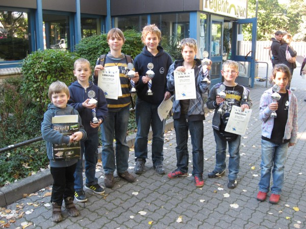 Die Gewinner der Jugendpreise: 2. Nelo Oshionwu (KSV Rochade Göttingen) 5 P. = 37. von 100 Teilnehmern 1.Simon Tennert (SVG Sazgitter) Zum ersten Mal fand die Bezirksmeisterschaft Blitz Mannschaft zum Anlass des 150-jährigen Vereinsjubiläums im Roswitha-Gymnasium in Bad Gandersheim statt. Dass das Turnier in Kombination mit der Blitzeinzelmeisterschaft ausgerichtet wurde, wirkte sich positiv aus. Erfreulicherweise verdoppelte sich die Anzahl der teilnehmenden Vereine. Neben den Favoriten vom Hamelner SV und SC Tempo Göttingen, die die vorderen Plätze belegten, starteten einige Vereine erstmalig bzw. nach langer Unterbrechung: 2) SC Tempo Göttingen (vorqualifiziert durch Platz 2 bei der Landesmeisterschaft Blitz Mannschaft 2011) zudem wurden bei der vorher ausgetragenen Blitzeinzelmeisterschaft: Nelo 13., Manuel 14., Tony 21.,Julius 24., Thomas 25., Christian 26. Mannschafts-Rangliste: Stand nach der 7. Runde 4. 2. KSV Rochade Götti 1602 3 1 3 7 - 7 12.5 --- 1. 011 Rosin,Julius 1740 M 0 2 5 1.0 - 6.0 1.75 0 2. 019 Oshionwu,Nelo 1733 M 4 1 2 4.5 - 2.5 10.00 4 3. 010 Drehwald,Manuel 1508 M 1 2 4 2.0 - 5.0 6.25 1 4. 032 Hartogh,Christian 1428 M 4 2 1 5.0 - 2.0 7.00 4 Puuh war das knapp. Am Ende konnte der KSV Rochade aber stolz sein über den 4.Platz in der U16, denn vor uns waren nur Teams, die nicht nur in Niedersachsen, sondern auch national zur Spitze zählen. 1.Runde: Gegen Wildeshausen gab es die erwartete 1:3-Niederlage, wobei Nelo aber am 2.Brett eine schöne Kombi gelang und Julius sich lange gegen Nationalspieler Spartak Grigorian halten konnte. Insgesamt waren wir aber chancenlos. 2.Runde: Spannender ging es dann schon gegen das zusammengekaufte Starensamble des SV Lingen zu: Nelo war an Brett 2 chancenlos, aber Christian konterte ausgezeichnet und mit einer schönen Partie holte er das 1:1. Der KSV durfte sich durchaus auch Hoffnungen auf einen Sieg machen, denn Julius stand gegen Nationalspieler Thorben Koop glatt auf Gewinn und auch Manuel hatte eine gute Stellung, doch am Ende setzte sich die größere Erfahrung doch noch durch: Schade es war ganz knapp. 3.Runde: Nach diesen beiden "Schlachten" konnten man den Rochadespielern ihre Müdigkeit ansehen. Und so gab es nur ein entäuschendes 2:2 gegen das Tabellenschlußlicht aus Braunschweig, wobei Julius eine klar gewonnene Endspielstellung noch verlor, indem er sich seinen Läufer einsperren ließ. Ein äußerst seltener Vorfall bei ihm. 4.Runde: Ein sicherer 2,5:1,5 Sieg gegen Lehrte. Nelo gewann, so daß wir an den anderen Bretter schnell die Remisangebote annehmen konnten. 5.Runde: Der KSV hat sich wieder gefangen, denn auch gegen Peine gab es einen ungefährdeten 3:1-Sieg und auch Manuels Partiequalität verbesserte sich. 6.Runde: Nun ging es gegen Hagen um den wichtigen Platz 4. Julius, der nun nicht mehr in das Turnier hineinfand, mußte bereits nach 18 Zügen die Segel streichen. Doch Manuel spielte eine Glanzpartie, er opferte in einem furiosen Angriff drei Bauern und gewann mühelos. Nelo kämpfte sich aus einer schwierigen Stellung wieder heraus und nahm das angebotene Remis seines Gegners an. Der ganze Druck lastete nun auf Christian, der anfänglich mit einer Mehrqualle auf Gewinn stand, dann aber gegen die unglaublich zäh kämpfende Kata Balasz unter Druck geriet, und so in ein remisiges Turmendspiel überleiten mußte, das er aber unbedingt gewinnen mußte, denn bei einem Mannschaftsremis wäre Hagen höchstwahrscheinlich in der letzten Runde an uns vorbeigezogen. Christian versuchte alles und....hatte das Glück des Tüchtigen auf seiner Seite. Seine Gegnerin beging den alles entscheidenen Fehler. Ein gaaanz wichtiger 2,5:1,5 Sieg, der für uns den sicheren 4.Platz bedeutete. 7.Runde: Sogar der 3.Platz war noch in Reichweite, dafür brauchte man "nur" einen Sieg gegen den amtierenden deutschen Meister aus Stade. Wenns leichter nicht ist.......aber die Rochadekinder waren zu Müde und nur wieder Christian gelang der halbe Ehrenpunkt zum verdienten 0,5:3,5 Erfolg für Stade. Am Ende war es also der erwartete Zieleinlauf des KSV Rochade Göttingen und nun heißt es "Berlin, Berlin wir fahren vieleicht nach Berlin ?". Jugendserie am12.05.2012 in Breitenworbis: 1. Christian Hartogh 6 P. aus 7 Partien, 11 TN Jugendserie am 31.01.2012 in Bad Zwischenahn: 4. Darja Rizo-Wellmann: 5 P. aus 7 Partien, 16 TN Jugendserie 21. Januar 2012 in Springe: 2. Christian Hartogh: 6,5 P. aus 7 Partien = Landesschnellschachmeister Mark Gorbach 4. beim Ramada-Cup in Hamburg. Einzeheiten und Tabelle unter www.ramada-cup.de Julius Rosin 5/7 =4.Platz in Hamburg Mark Gorbach 6/7=1.Platz in Travemünde Nelo Oshionwu 5,5/7 =3.Platz in Paderborn www.ani-cup.de www.schachopen.com www.schachtuerken-cup.de 16.-18.Dezember in Mansfeld: 5.Offene Südharzmeisterschaft 4. Nelo Oshionwu: 4 P. aus 5 6. Julius Rosin: 3,5 P. 31. Manuel Drehwald: 2,5 P. 39. Christian Hartogh: 2,5 P. von 58 TN Jugendserie 03.Dezember 2011 in Lingen: Christian Hartogh: 2. von 19 TN mit 6,5 P. aus 7 Partien. Tabelle der LJEM U8 und Schnellschachpokal U10 in Rotenburg: v.l.n.r.:Thorben (U6),Morris (U8),Robert(U14),Christian(U14),Kiilian(U14), Michael(U12) und Darja(U8). Endstand der NDJMM in Magdeburg vom 08.09.2011-12.09.2011: 12. 15. Rochade Göttingen 1423 3 1 3 7 - 7 15.0 39.0 1. 19 Oshionwu,Nelo 1476 M 1 0 5 1.0 - 5.0 18.5 1.50 2. 11 Rosin,Julius 1681 M 2 3 1 3.5 - 2.5 16.5 8.25 3. 462 Gorbach,Mark 1386 M 3 1 2 3.5 - 2.5 16.5 5.25 4. 53 Coeurjoly,Tony 1149 M 3 0 3 3.0 - 3.0 13.5 2.50 LJMM der U8 in Verden: KSV Rochade: 9:9 MP, 20,5 BP = 5. von 10 TN Jugendserie 03.07. Wolfenbüttel Christian Hartogh: 5,5 aus 7 = 1. von 11 TN 7 Runden Rundenturnier in Hildesheim: Christian Hartogh: 5,5 aus 7 = 1. von 7 TN 7 Runden Schweizer System JS in Hildesheim: Manel Drehwald: 5 aus 7 = 3. von 14 TN Alle Ergebnisse und Tabellen über nsj-online.de. Schach ist wirklich Sport. Das wurde bei den niedersächsischen Jugendlandesmannschaftsmeisterschaften wieder überdeutlich. Denn wer hätte gedacht, daß es beim Schach mehr Verletzte gibt als z.B. beim Fußball. Doch der Reihe nach: Zuallerst fiel Jan aus, er mußte aus gesundheitlichen Gründen einen Tag vor dem Turnier absagen, so daß auch kein Ersatz mehr zu bekommen war. Der Hammer war aber, daß uns EINEN TAG vor Turnierbeginn per E-Mail mitgeteilt wurde, daß unsere 2.Mannschaft in der U12 lieber doch nicht antreten sollte, denn aus irgendeinem Grunde hat man sich versehen, so daß bei einem Nichtverzicht unserer 2. das Turnier mit 9 Mannschaften hätte stattfinden müssen. Es war also viel Arbeit, auch psychologische Arbeit, nötig, um unser Team noch zurückzuziehen. Der erste Turniertag begann vielversprechend. Unsere Kinder zeigten gegen teils übermächtige Gegner sehr ansehnliche Partien, aber schon am ersten Tag wurde das Auge von Manuel immer dicker und roter. Auch Augentropfen unser mitgereisten Ärztin zeigten keine sofortige Verbesserung, so daß er vorsichtshalber abreisen mußte. Aber damit noch nicht genug: Am selben Tag fing sich Alex eine fiebrige Grippe ein, auch für ihn war an ein Weiterspielen nicht mehr zu denken, so daß unsere U14, die sich durchaus Hoffnungen auf einen 4. Platz machte, nur noch zu Zweit antrat. Doch damit nicht genug: Denn in der U12 bekam unser Jüngster Michael am 2.Tag nachts großes Heimweh, auch er mußte abgeholt werden, so daß für unser U12-Team mit nur noch 3 Kindern nichts mehr drin war. Als am letzten Spieltag, in dem es für unsere U16 um alles ging, ein 2:2 gereicht hätte, um sich für die Norddeutsche zu qualifizieren, auch Florian große Kopfschmerzen bekam, war das Schlimmste zu befürchten. Doch er wurde fitgespritzt, d. h. mit Tabletten spielfähig gemacht, so daß wenigstens unsere U16 die in sie gesetzten Erwartungen erfüllen konnte und hinter der übermächtigen Stader Truppe auf Platz 2 einlaufen konnte. Insgesamt trotz des Erfolges unserer U16 und einer großartigen kämpferischen Leistung von Jonathan Heutelbeck, der in der U14 von Partie zu Partie immer besser wurde, eine für uns unbefriedigend verlaufende Landesmeisterschaft. Aber das wird uns nicht wieder passieren, beim nächsten Male werden wir mit 2 Ärzten, Kinderspychologen, Ersatzspielern, Entertainer und Gepäckträger (für die Pokale) dort aufkreuzen. Jugendturnier in Braunschweig 07.Mai 2011: Christian Hartogh: 5,5 aus 7 = 2. von 19 TN Michael Domke: 3 aus 7 = 12. von 16 TN Quickstep-Chess-Turnier am 13.Februar in Wildeshausen: Julius Rosin: 2,5 aus 3 = 1. von 4 TN Sieger in Wildeshausen: Julius Rosin (KSV Rochade Göttingen) Jugendserie am 13.Februar in Delmenhorst: Christian Hartogh: 4 aus 7 = 9. von 26 TN Manuel Drehwald: 3 aus 5 = 20. von 51 TN Christian Hartogh: 2,5 aus 5 = 24. von 51 TN Sieger in Breitenworbis: Christian Hartogh, KSV Rochade Göttingen Bericht und Bilder von der Bezirksjugendeinzelmeisterschaft 2010 in Hameln: 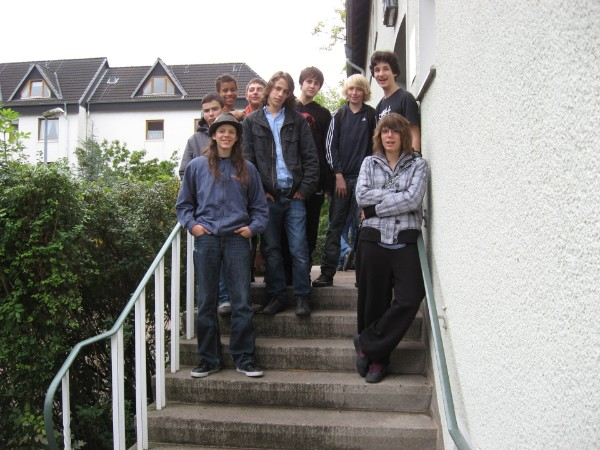 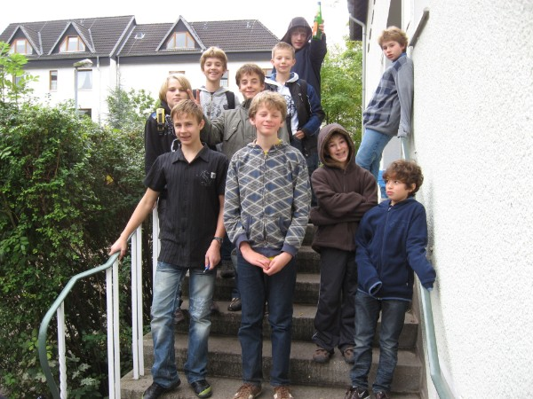
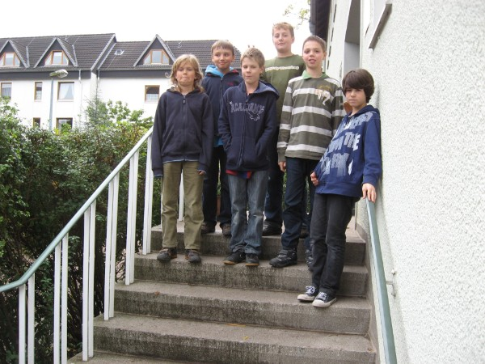 Unsere U14 in Hameln.
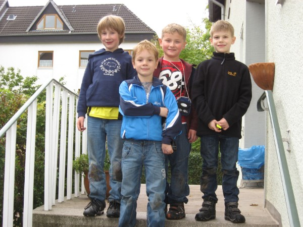 Unsere U12 in Hameln.
Unsere U10 in Hameln. 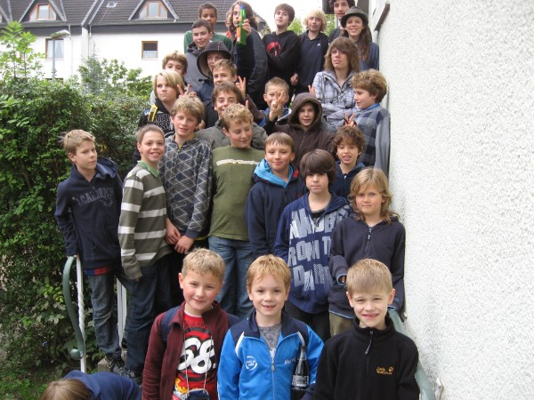
Alle zusammen..... Bericht von Hameln: Da der diesjährige Termin leider genau mitten in die Herbstferien gelegt wurde und Hameln ja auch nicht gleich um die Ecke liegt, konnte der KSV Rochade Göttingen nur mit 28 Kindern an den Bezirksjugendeinzelmeisterschaften teilnehmen. Dennoch scherzte ein Vereinsmitglied: "Das ist keine Bezirksmeisterschaft, das ist eine Rochade-Vereinsmeisterschaft...mit Gästen." Auf diesen Gedanken konnte man wirklich kommen, denn wo waren die schachspielenden Kinder der renomierten Vereine ESV-Göttingen, SW Northeim, MTV Bad Gandersheim, Tempo Göttingen, SK Bad Lauterberg, SK Plesse Bovenden, Einbecker SC und des SV Osterode..... ? Nur noch 7 Vereine insgesamt nahmen an diesem wichtigen Jugendturnier teil. Turnierbericht: U16: Da wir diesmal noch keinen A-Jugendlichen (U18) dabeihatten, wurde das Turnier zwischen der U18 und der U16 zusammengelegt. Nelo Oshionwu konnte überzeugend seinen Titel als Bezirksmeister der U16 verteidigen, er war der einzige, der es schaffte dem großen Favoriten Christian Frank vom Hildesheimer SV einen halben Punkt abzuknöpfen. Spannend war allerdings der Kampf um Platz 2, der ebenfalls die Qualifikation für die Landesmeisterschaften bedeutete. In der letzten Runde trafen Julius Rosin und Yannick Koch aufeinander. Julius mußte gewinnen, um sich diesen 2.Platz zu sichern. Er versuchte mit den weißen Steinen auch alles, fand aber im Endspiel nicht den richtigen Plan und gab die Partie Remis. Stark auch Mark Gorbach und Florian Fischer, die mit 4 Punkten auf den weiteren Plätzen folgten. Die anderen Rochade-Spieler landeten auf erwarteten Mittelfeldplätzen. U14: Die U14 spielte als einzige Altersklasse nur unter sich. Christian Hartogh legte los wie die Feuerwehr und gewann die ersten vier Partien allesamt, wobei er in der vierten Runde den Favoriten Robin Mai besiegen konnte. Doch er wurde dann in Runde 5 und 6 von seinen eigenen Vereinskameraden Daniel Peschkov und Manuel Drehwald gestoppt. Am Ende denoch ein ehrenvoller dritter Platz für Christian Hartogh, der im nächsten Jahr nochmal U14 spielen kann, vor Daniel Peschkov, der ebenfalls ein ganz großes Turnier spielte und sogar Titelverteidiger Simon Wellnitz hinter sich ließ. Besonders mit Weiß gewann Daniel alle Partien. Die Qualifikation von Manuel Drehwald war nur für ihn selbst überraschend, er hat sich in den letzten Monaten taktisch enorm weiterentwickelt, so gelang ihm gegen Jonathan Heutelbeck eine fantastische 6zügige Kombination (mit zweifacher Hinlenkung, Abzugsschach und doppelter Springergabel.) Ein bißchen enttäuscht war Alexander Vinnen, der mit einer DWZ von 1242 Nr. 2 der Setzliste war über seinen 6.Platz. Aber im heiß umkämpften Turmendspiel zeigte Robin Mai in der vorletzten Runde seine beste Turnierleistung. U12: Da Kilian Geistlich von Anfang an zu den Favoriten zu zählen war, war sein Sieg keine große Überraschung. Er setzte sich von der ersten Runde an an die Spitze des Feldes und nach harten Schlachten gegen Eric Fajeta und Robert Mogharrab in denen zweimal das ganze Brett brannte, schob er das ganze in den letzten beiden Runden in großmeisterlichem Stile nach Hause. Der zweite Platz von Robert Mogharrab war allerdings eine kleine Überraschung. Aber man hatte beim D-Gruppenspieler (!) immer den Eindruck als wollte er nach seiner Zweitrundenniederlage gegen Kilian alles geben. Und das tat er auch. Er gab nur noch ein Remis bis zum Ende ab, und die Qualifikation für die Landesmeisterschaften hat er nun ihn der Tasche. Auch Eric Fajeta hielt bis zum Ende mit dem Spitzentrio mit und verlor nur gegen die beiden Ersten. Mit ein bißchen mehr Erfahrung, es war sein erstes großes Turnier, wäre mehr drin gewesen. Die anderen U12-Spieler von Rochade Göttingen landeten im Mittelfeld. U10+U8: Die U10 spielte mit der U12 in einem Turnier zusammen, wobei wir mit Morris Schütte sogar einen U8-Spieler dabeihatten. Natürlich wurde die U8-Meisterschaft nicht ausgeschrieben, aber mit ein bißchen mehr Fingerspitzengefühl hätte man Morris durchaus diesen Titel zusprechen können, denn teilweise mußte er gegen Kinder antreten, die 3 bis 4 Jahre älter waren. Bei den Landesmeisterschaften jedenfalls wird dort anders auf solche Situationen reagiert. Zwischen den anderen beiden U10 Spielern Mathis Diederichsen und Oskar Meier gab es ein spannendes Gefecht um Platz zwei, daß Mathis knapp für sich entscheiden konnte. Allerdings sind beide für Norderney qualifiziert.
SF Paderborn 2000 e.V. Herbstturnier Gruppe F 08. bis 10. Okt. 2010 Rangliste: Stand nach der 5. Runde
Nr. Teilnehmer TWZ 1 2 3 4 5 6 Punkte SoBerg 1. Gorbach, Mark 1058 ½ 1 1 1 1 4.5 8.50 2. Gatzke, Carolin 1076 ½ 1 ½ 1 1 4.0 7.75 3. Schrödter, Eric 1125 0 0 1 1 1 3.0 3.50 4. Möller, Lisa-Marie 1085 0 ½ 0 1 ½ 2.0 3.25 5. Kruschinski, Björn 1051 0 0 0 0 1 1.0 0.50 6. Sternberg, Jorena 1112 0 0 0 ½ 0 0.5 1.00
28.August 2010 in Gronau BZSEM. Platz Name DWZ Verein Punkte Buchholz SoBerg 1. Ermel, Dirk 2098 Hildesheimer 6,0 P. 31,5 26,25 2. Rzehak, Michael 2039 SC Tempo Göttingen 5,5 31,0 23,50 3. Frank, Christian 1982 Hildesheimer SV 5,0 31,5 22,00 4. Tietze, Manfred 1774 SC Tempo Göttingen 5,0 30,0 19,00 5. Höxter, Heinrich 2124 SC Bad Salzdetfurth 5,0 29,0 18,00 6. Helbing, Mathias 1900 SK Gronau 5,0 28,0 20,25 7. Schmoldt, Rüdiger 1917 Hildesheimer SV 4,5 26,5 14,50 8. Hampel, Gunnar Alfelder SV 4,0 31,0 16,25 9. Pietsch, Michael 2153 SC Tempo Göttingen 4,0 28,5 14,75 10. Jacobi, Felix-Hagen 1916 Hamelner SV 4,0 28,0 13,00 11. Brunotte, Peter 1971 Hamelner SV 4,0 24,5 12,00 12. Funke, Christian 1682 SK Gronau 4,0 24,5 10,50 13. Müller, Wolfgang 1670 SG Holzminden 4,0 24,5 10,00 14. Braun, Ingram 1893 ESV Rot-Weiß Göttingen 4,0 23,0 11,00 15. Marks, Udo 1759 SK Gronau 3,5 26,0 11,25 16. Kobs, Stephan, Dr. 1853 SC Bad Salzdetfurth 3,5 25,0 10,25 17. Post, Thomas 1725 KSV Rochade Göttingen 3,5 24,0 10,75 18. Külshammer, Michael 1792 SV Drispenstedt 3,5 24,0 8,25 19. Seehawer, Ralf 1749 MTV Bad Gandersheim 3,5 23,0 7,50 20. Chylek, Christopher 1711 Alfelder SV 3,5 22,5 8,00 21. Pieruschka, Marius 1540 ESV Rot-Weiß Göttingen 3,5 21,5 8,25 22. Oshionwu, Nelo 1574 KSV Rochade Göttingen 3,0 24,5 8,50 23. Lier, Ilja 1707 Hildesheimer SV 3,0 22,0 5,50 24. Rosin, Julius 1308 KSV Rochade Göttingen 2,5 25,5 8,25 25. Wilting, Alexander 1852 ESV Rot-Weiß Göttingen 2,5 24,0 6,00 26. Zimmer, Bernd 1615 SG Holzminden 2,5 22,5 7,00 27. Vinnen, Jens KSV Rochade Göttingen 2,0 20,5 3,50 28. Hake, Martin 1143 MTV Bad Gandersheim 2,0 19,0 3,00 29. Milchreit, Oliver 925 1,5 18,5 2,25 30. Koop, Ludwig 1165 SK Gronau 1,5 18,0 2,25 31. Junge, Susanne 964 SK Gronau 1,5 17,5 2,25 32. Klose, Benjamin 1135 SK Gronau 1,5 14,5 2,25
29.Mai BBEM in Bad Gandersheim
Platz Name DWZ Verein 1 2 3 4 5 6 7 8 9 10 11 12 13 14 15 16 17 Punkte SoBerg 1. Böttcher, Christian 2126 SC Tempo Göttingen ** ½ 1 1 1 ½ 1 0 1 1 1 1 1 1 1 1 1 14,0101,00 2. Tonndorf, Matthias 2092 SC Bad Salzdetfurth ½ ** ½ ½ 1 1 1 1 1 1 0 1 1 1 1 1 1 13,5 97,00 3. Petzold, Golo 2068 SC Tempo Göttingen 0 ½ ** 1 0 1 1 1 1 1 1 1 1 1 1 1 1 13,5 89,75 4. Markgraf, Stefan 2053 SC Bad Salzdetfurth 0 ½ 0 ** 1 1 1 1 1 1 1 1 1 1 1 1 1 13,5 88,25 5. Priebe, Jan 2208 SC Tempo Göttingen 0 0 1 0 ** 1 0 1 1 1 1 1 1 1 1 1 1 12,0 72,50 6. Post, Thomas 1721 KSV Rochade Göttingen ½ 0 0 0 0 ** 1 0 1 1 1 1 1 1 1 1 1 10,5 57,00 7. Markgraf, Claudia 1914 SV Osterode-Südharz 0 0 0 0 1 0 ** 1 ½ 1 1 1 1 1 1 1 1 10,5 56,25 8. Bayerle, Waldemar 2037 MTV Bad Gandersheim 1 0 0 0 0 1 0 ** 0 0 1 1 1 1 1 1 1 9,0 48,00 9. Seifart, Mario 1939 SC Tempo Göttingen 0 0 0 0 0 0 ½ 1 ** ½ 1 1 ½ 1 1 1 1 8,5 39,50 10. Hake, Hartwig 1656 MTV Bad Gandersheim 0 0 0 0 0 0 0 1 ½ ** 1 1 ½ ½ 1 1 1 7,5 32,75 11. Zimmer, Bernd 1618 SG Holzminden 0 1 0 0 0 0 0 0 0 0 ** 0 0 1 1 1 1 5,0 23,00 12. Oshionwu, Nelo 1481 KSV Rochade Göttingen 0 0 0 0 0 0 0 0 0 0 1 ** 1 1 0 1 1 5,0 15,50 13. Unger, Dieter 1439 KSV Rochade Göttingen 0 0 0 0 0 0 0 0 ½ ½ 1 0 ** 0 ½ 1 ½ 4,0 16,75 14. Hampel, Gunnar Alfelder SV 0 0 0 0 0 0 0 0 0 ½ 0 0 1 ** ½ 1 1 4,0 11,75 15. Costanzo, Piero KSV Rochade Göttingen 0 0 0 0 0 0 0 0 0 0 0 1 ½ ½ ** 0 1 3,0 9,50 16. Fischer, Florian 1161 KSV Rochade Göttingen 0 0 0 0 0 0 0 0 0 0 0 0 0 0 1 ** 1 2,0 3,50 17. Muermans, Ansgar 1002 SV Osterode-Südharz 0 0 0 0 0 0 0 0 0 0 0 0 ½ 0 0 0 ** 0,5 2,00
12.16.Mai 2010: Jugendlandesmannschaftsmeisterschaften der U12, der U14 und der U16 in Lingen.
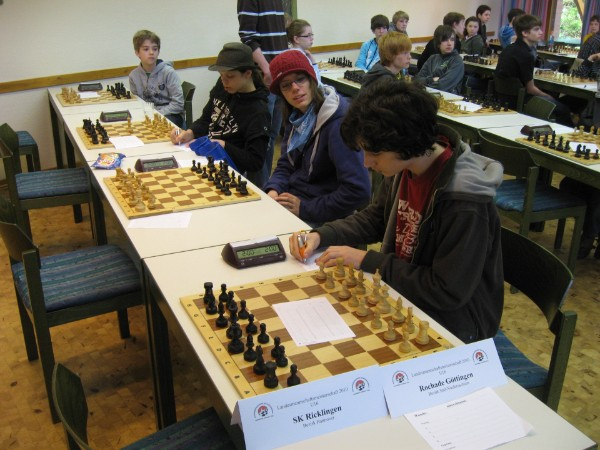
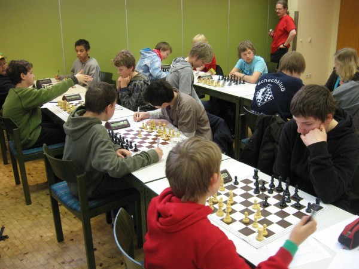
Unsere U14: v.l.n.r.: Nelo Oshionwu, Alexander Vinnen, Mark Gorbach Und Florian Fischer.
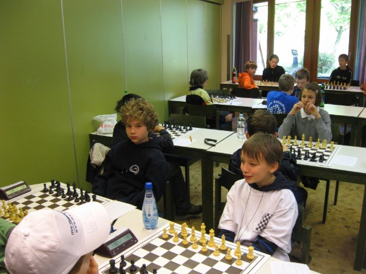
Brett 1und 2 unseres U12-Teams: v.l.n.r. Christian Hartogh und Leonhard Hemmerlein.
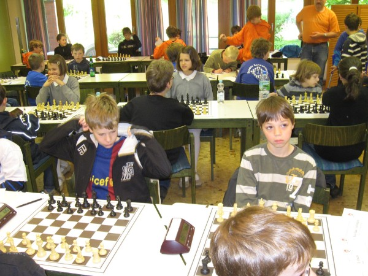
Bretter 3 und 4 unseres U12-Teams: v.l.n.r. Kilian Geistlich und Robert Mogharrab. U16 Endstand:
Kommentar: Der erwartete letzte Platz für unser "U16"-Team, das sowohl von der Altersstruktur als auch vom Geschlecht dort gar nicht hingehörte, dennoch war es wichtig, daß sie dabeiwaren. Sie haben viel gelernt....
U14 Endstand:
Kommentar: Schade, bis zum letzten Spieltag konnte sich unsere erstzgeschwächte U14-Mannschaft Hoffnungen machen sich für die Norddeutsche Mannschaftsmeisterschaft zu qualifizieren. Aber in der letzten Runde haben die Kräfte nachgelassen. Besonders deutlich wurde dies bei Florian, der mit 4 Siegen startete und dann einbrach. Ganz stark war "Ersatzspieler" Alexander Vinnen an Brett 2, der nachwies, daß sein Vereinsvizemeistertitel kein Zufall war. Endstand U12:
Kommentar: Leider fuhr auch unsere U12-Mannschaft, die in der Qualifikation Goslar hinter sich lassen konnten, als Tabellenschlußlicht nach Hause. Die anderen Teams erwiesen sich einfach als erfahrener. Besonders traurig war Leonhard, der in 4 Partien klar auf Gewinn stand und dennoch punktlos blieb. Aber wir sollten uns nicht mutlos machen lassen. 3 unserer Kinder sind auch im nächsten Jahr für diese Altersklasse noch spielberechtigt und wir haben gerade in der U12 noch sehr viele Talente.... 12.März 2010: Bezirksjugendmannschaftsmeisterschaft in Wolfenbüttel: In Wolfenbüttel fanden die Bezirksjugendmannschaftsmeisterschaften der Altersklassen U10, U12, U14 und U16 statt. Dabei wurden die Bezirke Braunschweig und Südniedersachsen zusammengelegt. Der KSV Rochade war in allen Altersklassen mit Außnahme von Goslar in der U12 alleiniger südniedersächsischer Teilnehmer. Zum erstenmal konnte dabei unser "Dreamteam" in der U14 seine Spielstärke demonstrieren. Sie gewannen auch vor den U16-Teams die Gesamtwertung. Auch unsere U16-Mannschaft, das nur aus U14-Spielern bestand, schlug sich hervorragend. Auffällig dabei unser "Pattfallenspezialist" Lewis Lee am 4.Brett. In der U12 gab es mit Goslar ein starken Konkurrenten, aber auch hier behielten die Rochade-Kinder die Oberhand. Unsere Jüngsten in der U10 hielten ebenfalls tapfer mit, hier fiel vor allem der 7jährige Mathis Diederichsen auf, der mit 5 Punkten aus den ersten 6 Partien unser Topscorer war. Bis zur letzen Runde kämpfte unsere U10 um den Gesamtsieg mit doch am Ende reichte die Kraft nicht ganz. Ergebnisse : U10
U12-U16:
1.KSV Rochade Göttingen U14 13:1 MP 24 BP 2.JFZ Schöningen U16 I 13:1 MP 23,5 BP 3.Peiner SV U14 9:5 MP 4.Caissa Wolfenbüttel U14 8:6 MP 16 BP 5.Peiner SV U12 8:6 MP 14,5 BP 6.KSV Rochade Göttingen U16 8:6 MP 13,5 BP 7.Braunschweiger SF U12 7:7 MP 14,5 BP 49 Buchholz P. 3 Mannschaftssiege 8.Caissa Wolfenbüttel U12 I 7:7 MP 14,5 BP 49 Buchholz P. 2 Mannschaftssiege 9.KSV Rochade Göttingen U12 7:7 MP 13 BP 10.SK Goslar U12 7:7 MP 12,5 BP 11.JFZ Schöningen U16 II 6:8 MP 13 BP 12.Caissa Wolfenbüttel U12 II 6:8 MP 12 BP 13.SG Ricarda-Huch 5:9 MP 12,5 BP 14.BS-Gliesmarode U16 5:9 MP 9,5 BP 15.Braunschweiger SF U14 3:11 MP 16.Caissa Wolfenbüttel U12 III 0:14 MP
Unsere Jüngsten: Das U10-Team v.l.n.r. mit Michael Domke, Sergej Tkach, Mathis Diederichsen und Tobias Buck-Gramcko.
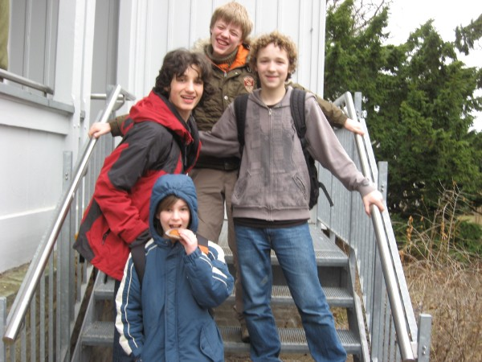
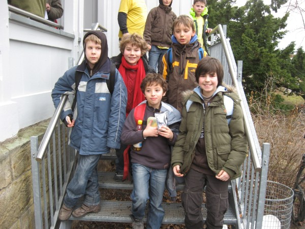 Unsere Lustigsten: Das äääh U16-Team: v.l.n.r: Maximilian Langsch, Lewis John Lee, Jonathan Heutelbeck und Tim Würzberg.
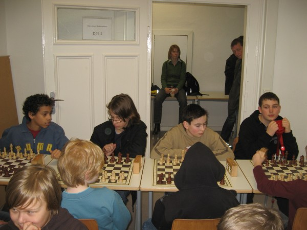 Unsere Zahlreichsten: Das U12-Team: v.l.n.r. Kilian Geistlich, Christian Hartogh, Jonas Dihazi, Leonhard Hemmerlein und Eric Fajeta.
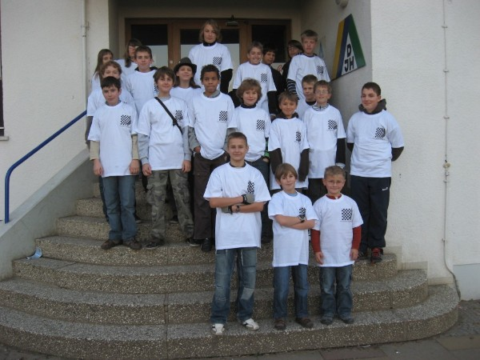
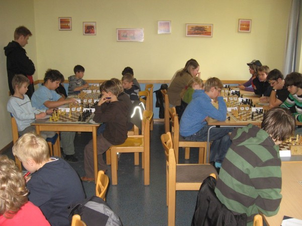 Unsere Siegreichen: Das U14-Dreamteam (alle mit 6 Siegen und 1 Niederlage) v.l.n.r. Nelo Oshionwu, Julius Rosin, Mark Gorbach und Florian Fischer.
18-20.Dezember: Ramada-Cup in Kassel. Gruppe A · Gruppe B · Gruppe C · Gruppe D · Gruppe E · Gruppe F
08.November: Nelo Oshionwu gewinnt ein Jugendschachturnier in Breitenworbis.
Kreiseinzelmeisterschaft U 14 2009 des Eichsfelds Fortschrittstabelle: Stand nach der 7. Runde (nach Rangliste) Nr. Teilnehmer NWZ 1 2 3 4 5 6 7 Punkte Buchh SoBerg 1. Oshionwu, Nelo 1433 S/1 W/1 S/1 W/1 S/1 W/½ S/0 5.5 31.5 24.25 Rochade Göttingen 9 7 6 2 5 4 3
2. Iseke, Reinhard 1060 W/1 S/1 W/½ S/0 S/1 W/1 S/1 5.5 26.5 18.75 SV Breitenworbis 15 10 5 1 4 7 6 3. Lath, Vinzent 981 S/0 W/1 S/1 W/0 S/1 W/1 W/1 5.0 25.0 16.50 SV Gernrode 6 12 11 4 15 9 1 4. Halle, Julia 955 W/0 S/1 W/1 S/1 W/0 S/½ W/1 4.5 28.5 17.25 SG Burgtonna 10 15 8 3 2 1 5 5. Danneleit, Tobias 1091 S/1 W/1 S/½ W/1 W/0 S/1 S/0 4.5 28.5 15.75 SV Breitenworbis 12 11 2 6 1 10 4 6. Gast, Antonia 1261 W/1 S/1 W/0 S/0 W/1 S/1 W/0 4.0 29.5 14.00 SV Breitenworbis 3 8 1 5 13 14 2 7. Stieding, Matthias 1132 W/1 S/0 W/1 S/0 W/1 S/0 S/1 4.0 26.0 12.00 BSV Mühlhausen 04 14 1 13 10 8 2 11 8. Schirrmeister, Laura 1053 S/1 W/0 S/0 W/1 S/0 w/+ W/1 4.0 21.5 9.00 SG Burgtonna 13 6 4 11 7 * 10 9. Rohrmann, Michael 1000 W/0 S/0 W/1 S/1 W/1 S/0 w/+ 4.0 19.5 7.00 BSV Mühlhausen 04 1 14 15 12 10 3 * 10. Stöber, Alexander 1232 S/1 W/0 S/1 W/1 S/0 W/0 S/0 3.0 28.5 10.50 SK Dingelstädt 4 2 14 7 9 5 8 11. Meier, Claudia w/+ S/0 W/0 S/0 W/1 S/1 W/0 3.0 23.5 6.00 SK Dingelstädt * 5 3 8 12 13 7 12. Buchholz, Lukas 734 W/0 S/0 w/+ W/0 S/0 W/1 W/1 3.0 19.5 3.00 Rochade Leinefelde 5 3 * 9 11 15 14 13. Aschenbach, Maximilian W/0 s/+ S/0 W/1 S/0 W/0 S/1 3.0 18.0 3.00 SK Dingelstädt 8 * 7 14 6 11 15 14. Rhode, Johannes 749 S/0 W/1 W/0 S/0 w/+ W/0 S/0 2.0 21.0 4.00 SK Dingelstädt 7 9 10 13 * 6 12 15. Leibeling, Anna-Luisa 673 S/0 W/0 S/0 w/+ W/0 S/0 W/0 1.0 25.0 0.00
SV Gernrode 2 4 9 * 3 12 13
JUGEND-BEZIRKSMEISTERSCHAFT in HILDESHEIM
BJEM 2009U16 & U18 in Hildesheim
BJEM 2009U14 in Hildesheim
BJEM 2009U10 & U12 in Hildesheim
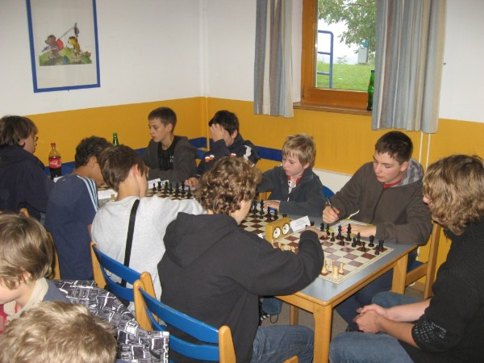 Rochade Göttingen ist angekommen.
Die U10, U12,U16 und die U18 bei der Arbeit.
Die U14 bei der Arbeit. 4.und letzter Spieltag: Rochade Göttingen ist überaus erfolgreich. Nelo Oshionwu wurde in der U14 sowohl im Blitzschach als auch im Turnierschach Jugendbezirksmeister. Viktoria Borissova wurde Bezirksmeisterin der weiblichen U14. Christian Hartogh wurde in einem dramatischen Stichkampf Vizemeister in der U12 und Jugendblitzmeister, Julius Rosin Vizemeister der U14 und Irene Arbeiter Vizemeisterin der weiblichen U16. Ebenfalls hervorragende Ergebnisse erzielten Michael Domke mit dem 3.Platz in der U10, Leonhard Hemmerlein mit dem 4.Platz in der U12 und vor allem Florian Fischer mit dem 4.Platz in der U14 (er unterlag nur den beiden Spitzenreitern Nelo und Julius). -3.Spieltag: Leider ist es nicht möglich Bilder aus Hildesheim zu schicken, diese werden nachgereicht. Bisher verläuft das Turnier ohne Zwischenfälle. U16: Irene Arbeiter befindet sich mit 2,5 P. weiterhin im Mittelfeld der Tabelle. U14: Der Triumphmarsch von Rochade Göttingen geht weiter. Julius Rosin führt mit 5,5 P. vor Nelo Oshionwu 5 P. Julius ist sicher, Nelo fast sicher bei den Landesmeisterschaften dabei. Auf dem geteilten dritten Platz folgen mit Florian Fischer, Andre Butkevich und Mark Gorbach mit 4 P. weitere Rochadekinder, die ebenfalls noch eine Chance auf die ersten beiden Plätze haben. U12: Christian Hartogh ist geteilter Erster und kann morgen mit einem Sieg über Kilian Geistlich noch Bezirksmeister werden, ein Sieg über Kilian Geistlich, der ebenfalls noch Chancen auf den zweiten Platz hat ist Voraussetzung dafür. U10: Michael Domke greift ebenfalls nach den Sternen. Ein Sieg morgen und er ist mit großer Wahrscheinlichkeit Bezirksmeister. -2.Spieltag: Stand nach 4 Runden: Michael Domke ist 2. der U10, Jugendblitzmeister Christian Hartogh fing sich heute gegen Simon Wellnitz seine erste Niederlage ein und ist jetzt zusammen mit Leonhard Hemmerlein geteilter 2. Morgen werden die beiden wohl gegeneinander antreten müssen. Die U14 wird sportlich von den Rochadekindern dominiert. Tabellenführer mit 4 Siegen in Serie ist Julius Rosin vor dem frischgebackenen Bezirksblitzmeister Nelo Oshionwu mit 3,5 P. gefolgt von Florian Fischer, Andre Butkewich u.a. mit 3 Punkten. Chancen haben aber auch noch Piero Costanzo und Mark Gorbach mit 2,5 Punkten. In der U16 belegt Irene Arbeiter mit 1,5 P. einen guten Mittelplatz. Aufgefallen ist weiterhin auch, dass die Kosten für die Jugendherberge geringer sind als vorher veranschlagt, somit bekommen die Eltern wahrscheinlich etwas Geld zurück. -1.Spieltag: Der KSV Rochade Göttingen ist angekommen. Nachdem die Hinreise relativ probemlos verlief, kamen wir um ca.16.30 Uhr in Hildesheim an. Nachdem auch die anfänglichen Organisationsschwierigkeiten beseitigt worden waren, gingen alle frisch und ausgeruht ans Werk sprich an ihre Partien.
| |||||||||||||||||||||||||||||||||||||||||||||||||||||||||||||||||||||||||||||||||||||||||||||||||||||||||||||||||||||||||||||||||||||||||||||||||||||||||||||||||||||||||||||||||||||||||||||||||||||||||||||||||||||||||||||||||||||||||||||||||||||||||||||||||||||||||||||||||||||||||||||||||||||||||||||||||||||||||||||||||||||||||||||||||||||||||||||||||||||||||||||||||||||||||||||||||||||||||||||||||||||||||||||||||||||||||||||||||||||||||||||||||||||||||||||||||||||||||||||||||||||||||||||||||||||||||||||||||||||||||||||||||||||||||||||||||||||||||||||||||||||||||||||||||||||||||||||||||||||||||||||||||||||||||||||||||||||||||||||||||||||||||||||||||||||||||||||||||||||||||||||||||||||||||||||||||||||||||||||||||||||||||||||||||||||||||||||||||||||||||||||||||||||||||||||||||||||||||||||||||||||||||||||||||||||||||||||||||||||||||||||||||||||||||||||||||||||||||||||||||||||||||||||||||||||||||||||||||||||||||||||||||||||||||||||||||||||||||||||||||||||||||||||||||||||||||||||||||||||||